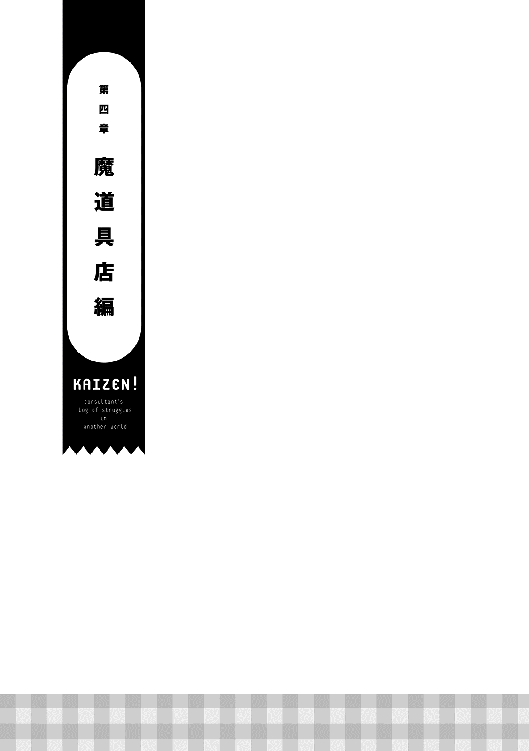
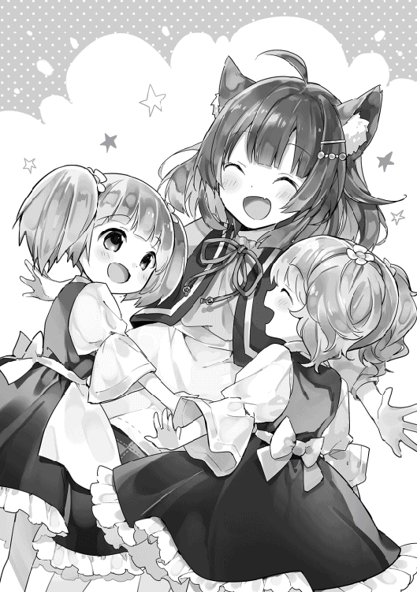

| かいぜん！～異世界コンサル奮闘記～2 | |
| 秦本幸弥 | |
| (2015) | |
異世界に来てから、数々のお店の業績をＶ字回復させてきた幸助。そんな彼に領主から巨大なビジネスチャンスが舞い込む！ だが今回の相手、魔道具店の店主は全く顧客のことが見えておらず、独りよがりで売れない商品を量産するばかり......。万策尽きて絶体絶命のピンチの中、幸助は逆転の発想で、誰も予想しなかった商品に目をつける。――現代日本の経営知識で、幸助が再び異世界ビジネスの常識をくつがえす! 書き下ろし番外編「サラのお仕事奮闘記」も収録!!
イラスト：堀泉インコ
デザイン：川谷康久（川谷デザイン）
「用語集」ほか本文データ制作：TOブックスデザイン室
ＣＯＮＴＥＮＴＳ
● ● ●

秋は深まり、アヴィーラ伯爵領も寒い日が多くなってきた。街を東西と南北に貫く二本のメインストリートには時おり枯葉が駆け抜ける。
二本のメインストリートが交わるロータリー式の交差点から東に歩くこと約十分。ここに今、市民の話題を集めている店がある。黒い外壁に重厚なオークの扉。そして小さな四つのガラス窓がはめられたお洒落な店。『アロルドのパスタ亭』だ。ちょうど今も数名の通行人が話題にしているようで、店を指差しつつ楽しそうに歩いている。
「ねえねえこのお店、知ってる？」
「もちろん。知らない人なんていないんじゃない？ ここのパスタ、大人気だから」
「だよねー。トマトバジルパスタ、病みつきになるんだよね」
「えっ？ 私はここでしか食べられないカルボナーラの方がおいしいと思うわ」
それぞれが好みのメニューについて話している。カルボナーラは幸助とサラが食材調達に奔走し、アロルドのセンスで完成させたものだ。
「ふっ、甘いな。この店はパスタレストランと見せかけて、一番の売りはハンバーグなんだよ」
「いや、パスタレストランなんだから絶対にトマトバジルパスタ！」
「いや、カルボナーラよ！」
どのメニューもそれぞれファンを獲得しているようだ。今日は日曜日。残念ながら『アロルドのパスタ亭』は定休日だ。楽しそうに掛け合いをしている通行人は店に入ることはなく、そのまま店の前を通過していった。
経営コンサルティング会社で深夜残業中、突然この世界に召喚されてしまった松田幸助がこの街に来て半年が経つ。幸助はこの間、多くの人々の縁に恵まれ、様々な店の経営改善を成し遂げていた。
始まりはバジルの香りにつられ、たまたま入ったパスタレストランでのことだ。その店で提供されているパスタの味は絶品なのに、何故か閑古鳥が鳴いていた。原因は通行人にレストランがあると認知されていなかったことだ。
そこで幸助はサラリーマン時代の知識を活かし、その店の給仕サラ、店主アロルドと共に経営改善に取り組む。立て看板の設置に始まり経費削減、新メニューの開発などを行った結果、見事繁盛店へと変貌させたのだった。
次に出会ったのが小麦などを販売するルティアの店。この店はどこでも扱っている穀物類が商品のため、こっそりと安く販売する競合店に客を奪われていた。幸助と出会った時には、これ以上販売量が減ると仕入単価が上がり、店を続けられなくなってしまうという状況だった。
その状況下で幸助は、お荷物扱いされていた高品質なオリーブオイルに可能性を見出す。一般には高価で売りにくい商品を、品質に応じて三段階用意した。他では買うことのできない品質が客を呼び、見事立て直しに成功したのだった。
そしてつい最近改善に成功したのが、騎士団からの受注が無くなり困っていたホルガーの武器屋だ。幸助は店のターゲットを騎士団から駆け出しの冒険者に切り替えることで経営改善しようとした。しかし、駆け出しの冒険者にはホルガーの作る高品質な武器を買えるだけの支払い能力が無かった。そこで巻き込んだのが、面倒見の良い冒険者ランディと冒険者ギルドだ。
二人でギルドマスターに掛け合い、一定の基準を満たした武器や防具をギルド認定装備にし、それらを購入する場合、最大で半額の融資が受けられるという制度を導入してもらった。
制度はその後、順調に冒険者へ浸透していった。ホルガーの槍だけではなく剣や弓、防具に至るまで認定された装備は多岐に渡る。
制度を悪用し融資を受けたまま行方をくらます冒険者もいたのだが、その都度制度を見直し、ブラッシュアップをしているようだ。魔物討伐の成功率が向上し、ギルドの収支が改善されたことも積極的な取り組みを後押ししている。
◇
「かんぱーい！」
ここは定休日の『アロルドのパスタ亭』。本来であれば静寂に包まれているはずの店からは賑やかな声が漏れている。
店内では十五歳になるサラの誕生日パーティーが催されている。十五歳になるということは、この国では成人の仲間入りをするということだ。
「誕生日おめでとう、サラ。はい、これプレゼント」
「ありがとう！ コースケさん」
サラは笑顔で幸助からのプレゼントを受け取る。包みの中身はマフラーだ。
「わぁ、暖かそう！」
早速首に巻いて見せる。
「うん。似合ってるよ」
「ほんと？」
クルッとひと回りするサラ。白いマフラーが真っ赤な髪を引き立てている。
「うん。色の選択は成功だね。サラの真っ赤な髪が引き立って、可愛いよ」
「ありがと！」
幸助の言葉にサラは頬を朱に染める。
「でも、何でここに......」
マフラーを外すとサラはギギギッと横を見る。そこには清楚で仕立ての良い服を着た、グレー髪の少女がいた。領主令嬢のアンナだ。
「あら？ お友達がパーティーをするからと誘ってくださったのよ」
そう言いながら幸助を見るアンナ。ここ最近幸助とアンナは仕事で頻繁に会っている。
騎士団の武器調達については政治的なことも絡むため、多くは口出しできなかった。だが、裏方の業務に関することは一般的な企業との共通点も多い。今はアンナを通して業務の標準化に取り組んでいる。一人の優秀な人に頼ることなく、誰でも一定以上の成果が上げられるようにするための仕組み作りだ。
そのような取り組みの折、ふとした会話の中でサラの誕生日パーティーの話題になった。新作料理も出てくると聞き、アンナは食いついてきたのだ。
ちなみに武器屋のホルガーとパロも誘ったのだが、年中無休の冒険者相手に店を空けることができないため欠席となった。
「それに私も来月誕生日ですの。同い年同士仲良くしましょう。はい。これは私からのプレゼント」
「あ、あ、あ、ありがとうございます！ アンナ様！」
「あら、アンナ様だなんて他人行儀ですこと。もうお友達でしょ。呼び捨てでも結構ですのよ」
領主令嬢などサラにとって雲の上の存在である。おいそれと呼び捨てなどできない。おもむろに幸助の方を向くと大丈夫という表情で頷く。それを見てサラはアンナの名前を呼ぶ。
「アンナ......さん」
「まあ、それでも良いですわ。それよりも早く......」
そう言うと横を向き、テーブルへ熱い視線を送るアンナ。色とりどりの料理が並んでいる。その中に、領主令嬢ですら今まで見たこともない、ひときわ目を引くものがある。
誕生日会には欠かせない、白くて丸い何か。
そう、ケーキである。
誕生日パーティーをやるということで幸助がアロルドにイメージを伝えたところ、見事に再現してくれたのだ。直径は幸助の手のひらほど。ケーキ屋のサイズでいえば六号くらいだ。ちなみにケーキサイズの〇号という数字は、三倍にすると直径（センチメートル）になる。
「よし、切り分けてやる」
そう言うとアロルドは包丁を取り出し六等分に切り分ける。そしてそれらを手際よく小皿へ載せ、皆へ配る。
「いただきます！」
口にした途端、恍惚とした表情を浮かべる女子三人。
「おいしいね！ やっぱりお父さんの料理は最高だよ！」
「まあ、なんて素晴らしい味ですの！ クリームの甘みと中に隠れているフルーツの酸味が絶妙なマリアージュを醸し出していますわ」
サラの母ミレーヌは二人とは対照的に黙々と食べている。だがその表情は真剣そのものだ。瞬く間に三人の皿からケーキは姿を消す。評判上々でアロルドも気分が良さそうだ。
しかしここで重大な問題が発生した。
パーティーの参加メンバーは五人。アロルド一家に幸助とアンナだ。それに対して切り分けたケーキは六つ。
じー。
女子三人が最後に残った一切れに視線を注ぐ。
激しい争奪戦のゴングは打ち鳴らされた。
「私の誕生日なんだから当然これは私のものだよ！」
「私は滅多にここには来られないのですから食べる権利がありますわ」
「ここは年長者を敬わないとね」
熾烈な攻防戦を唖然と見つめるアロルド。幸助はヤレヤレという感じで首を左右に振ると声を出す。
「アンナさん、僕のケーキをどうぞ。だからその残ったケーキはサラが食べたら？」
食後にと思い、まだ手を付けてなかった皿をアンナに差し出す幸助。
「あら？ お気遣いいただかなくてもよろしかったのに」
言葉とは裏腹に、何の躊躇もなくケーキを受け取るアンナ。それを見たサラは、すかさずテーブルの上にある最後の一つへ手を伸ばす。遠慮はしないようだ。
「ありがとう！ コースケさん！」
そしてミレーヌはというと。
「......」
「なんだよ」
ミレーヌの視線が激しくアロルドへ突き刺さる。アロルドのケーキは既にその半分が胃に納まっている。
「分かったよ。俺のはお前と半分ずつな」
「あら。半分じゃなくて私に全部くれてもよかったのに」
「もう食べたものは戻らん！」
ケーキ騒動がひと段落すると、アロルドはキッチンから湯気を立てた大皿を持って来た。色とりどりの料理が並ぶテーブルが更に賑やかになる。
「これが今日のメイン。レッドボアの赤ワイン煮込み。新作だ」
幸助にもお馴染みとなった魔物レッドボアが、今回は煮込み料理として登場した。
これも幸助が漏らしたリクエストをアロルドが実現してくれたものだ。アヴィーラ伯爵領の名産品であるトマトや赤ワインをふんだんに使用した料理である。
この開発は、カルボナーラやハンバーグ以上にアロルドを悩ませた。幸助からの新作リクエストは今までも大雑把だったが、今回はそれに輪をかけるように適当だった。それは「肉の煮込みが食べたい」という欲望だけのリクエストだったのだ。味付けや材料の補足は一切無しである。
それでもアロルドは必死にそのリクエストに応えた。幸助からのリクエストはアロルドの職人魂を刺激するからだ。幸助の食べたことがある料理を俺が作れない訳ないという意地でもある。
「おいしそうですね」
「だろ。長時間煮込んだからな。こういうのはやっぱり魔道コンロを使うに限る」
「へぇ、魔道コンロって便利なんですね」
「おう。もうこれが無きゃやってられないぞ」
魔道コンロといえば幸助がアロルドの店を経営改善する際に初めて見たものだ。
アロルドの店では一般的な火をくべる窯もあるが、煮込む必要がある料理にはこれが使用されている。
熱源は魔石である。魔石には寿命があり、内包された魔力が枯渇すると使用できなくなるため、別の魔石に交換する必要がある。
「いただきまーす」
女性陣がレッドボアの赤ワイン煮込みを確保したのを確認すると、幸助も自分の分の肉を小皿へ取る。
大きな肉の塊にスプーンを入れる。ほとんど抵抗なく肉は分断される。相当煮込まれているようだ。黒に近い赤色のソースをたっぷり肉に絡めると、そのまま口へ送り込む。
「！！！」
程よい酸味と赤ワインの深み。そして濃厚な肉の旨みが口に広がる。特筆すべきはほろっと崩れる肉の柔らかさ。
「すごく......柔らかいです」
「だろ。昨日から用意してたからな。」
「うん！ おいしいよ、お父さん！」
「いつものトマトだけじゃなく、赤ワインを入れたからな」
「これもまた素敵な味ですこと。屋敷のコックにも伝えなければ」
自分の世界に入る幸助。頬に手を当て虫歯ポーズを決める女性達。それぞれが口々にレッドボアの赤ワイン煮込みの感想を漏らす。
その様子を見たアロルドは、レッドボアの赤ワイン煮込みをレギュラーメニュー入りさせることに決めたのであった。
「ところでコースケさん」
レッドボアの赤ワイン煮込みがほとんど皆の胃へ納まった頃、アンナは幸助へ声を掛ける。
「何ですか？」
「少しだけお仕事の話をよろしいでしょうか？」
「もちろん」
ここ最近の幸助とアンナの仕事は、領主の館に勤める人たちの業務標準化などだ。その話かと思い心の準備をする幸助。
「先ほど話題に出ておりました魔道コンロのことなのですが......」
「魔道コンロがどうかしましたか？ 屋敷でも導入したいとか」
「もちろん屋敷の調理場でも導入しております。そうではなくてですね......」
そう言うとアンナは目を伏せる。あまり良い話題ではないらしい。意を決したのかゆっくりと幸助へ視線を戻すと言葉を紡ぎだす。
「実は魔道具の販売はお父様の思い付きで始まった事業なのです」
「うん？ それは公営の事業という意味ですか？」
「はい。そうです。その事業にいろいろと問題がありまして......」
「詳しく教えていただいてもいいですか？」
「はい。私のお父様、アルフレッド・アヴィーラ伯爵は、領地継承後、町おこしとして魔道具の生産に力を入れたのです」
「魔道具といえば、職人が依頼主から『このようなものが欲しい』という依頼を受け生産するものと聞いたことがありますが......」
幸助自身、魔道具にはほとんど触れたことはない。そもそも使われている場所が少ないからだ。この情報もアロルドから聞いたことがあるだけである。
「はい。今まではそうでした。しかしお父様はその常識を覆し、決まった規格の魔道具を大量生産し、安価に販売する事業を始めたのです」
便利な魔道具が普及すれば市民の生活は豊かになる。それを領地の特産品として他領へも売り込むこともできる。幸助は素直に良い計画だと感じる。
「どんなことが問題になっているのですか？」
「まずは領内の魔道具職人を魔道具店の店長に任命しました。そして予算を掛け国中から職人を招き開発に着手したのです。ですが、完成したものは以前より実績のある魔道コンロと冷却庫のみで、新作はとても商品といえるものではなかったのです。更には、魔道コンロと冷却庫も販売は芳しくなく、どんどん領地の予算、即ち市民の皆様からいただいた税金を吸収していくばかりという状態が続いています。実は騎士団のことなど内政が疎かになっていたのも、これが原因の一つかもしれないのです」
（こうやって話を聞くと魔道具ってのは現代でいう家電製品みたいなもんか。となると内政の手落ちはさておき悪い取り組みには見えないよなぁ。便利な魔道具が普及すれば皆の生活が楽になるのに。現にアロルドさんは欠かせないって言うくらい活用してるし。やってることは画期的なんだけど何が足らないんだろ）
あごに手をやり考え込む幸助。
家電製品が溢れる世界で生活していた幸助には、魔道具のメリットはよく分かる。家に帰ればスイッチ一つで部屋は明るくなり、冷蔵庫でキンキンに冷えたビールを飲むことができる。残念ながら自炊はしないのでコンロの恩恵にはあずかっていないが、実家の母親は毎日使っていた。それらが無ければ生活できないくらいだ。しかしそのような便利な魔道具が、何かが原因で普及していない。領主がしっかり予算を掛けているにもかかわらず。
サラは、心配そうな表情で二人の様子を見ている。
「何で領主様は町おこしに魔道具を選んだのでしょうか？ 名産品ならワインやトマトもあるのに」
「ワインやトマトは他の領地でもふんだんに生産しております」
アンナの言う通り、これらはアヴィーラ伯爵領の名産品というよりはマドリー王国の名産品である。しかもトマトは生鮮食品なので流通網の整っていないこの世界では輸出には向かない。
「では何か魔道具に思い入れがあるとか......ですか？」
「ええ。お父様は昔から魔道具を触ることが好きだったようです」
（なるほど、趣味が高じて、というところか）
合点がいく幸助。
以前食事会で会った時、領主の線の細さは印象に残っていた。間違っても剛腕を振るうタイプの人間ではないと感じていたのだ。
室内に篭って魔道具いじりをしながら育ったのだろうと幸助は考える。
「うまくいけば市民の生活が豊かになると私は考えているのですが」
「それは間違いないと思います」
幸助の言葉にアンナの顔は一瞬明るくなる。しかしそれも長くは続かず、すぐに視線を下に落とす。
「しかしお父様も職人も、どうしたら良いのか分からず......。恥を忍んでご相談させていただいた次第です」
「状況は分かりました。できればもう少し詳しい話を聞きたいですね」
「私は深くは関わっておりませんでしたので、後日私と一緒に魔道具店へ行っていただいてもよろしいでしょうか？」
「はい。ではそうしましょう」
幸助に礼を言いながら頭を下げるアンナ。その動作一つひとつが洗練されている。やはり育ちのいい人は違うんだなと幸助は独りごちる。
「ごめんなさいねサラさん。誕生日なのにお仕事の話をしてしまいまして」
頭を上げたアンナはサラへ向かってそう言った。
「いえいえ！ とんでもないでしゅっ」
ぶんぶんと手を振るサラ。
言葉を噛んだ。まだこの状況に慣れていないようだ。
「ほら、料理は肉だけじゃなくて他にもいろいろあるぞ」
アロルドの一言で場の雰囲気はパーティーモードに戻った。幸助はワインを飲み、アンナは次の料理へ狙いを定める。
「ふふっ。こちらの料理もおいしそうですね」
「僕、これまだ食べてなかったや」
「あ、それ私もまだ食べてなかったのに！」
こうして今度はカルボナーラを巡る戦いが勃発するのであった。
◇
「わぁ、コースケさん。大きい建物がいっぱいだね！」
「あはは、テンション高いね。サラ」
誕生日パーティーを開催した数日後。幸助とサラは問題の魔道具店へ向かうため馬車に揺られていた。
馬車はアンナから差し向けられたものだ。幸助は何度か乗ったことがあるがサラは初めての乗車である。従ってテンションが高めだ。
「お迎えの馬車だなんて何だか偉い人になったみたいだよ！ 乗り心地もいいし」
「確かに乗り心地はいいよね」
市民の足となっている乗合馬車と違い、座席にはクッションがある。領主一家が乗る馬車と比べると装飾は無く地味ではあるが、それでもその差は歴然だ。
「隙間風が入ってこないから寒くないねっ。それにこれもあるから」
えへへっ、とはにかみながらサラは首に巻いた白いマフラーをきゅっと握る。幸助から誕生日プレゼントとしてもらったマフラーだ。
空気はひんやりとしているが、馬車の中は風が当たらないのでそれほど寒くない。だが、サラはマフラーを大切そうに巻いている。幸助からもらったということが相当嬉しいようだ。
「あ！ あそこの家、庭に池があるよ。すごーい！」
車窓を流れていく景色にいちいち大きな反応するサラ。右へ、左へ顔を振るたびに真っ赤なポニーテールも揺れる。
それを見て、幸助は東京へ遊びに来た姪を案内した時のことを思い出す。大きなビルやおしゃれな店が相当刺激的だったので、サラと同じような反応をしていたのだ。
「サラはこっちにはあまり来ること無かったっけ？」
「貴族街なんて来る用事無いもん」
馬車は南北を貫くメインストリートを貴族街へ向かい北上している。
アヴィーラ伯爵領は、北に領主の館を含む貴族や裕福な商人などが住む街があり、東に住宅街、西に商業街、南に工業街という分布をしている。
通り沿いの建物は最初は見慣れた木造の建物が多かったが、馬車が進むにつれ石造りの大きな建物が増えてきた。一軒当たりの敷地も広く、一般市民の住むエリアにある密集感は無い。
日用品から贅沢品まで、必要なものは全て貴族街にある店舗またはお抱えの商人で賄うことができる。そのため、一般市民が貴族街へ行くことも、その逆もあまりない。貴族も来店するようになった『アロルドのパスタ亭』という店もあるが、それは例外である。
景色の中に店舗が増えてくると、馬車はメインストリートを外れ一本中の道へ入る。道幅は狭くなるが、それでも余裕で馬車がすれ違うことができる広さだ。
「もうすぐかな」
幸助がそうつぶやいた直後、馬車はとある建物の前で停まる。建物の前にはもう一台馬車が停まっていた。アンナは既に到着しているようだ。
「お待たせいたしました。こちらの建物でございます」
御者が馬車のドアを開けると、幸助とサラは馬車から降り建物の前に立つ。
薄いグレーの石で造られた建物は二階建てだ。こげ茶色の木製のドアには『魔道具店』という小さなプレートだけがついている。
ドアを手前に引くと幸助は店内に入り、サラがその後ろに続く。
「こんにちは」
声を掛けると同時に幸助は店内を見渡す。店内に商品の陳列棚は無く、黒く重厚感のある二人掛けのソファーがテーブルを挟んで向かい合っている。テーブルの上にはいくつか魔道具が置かれており、ソファーには既にアンナが腰掛けていた。アンナの隣にはもう一人別の女性が座っている。
「こんにちは、コースケさんにサラさん。こちらへどうぞ」
アンナに促され、空いている席へ座る二人。大きめの手荷物をソファーの横へ置くと、幸助は向かい合うことになった初対面の女性を窺う。
歳は二十代後半であろうか。黒に近い茶色の髪を無造作に後ろで束ねている。身に纏っている白衣はヨレヨレだが、この世界では高価な眼鏡をつけている。
「いらっしゃいませ」
タイミングを見計らったように店員であろう別の女性が現れ、温かな紅茶が運ばれる。紅茶は領地の名産品でもある。幸助にも馴染みの味だ。女性が背を向けたところでアンナは口を開く。
「こちらの方が店長のニーナ・アロソンさんです」
「ニーナよ。よろしくね」
ニーナ・アロソンは、アロソン男爵の長女として生まれた。幼い頃、魔道具製作の能力を開花させ、数年前までは自宅で顧客より依頼された魔道具を細々と作成していた。その製品は領主の館へも納品したことがある。
当然魔道具好きである領主の目に留まり、領主肝いりで始めたこの事業の店長に任命されたのだった。逆にニーナがいたからこそ、領主はこの事業を始められたという節もある。
「幸助と申します。よろしくお願いします」
「サラです。コースケさんの手伝いをしてます」
サラは武器店であるホルガーの店の看板を描いたりアイディアを出したりと、少しずつ幸助の仕事を手伝えるようになっている。先入観がなく知識をスポンジのように吸収するので、幸助も将来を楽しみにしている。
「では早速ですが、現状を教えていただいてもよろしいでしょうか？」
「ええ。少し長くなるよ」
そう言うと、人差し指でメガネの位置を直しフフッと笑うニーナ。
「まずね、領主様の発案でこの事業が始まったの。それで私がこの店の店長。そこまでは聞いた？」
「はい。アンナさんから」
「それでね、最初はよく作ったことのある魔道コンロと魔道冷却庫を製品化して販売したの」
「両方とも見たことはありますね」
コンロはアロルドの店で。冷却庫はルティアの店でそれぞれ見たことがある。
「でね、コンロは少しだけ売れたの。冷却庫はもっと少しだけ。性能が悪かったからね。で、それからが続かなくて......」
「それ以外は何を作ったんですか？」
「フフッ。よくぞ聞いてくれたね」
キラリとニーナの眼鏡が光る。テーブルの上に置いてある三つの魔道具のうち、ニーナは右端にある箱型の魔道具を手にする。
「これはね、魔道金庫」
そう言うとニーナは蓋を開け、中へポケットから出した銀貨を一枚入れる。そして蓋を閉じるとスイッチを押して幸助へ渡す。
「開けてごらん」
受け取った幸助は金庫の蓋を開けようとする。しかし、どれだけ力を入れてもビクともしない。スイッチを触っても反応は無い。
意地になり全身の力を込めてこじ開けようとするがそれでも開かない。幸助の顔だけが赤くなった。
「はぁはぁ......。開かないですね」
深呼吸し、幸助は荒れた息を整える。確実に運動不足である。アロルドのメニューが充実するにつれて体重も増加する一方だ。食べてばかりでなく体も動かさねばと幸助は痛切に感じる。
「スイッチを入れた人しか開けられない仕組みなの」
「へぇ、便利そうですね」
「お店のお金をしまっておくのに便利そうだね！ コースケさん」
幸助がニーナに魔道金庫を返すと、ニーナはいとも簡単に蓋を開けてみせる。
「でもね、問題があるの」
「それはどのような？」
「エネルギー源である魔石がね、一日で枯渇しちゃうの」
「魔石が枯渇するとどうなるんですか？」
「誰でも蓋が開けられちゃう」
「......」
（あちゃー。こりゃ需要無視で自分の欲求に忠実型のエンジニアだなぁ。誰でも開けられるならば何の意味もないし、燃費が悪くて運用コストが嵩むなら売りにくいや。この様子だと技術ありきで作ってから売ってみるってスタイルみたいだし、他の魔道具も怪しいぞ）
静まり返る室内。サラは居心地が悪いのかテーブルから視線を逸らしている。この残念な作品に誰かが突っ込まなければならない。幸助は恐るおそる切り出す。
「なら......普通の鍵の方がいいですよね......」
「フフフフッ。その通り」
「......」
「開発してる時は盛り上がったんだけどね。フフフッ」
ガクッと項垂れる幸助とサラ、そしてアンナ。
「ニーナさん、それならばこちらを説明してくださいませ」
気を取り直したアンナに促され、ニーナはテーブルに載っているもう一つの魔道具を手に取る。円筒形でペットボトルのような形だ。
「これはスゴイよ」
見ててねと続けると、ニーナは魔道具を手に取りそっと上に向かって投げる。三十センチほど飛んだところでその魔道具は突然風を吹き出し、勢いよく天井へ衝突した。
ゴンゴンゴンゴゴゴゴ......。
数秒間天井に張り付くと、魔道具は力を失い床に落ちる。
「空飛ぶ魔道具、すごいでしょ」
「まあ、すごいですわ。私たちが鳥のように空を飛べる日も近づいたのですね！」
「空飛べるなんてすごい！」
女性二人の反応はすこぶる良い。しかし幸助は腕を組み複雑な顔をする。
（うーん、これってどう見てもオモチャだよなぁ。とても今すぐ売上を作るための商品にはなり得ないぞ）
玩具としての価値を一瞬考えた幸助だが、すぐにその考えを捨てる。衣食住だけで所得のほとんどを使い切る世帯が多いこの世界。高価になるであろう玩具が経営を立て直すほど売れるとは考えにくい。そして幸助はニーナへ質問する。
「どのような理由でこの魔道具を開発したのですか？」
「フフッ、よくぞ聞いてくれたね。私たち技術者は大いなる目標を掲げ、それに向かって日々邁進していたのだよ。それは、風魔法の術式化。すなわち魔道具へ組み込むことだ。苦節一年と数ヶ月。遂にここまで高出力の風魔法が出せるようになったのだ！」
そう自信満々にニーナは言い切る。サラは勢いに飲まれ、パチパチと乾いた拍手をする。そして相変わらず幸助は複雑な表情のままだ。
「ニーナさん、その魔道具、使い道は何でしょうか？」
「使い道？ それはこれから考えればいいのでは」
「何かを乗せて飛ばすほどの出力は出せそうでしょうか？」
「今はまだ無理かな」
「では、飛ばす方向や強さなどの制御はできますか？ それができれば輸送や軍事での需要はありそうですが」
「そ、それはね......」
幸助の質問に答えられなくなるニーナ。再び沈黙が店内を支配する。ニーナは床に落下した魔道具を拾いソファーへ戻ると口を開く。
「あと五年くらい......研究できれば可能、かも」
「使い道がなく研究に時間がかかるなら、すぐに売上を作る材料にはなり得ませんね」
「ぐぅ......」
確かに画期的な魔道具ではある。軍事に力を入れている領地であれば、その価値を見い出しさえすれば開発のための資金投入が期待できる。しかし生憎ここは戦争とは無縁の土地だ。それは期待できない。
「他にはどんな魔道具があるんですか？」
幸助からの質問に俯くニーナ。
「実は、見せられるのはこれだけしかないんだ。他はガラクタばかりでね」
「光る魔道具は作ってませんか？ 夜の部屋を照らせると便利ですが......」
現代では照明は当たり前の存在だ。うまくいけば全ての建物に対して需要が期待できる。
「それも考えたんだけどね。今見せたの以外だと、あとは爆発させるくらいしか成功してないんだ」
「そ、そうですか......」
爆発は失敗作じゃないのかという考えがよぎった幸助であるが、スルーする。
「やっぱり、店を続けるのは難しそう、かな？」
「いや。少ししか話を聞いてませんから、まだ断定はできないですよ」
そう言うと幸助は少し冷めた紅茶で乾いた口を潤す。そして商売を続けるうえで重要なことを質問する。
「手元の資金はあとどのくらい持ちそうですか？」
「このまま十分な収益が上がらなければ、あと三ヶ月も持たないね」
「三ヶ月、ですか......」
想像以上に逼迫していることに驚く幸助。三ヶ月間で良い兆しが見えたとしても資金が尽きればそれでお終いだ。
「新製品の目途は立ってますか？」
「全然。温めるとか冷やすくらいなら術式がシンプルだから造りやすいんだけど、それ以外となると大量生産は難しくて......」
（となるとやっぱりこれで行くしかないか。というよりも、うまくやれば絶対に売れるぞ、これ）
幸助はテーブルの上にある最後の一つの魔道具へ視線を向けながらそう考える。
「やっぱりダメかもしれないね......」
小さくつぶやくニーナの声に幸助は思考を中断する。皆の視線がニーナに集まるが、その姿に誰も言葉を発することができない。膝の上に置かれた手は固く握られている。少しの沈黙の後、ニーナが弱々しく語り始める。
「この店ができるまで、ずっと一人で魔道具作っててね。実はちょっと寂しかったんだ。黙々と作り続けることがさ......。ううん、もちろん作れるだけで楽しいよ！ でも、こんなのできたよって分かち合える人がいなかったからさ......」
黙ってニーナの言葉に耳を傾ける三人。遠巻きに従業員も様子を窺っている。
「それでこのお店ができて、仲間ができて。すごい充実してたんだ。みんなと意見言い合ったり技術を教え合ったりして......。時には失敗もするんだけどね。でも失敗だってみんなで笑っちゃえばそれで終わり。また次を頑張ろうって思えるんだよね。こんなに楽しい毎日が送れるなんて思いもしなかったよ」
頷く幸助。仲間がいることのありがたみは痛いほど知っている。幸助もサラリーマン時代には先輩社員に助けられっぱなしだった。残業に付き合ってくれたり困った時には手を差し出してくれたり、そして喜びを共有しあったりもだ......。
「でも、仲間と研究ができるのは領主様の資金、いや、市民の税金から来てることをすっかり忘れちゃっててさ。コンロと冷却庫が少し売れてるからそれでいいと思ってたんだよね。あと数ヶ月で成果が出なかったら打ち切りって言われた時に頭が真っ白になっちゃって......」
膝の上に置かれた手がプルプルと震えだす。
「店が続けられなくなるなんてのは......いやだよ......」
眼鏡を外し、袖で目を拭うニーナ。
「ありがとうございます。話をしてくれて」
「うん......」
「僕はこのお店を繁盛させるためにやってきたんです」
「うん。そう聞いてる」
「ニーナさん」
幸助の呼び掛けにニーナは眼鏡をかけ直すとゆっくりと顔を上げる。
ニーナと視線が合う。
そして幸助は高らかに宣言する。
「あなたのお店、僕が流行らせてみせます！」
幸助はそう宣言すると、ニーナの反応を待つ。
サラとアンナも不安げな表情でニーナの様子を見ている。眼鏡越しの茶色い瞳からは戸惑いとも期待感ともとれる様子が窺える。
「まだ......何とかなるの？」
「何とかするんです。皆で力を合わせて」
その言葉にハッと目を見開くニーナ。
今まで、店舗運営などよく分からないと研究開発に逃げていた。いつまでも領主からの資金補填があると思い込んでいた。そのツケが今やってきたのだ。
もう後は無い。
何もやらなかったら結末は見えている。ならば、やるしかない。
「さっき仲間がいて嬉しかったって言ってましたよね」
「うん、そう言った」
「僕たちもその仲間に入れてください。今だからこそできることを一緒に考えましょう！」
「フフフッ、そうだよね、そうしよう」
ニーナの顔に笑顔が戻ると、アンナも安堵の表情を浮かべる。
自分の父親が始めた事業だ。店舗運営の経験がないニーナへ丸投げしたことに対する責任を、少なからず感じている。
それに投入された資金は市民の税金だ。当初の目的通り市民の生活を豊かにし、領地の名産品にしたいという想いは人一倍強い。
上品な仕草で紅茶を一口飲むアンナ。カップをテーブルに置くと幸助へ言葉を投げ掛ける。
「コースケさん。その様子ですと何か良い考えが浮かんでいるようですね」
「はい。これから新しい魔道具を開発するには、時間的にも資金的にも余裕がなさそうです」
「そうですね。この二つの魔道具もそれぞれ開発に一年以上かかっているようですし」
「そうなんです。だから......」
幸助はそう言うとテーブルに視線を落とす。テーブルの上にはニーナがデモンストレーションした残念な魔道具が二つと、見慣れたものが一つ置いてある。
直径六十センチくらいの背の低い円柱形で、一見すると大きめの自動掃除機ル○バのようにも見える。側面には四つのスイッチがついており、それぞれ「止・弱・中・強」と書かれている。その横には真っ赤な魔石がはめ込まれている。
そう、魔道コンロだ。
「これで勝負をかけましょう！」
幸助が指差す先、魔道コンロへ皆の視線が注がれる。その表情には一様に驚きの成分が含まれている。
「魔道コンロ......で？」
「最初は少し売れたけれど、今はほとんど売れてないとおっしゃってましたわよ」
「そう、今は売れてない。ただ温めるだけの特徴の無い魔道具だよ？」
「それはどうして？ コースケさん」
ニーナが少ししか売れなかったと言う魔道コンロ。それで勝負をかけるという幸助へそれぞれが疑問を述べる。
「理由は二つあります」
そう言いながら指を二本立てて見せる幸助。説明をする時に癖でよく使うポーズだ。
「一つ目。資金力の乏しい立ち上げたばかりの事業は、一点突破が基本です」
多種多様な製品を開発し、販売することができるのが理想ではある。しかし、あれもこれも開発していると資金が分散してしまう。結果、どれも完成しないうちに資金ショートという事態になりかねない。
魔道コンロだけに絞れば仕入れる材料も絞ることができるし、マーケティングもシンプルになる。他の製品を開発するのはコンロから利益が稼ぎ出されてからでも遅くはない。
『吸○力の変わらないただ一つの掃除機』というキャッチコピーで躍進した掃除機メーカーがイギリスにある。今でこそ扇風機など他の製品を手掛けているメーカーであるが、当初は掃除機一本であった。
「二つ目。魔道コンロは絶対に便利な魔道具です。それだけは自信を持って言えます」
当たり前のように日本では普及していたコンロ。自炊することはほとんどなかったが、それでもコンロが無い世界に来てから初めてそのありがたみを知った幸助。
ここは異世界である。しかし熱源が電力やガス、魔力の違いだけで製品の果たす目的は同じだ。だからこそ、この世界でも全世帯に対して需要が期待できる。
「お父さんがお店で使ってるから便利なのは知ってるけど......」
サラはまだ売れなかったという事実を大きく受け止めているようだ。しかし幸助も日本では当たり前のように普及していたという説明はできないので、話を切り替える。
「便利なんだけど広まらない理由が何かあるかもしれないから、一度魔道コンロについての情報を整理をしてみましょう。ニーナさん、紙とペンはありますか？」
「うん、設計で使ってるのがたくさんあるよ」
ちょっと待ってねと言い残し店の裏へ向かうニーナ。その間にテーブルの上を紙を広げるために整理する幸助。ニーナはすぐにその手にペンと大きめの紙を持ち戻って来た。
幸助は受け取った紙をテーブルの上に置くと、中心に『魔道コンロ』と文字を書きマルで囲う。
「ではニーナさんに質問です。魔道コンロは今まで全く売れてなかった訳ではないですよね？」
「うん。貴族の家や料理店が買ってくれたね。ごくわずかだけど一般家庭もあったかな」
「それはどのようなルートで売れたんですか？」
幸助がこの店を初めて見た時、お世辞にも営業しているようには見えなかった。アロルドの店は匂いをふりまいていたが、魔道具店はそれすら無い。店の存在が分からないくらいだ。だからクチコミや紹介などで売れていたのかもしれないと考えたのだ。
「貴族や飲食店お抱えの商会に売ってもらったんだ。あとは横のつながりで誰々さんが便利って言ってたから欲しいってのもあったよ。貴族は見栄もあるからね。流行りそうなものはすぐに買うって家も多いんだ」
「なるほど、商会に卸すのとクチコミということですね」
幸助の考えは半分が正解であった。ニーナの答えを聞いた幸助は、紙の中心に書かれた『魔道コンロ』の文字から線を引き『販売方法』と書く。
そして更にそこから、枝分かれに二本の線を描き、それぞれの枝に『商会へ卸す』『クチコミ』と書いた。そして『貴族・飲食店が主な売り先』とその横に書き添える。
幸助が紙に書いているのはマインドマップだ。情報整理のしやすさや関連するアイディアが出てきやすいことから、サラリーマン時代にはよく使用していた手法である。
ネットで検索すると絵が描かれたカラフルな画像が多く出てくるが、幸助はシンプルに黒ボールペン一本で書く派であった。自分のやりやすい方法で書くのが一番と先輩から教えられたからだ。
「では、次に魔道コンロのメリットについてです」
「魔道コンロを使うとこんなに便利になるってことだよね？ コースケさん」
「そう、正解。では皆でできるだけたくさん挙げてみましょう」
そう言うと幸助は紙の中心から線を一本引き『メリット』と書く。同様にまだ会話には出ていない『デメリット』も書く。良いところばかり見ていては、そこから導き出されるアイディアも薄いものになってしまうからだ。
「そういえば屋敷のコックは火力が強く調理時間が短縮できるようになった、とおっしゃってましたわ」
「なるほど。それはコックさんにとっては大きなメリットですね」
そう言いながら幸助は『時間短縮』と書く。
「サラはどうかな？ アロルドさんがお店で使ってる様子を見てて」
斜め上を見ながら考えるサラ。普段からユーザー側として魔道コンロに接している。何かを思いついたようで、「あっ」と言いながら幸助へ視線を送る。
「お父さんは薪の火と違って火力が一定になるって言ってたよ！」
「火起こしする手間もないね」
「火を焚かないから灰も出ないし煙も出ないね」
堰を切ったように次々と挙がる声を幸助は紙に記載していく。他にも温度調整が簡単、掃除が楽、子供でも使える、火事になりにくいなどのメリットが書き出された。
「メリットはこんなところですかね？」
「あとはステータス感かな」
「ステータス感？」
ニーナの言葉に幸助は同じ言葉で聞き返す。人差し指で眼鏡の位置を直すと、ニーナは続ける。
「ほら、さ。最先端の魔道具がある生活って素敵じゃない？ 置いてあるだけで嬉しいっていうかさ」
「ああ、そういうことですか。ならそれも書き足しておきましょう」
魔道コンロがなぜステータス、と疑問に思った幸助であったが、ニーナの言葉を聞いて納得する。喩えるならば、いち早く最新のスマホを持てた時のようなものであろう。幸助の友人で、徹夜で行列にまで並んでスマホを買っている人がいた。そうしてゲットしたスマホを、それはそれは嬉しそうに自慢された記憶がある。幸助にとってはただの電話でしかなかったのだが、人によってはそれがメリット、ひいては購入動機にもなり得る。
「一通り出尽くしましたね」
「そのようですわ」
「先ほどニーナさんは特徴のない魔道具とおっしゃってましたが、ユーザー視点で見るとこれだけメリットがあるんです」
ニーナは開発者視点で特徴が無いと思い込んでいた。だからこそ斬新な機能を持つ新しい魔道具を開発しなければと躍起になっていたのだ。
「そのようだね。目からうろこだよ」
「では次はデメリットを挙げてみましょう。さっきとは逆のことです」
そう幸助が投げ掛けると、先ほどとは打って変わって店内は静かになる。
開発者にとっては特に目をそむけたくなるテーマである。そんな静寂を最初に破ったのはサラだ。
「そういえばお父さん、薪よりお金はかかるって言ってたかも」
「あ、思い出したよ。友人の家に持って行ったら火力が強すぎって言われたな」
なるほどと言いながら幸助はデメリットを紙に記載する。
「そういえば、知人からは見た目が地味と言われたことがありますわ」
「地味......ですか」
貴族らしい意見だなと思いつつも幸助はアンナの意見を追記する。
「他はどうでしょう？」
「コースケさん、魔道コンロがたくさん売れたら薪屋さんの売上が減っちゃうけど、これはデメリットになるの？」
「確かに薪屋さんは大変になるかも。でもそれは魔道コンロのデメリットではないね」
「そっか。薪屋さんは何とかならないのかなぁ」
「あのね、サラ。時代は常に変化し続けるんだ。その変化に応じて柔軟に商売を変化させる必要もあるから、生き残るかは薪屋さんの努力次第じゃないかな」
そう言いながら幸助は日本のとあるフィルムメーカーのことを思い出していた。
デジカメやカメラ内蔵ケータイの普及でカメラフィルムの市場は急速に縮小した。しかしそのメーカーは培ってきた技術を活かして見事に業態転換を遂げているのだ。その反面、外国で同様の事業を行っていた企業は倒産の憂き目にあっている。
「そっか。じゃぁ、薪屋さんが困ったら私たちが改善の手伝いをすればいいね！」
「そ、そうだね......」
満面の笑みをたたえるサラに苦笑する幸助。少しだけ悪いことをしている気持ちが頭をよぎったのは内緒の話だ。
「他にデメリットは無いでしょうか？」
「......」
なかなか挙がらない。
「では一旦デメリットは終わりにします。途中でも何か思いついたら教えてください」
そう言うと幸助はカップに少しだけ残った冷めた紅茶を口へ流し込む。打ち合わせを始めてからもう二時間は経過している。
「少し疲れたね......」
「そうですね。普段しないことをすると余計に疲れますよね」
頭を使うのは疲れるものである。
以前ルティアの店でオリーブオイルについてミーティングをしている時も同様であった。脳みそに汗をかく。そのような時は甘いものを食べるに限る。
「コースケさん、おやつにしよ！」
「うん。皆さん休憩にしましょう。実はケーキを持ってきたんです」
「まあ！ ケーキですって！」
幸助の言葉に大きな反応をするアンナ。その目はキラキラ輝いている。余程アロルドの店で食べたケーキがおいしかったのであろう。
幸助は手荷物の中から箱を二つ取り出す。
「スタッフのみなさんも食べられるように二つ持ってきました。サラ、切り分けをお願いしてもいいかな」
「うん！」
持ってきたのは先日の誕生日パーティーで食べたのと同じケーキだ。ニーナに呼ばれたスタッフと共にサラは店の裏へ向かう。
「ところで、ケーキって何？」
「白くて、甘くて、ふわふわで......それでいてフルーツの酸味が良いアクセントになっている究極のお菓子ですわ」
頬に手を当てうっとりとした表情でニーナの質問に答えるアンナ。
ケーキはアロルドの店でも販売していないので、知っているのはあのパーティーに参加したメンバーだけである。幸助もこの世界で食べるのは二回目......いや、前回はアンナにあげたので、初めて食べることになる。
「お待たせしました！」
しばらく待つと、サラとスタッフが盆を手に戻って来た。
それぞれの前にケーキと新しい紅茶が配膳される。一人当たりのケーキのサイズが小さい。結構スタッフの人数が多いんだなと推察する幸助。
「いただきます」
サラが着席したところでケーキを食べ始める四人。
幸助もフォークで鋭角な先端から四センチほどを切り取り口へ運ぶ。最初に濃厚な生クリームと強めの甘みが口に広がり、あとから果実の酸味が爽やかさを添える。
（懐かしい味だなぁ。さすがアロルドさん、十分に再現できてるや）
幸助の好きな甘さ控えめタイプではないが、それでも久しぶりのケーキはおいしい。そして初めてケーキを口にしたニーナはというと。
「こ、これは......」
一口食べてから固まっている。視線は宙を泳いだままだ。そしてようやく再起動したかと思うと残りを一気に食べ尽くす。
「どうですか？ お父さんの作ったケーキ」
「すごい」
「......？」
「すごいよこれは！ 歴史に残る大発明だ!!」
部屋中にニーナの声が響き渡るのだった。
「申し訳ありません。私はこれから別の用事がありますので、本日はこれで失礼いたします。コースケさん、お店のことをどうぞよろしくお願いいたします」
短いおやつタイムが終わると、アンナは皆に見送られ店を後にする。サラと同い年とはいえ立場は領主令嬢。地方視察や来客対応など、抱えている仕事は多岐に渡る。重要案件とはいえ、魔道具店だけに時間を投入することは叶わない。
「では、続きを行いましょうか」
馬車が遠ざかる音を背にすると、幸助は仕切りなおす。
先ほどまでの打ち合わせで、店舗の立て直しは魔道コンロに委ねることに決めた。
メリット、デメリットはたくさん出た。しかし、まだ情報は足らない。もう少し現状把握を進めるため幸助はニーナへ質問する。
「ニーナさん、魔道コンロの在庫はどのくらいありますか？」
「在庫？ 結構あるよ。ついて来て」
そう言うとニーナは立ち上がり、店舗の奥へ歩き出す。幸助とサラがその後に続く。
ひんやりとした薄暗い通路を奥へ進むと、すぐに大きなスペースが広がる。ルティアの店と同様、この店も店舗の裏が倉庫になっているようだ。ただしその広さは比ぶべくもない。
「うわぁ、すごいですね。宝の山みたいです」
「ほんと、たくさんあるね！」
「フフフフッ。宝の山だなんて、良い表現ね」
倉庫には棚が整然と並んでおり、それぞれの棚には様々な魔道具や部品らしきものが収納されている。幸助も男子である。メカ的なものには目を引かれるのだ。
傍らでは従業員がせっせと何かを出し入れしている。武骨なものや小さなものなどその姿は様々。技術者の試行錯誤が詰め込まれているようだ。
その倉庫の中でもひときわ目を引くのが魔道コンロの多さである。同じ形のものがぎっしりと棚に詰まっている。
「この宝の山が現金化されてないことが問題なんだよなぁ」
「うっ。涼しい顔しながら辛辣なこと言うのね」
「あっ、すいません。独り言のつもりだったのが聞こえちゃいましたね」
つい心から言葉が漏れたことで焦る幸助。素早く話題を切り替える。
「魔道コンロの在庫はどのくらいあるんですか？」
「そうね......。二百台以上はあるかな。少ないながらも一時売上が増えたことがあってね。たくさん造ったんだ」
その後はご覧の通りだけどね、と言いながらニーナは肩をすくめる。
（一時的とはいえこれだけ在庫を作るくらい売上が増えたことがあるんだ。そうなるとますます原因はあれに絞られてきたな）
「ついでに二階の研究室も見てみる？」
「あ、はい。是非お願いします」
倉庫横の階段を上ると廊下を挟んで左右にいくつもの部屋が並んでいた。会議室を通り過ぎると、残りは全て研究室だ。
幸助とサラは小窓越しに研究室の中を窺う。ある部屋ではニーナ同様に白衣を着た研究者が部品を手に論議している。別な部屋では何かの魔道具の実験が行われている。
「皆さん真剣に取り組んでますね」
「フフッ。魔道具オタクばかりが集結してるからね」
「みんなすごいなぁ」
ボンッ！！！
幸助たちが話をしていたその時、研究室の一つから大きな爆発音が響いた。
「キャッ！」
その音に驚いたサラから小さな悲鳴が漏れる。間を開けずして発生源である研究室の扉が開かれる。
「ゴホッ、ゴホッ」
煙が漏れる部屋から一人の若い男性が這い出てきた。元は白衣であっただろう服も顔も真っ黒である。
「だ、大丈夫ですか!?」
「大丈夫よ、あれくらい。ここではよく見掛ける光景よ」
「結構盛大に爆発したような気がしますけど......」
どうせ研究中の何かが暴走でもしたんでしょとニーナは続ける。何も気にしない様子に呆気にとられる幸助とサラ。
「ニ、ニーナさんが大丈夫とおっしゃるのなら......」
「フフッ、大丈夫よ。さ、下に戻るよ」
気を取り直した幸助とサラはニーナに続き店頭へ戻るとソファーへ座る。
若干のトラブルはあったものの、現状はおおよそ把握できた。次のテーマは便利な魔道具をどうやって売るかだ。
「では、続きを行います」
幸助は今まで得た情報から、魔道具販売が直面している現象を予想している。そして頭の中ではその対処方法もイメージできた。幸助は二人にそれぞれ視線を送ると説明を始める。
「恐らくなんですが魔道コンロは今、キャズムを迎えています」
「「キャズム？」」
二人の声がハモる。
「キャズムというのは、先端技術を使った商品がある程度売れた後に訪れる、売れない壁のことです」
厳密にはキャズムとはハイテク業界において新製品・新技術を市場に浸透させていく際に見られる、初期市場からメインストリーム市場への移行を阻害する深い溝のことである。（＊ＩＴメディア・情報システム用語事典より引用）
ただそれをそのまま説明してもピンと来ないだろうと思い、幸助は噛み砕いた説明をした。
「具体的には？」
「まずは新しい物好きの人。とにかく新しければ買うって人が一定数いるんです」
「なるほどね」
「たぶん最初は物珍しさで買ってくれた人も多いんじゃないでしょうか？」
「そうだね。自宅で細々と魔道具の開発をしていた頃は、モノ好きや購入者からの紹介で売れてたかも」
「その次にお店を出してからです。その頃から実利を追求した人が購入し始めたのではないでしょうか」
「確かに。店を始めてちょっとしてから、商人経由で飲食店へも売れ始めたよ」
「サラのお父さん、アロルドさんはパスタ店を経営していて魔道コンロを導入してるんですが、たぶんここに該当すると思います」
そう言うと幸助はサラを見る。うんうんと頷いていたサラは幸助へ言葉を返す。
「うん。魔道コンロを買ったのは一年くらい前だからね！」
「アロルドさんは、安定した火力が出せる魔道コンロで味を追求しました。物珍しさよりも実利を求めた結果、買ってくれたんです」
「うーん、どうして見てもないことが分かるんだ？ 不思議だね」
「コースケさんは何でも知ってるんですよ！」
「いや、何でも知ってるって訳ではないですけどね......」
いろいろ勉強はさせてもらいましたと続けながらポリポリと後頭部を掻く幸助。サラからいつも過剰に褒められっぱなしだが、それでも嬉しいものである。
「問題はここから先です。実はここから先、もっと多くの人へ売ろうとする場合、今までとは違う販売手法が必要になるんです」
ここからが幸助の腕の見せ所である。いかに直接答えを言うことなくサラとニーナからアイディアを引き出せるかだ。
「ニーナさん、さっきデメリットを挙げている時に、コンロのサイズについての話がありましたよね」
「ああ、あの話ね。そこの家は五人暮らしでお手伝いさんのいない家だからね」
こう見えても、というと失礼になるがニーナも男爵家の娘である。自宅にはメイドなど数名の手伝いが勤めている。
「ここから先、もっと多く販売するとなると、一般家庭をターゲットにする必要があります」
「うん。貴族の世帯数は限られてるからね」
「それで質問ですが、この街の一般家庭で、五人暮らしっていうのは少ない方ですか？」
幸助からの質問にニーナは少し考えると、サラへ目を向ける。それを察したサラは代わりに答える。
「普通だよ！ ほとんどの家が三人から六人くらいだから」
「なるほど。それで今売っている魔道コンロはどのくらいの人数が賄えるのでしょうか？」
「高出力を追求したからね。百人くらいスープが飲める大きな鍋でも平気だよ」
そこまで話すとサラが何かに気付いたようだ。ガタッと幸助の方を見ると声を上げる。
「あ！ そうするともっと小さな魔道コンロにした方が売れるんじゃないかな？」
「サラ、正解！」
「小さくするの？ せっかく高出力を追求したのに勿体ないじゃない」
ニーナは不服のようだ。無理もない。技術者として今まで高出力を追求してきたのだから。
「貴族の屋敷や料理店であれば大きな鍋を使うと思いますが、一般家庭はそうではありません」
「それは分かるけど......。火力ならスイッチで調整可能だよ？」
ニーナは大は小を兼ねるという認識のようだ。確かに今の魔道コンロでも出力の調整は可能だ。
「それでもやはり一般家庭には過剰な性能だと思います」
そう言うと幸助は横を向きサラに問題を投げ掛ける。
「サラ、魔道コンロを欲しいと思ってもらえたら次にクリアしないといけない壁は何だったっけ？」
「えっと、買えるか買えないかだね！」
「正解！ よく覚えてたね」
幸助はサラの頭をポンポンする。サラは「えへへ」とご満悦の様子だ。
「ということなんです、ニーナさん」
「どういうこと？」
「えっとですね、魔道コンロが欲しいと思っても価格が高ければ買えないってことです」
「だからサイズや出力を小さくして価格を安くしなきゃいけないってことね」
「そうです」
魔道具はそれなりに高価なものである。量産で価格が下がったとはいえ、過剰な機能を排除することで更に安くできるのであれば、取り組むに越したことはない。
「言いたいことは分かったよ。でも......」
「どうしました？」
「あのさ、高出力を追求してきたのに今更小さいのを作れなんて、みんな納得するかなぁ」
「そこは目標になる軸を変えれば大丈夫だと思いますよ」
「軸？」
幸助が言っているのは技術者が魂を注ぐ技術の軸である。
自動車業界は、高馬力で最高速度を競っていた時代から低燃費にシフトした。それと同様にコンロを高出力から高効率へシフトしてもらおうと考えたのだ。
数値的スペックの向上でしのぎを削っているのはどちらも同じだ。
「同じ魔石で稼働する時間を極限まで長くするんです」
「なるほど！ それだったら具体的な目標値も定めやすいね」
「ライバルは薪ですから、可能なことなら薪代よりも運用コストが安くなるのが理想です」
「フフッ、任せておきなさい」
ニーナは人差し指で眼鏡の位置を直す。
幸助の提案はニーナの技術者魂に触れることができたようだ。キラリと光る眼鏡の奥からは、自信に溢れた瞳が窺える。
「そしてもう一つ。これは相談なんですが......」
「何だい？」
僕は素人だからよく分からないんですが、と前置きしながら幸助は続ける。
「魔道コンロ用の魔石を専用設計にして、この店で加工したものしか装着できないようにできませんか？」
「そりゃできるけど、何でわざわざ？」
幸助がニーナに相談したのは消耗品ビジネスの可能性を探るためである。ジレットモデルともいうが、幸助の頭の中ではインクジェットプリンタの交換インクをイメージしている。本体をできるだけ安くたくさん販売して、消耗品で利益を稼ぎ出すビジネスモデルだ。
「消耗品である魔石で継続的に売上を作ることができれば、魔道コンロ本体は原価ギリギリまで安くしても大丈夫ですよね」
「おぉ、確かに継続的に利益が出るね！ そんな方法があるとは」
「コースケさん、すごいアイディアだね！」
「では、その方向で行ってみましょう！」
こうしてニーナたちは小型省エネタイプの魔道コンロを開発することになった。
「では試作品ができたらまた来ますね」
幸助とサラはニーナに見送られ帰途につく。
そして店に残ったニーナはというと......。
「さて、と。みんなにも伝えないとね」
足早に階段を上ると従業員に声を掛ける。
「みんな！ これから会議をするよ。すぐ集まってー！」
それほど大きくない会議室に従業員が集まる。突然の招集に、察しの良い人は今後の方針を聞く準備をし、そうでない人は隣の人と「何だろう」と話している。
「揃ったね。これから大事な話をするよ」
その言葉にざわついていた室内が静かになる。窓から注ぐ西日がニーナの白衣をオレンジ色に染めている。
「この店は領主様からいただいている資金で運営していることは知ってるよね？」
会議室を見回すニーナ。頷く従業員の姿を認めると続ける。
「あと三ヶ月で実績が出なかったら、資金提供は終わり、この事業は中止になることが決まったよ！」
反応を窺うが、特に混乱は見られない。この情報も既に皆へ行き渡っていたようだ。
「でも安心して。まだ事業を続けられる可能性が残っていたの」
再び室内を見回すニーナ。若い男性従業員と目が合うと、その男性が発言する。
「それは、どんな可能性ですか？」
良い質問ねと言いながらニーナは言葉を返す。
「新型の魔道コンロを開発するの。みんな！ 今日から魔道コンロの開発に集中するよ!!」
室内はざわめきに包まれる。今までは次々と新しい魔道具を開発するということがミッションであった研究者たち。正反対の方針が発表され、一様に困惑の表情を浮かべる。
「今までの魔道コンロとは違うよ。小型化と省エネを追求するのが新たなミッションなの」
取り組むことは単純だ。技術的には難しいのかもしれないが。
一つは小型化。家庭の小さな鍋でちょうどいい出力に抑えてコンロそのもののコストを抑える。もう一つは魔石からの熱交換効率を向上させ、運用コストを下げることだ。
「ライバルは薪。薪よりも運用コストが低くなるくらい魔力の熱交換効率を上げるんだよ！」
更にざわめきが増す室内。熱交換効率の向上という具体的目標が出たことでスイッチが入った研究者が何人かいるようだ。
「地味な作業になっちゃうかもしれない。でもこれで魔道具が世界中に流行ったら、それは私たちの成果だって自慢できるからね！ それにこれがうまくいったら、また好きな魔道具を開発できるんだから」
少し間をあけるとニーナは力強く声を掛ける。
「みんな、楽しい魔道具開発がこれからも続けられるよう、一緒に頑張ろう！」
「「「はい！」」」
◇
新型の魔道コンロを開発すると決めた一週間後。幸助とサラは再び魔道具店を訪れる。
「それにしても一週間って、かなり早くできましたね」
ニーナから早くも新型コンロの試作品ができたという知らせが入ったのだ。
テーブルの上には直径三十センチくらいの、以前と比べるとかなり小さな魔道コンロが置かれている。見た目には何の飾り気もなくシンプルではあるが、販売初期はこれでいい。競合が出てきたら、デザインや更なる省エネ化でしのぎを削ることになるのであろう。
テーブルを挟み向かい合っているニーナの顔を見る幸助。眼にはくまができている。この一週間、ろくに寝ず頑張っていたのだろうと考える。
「だって結果を出すまで三ヶ月しかないんだよ。開発に手間取ってられないよ」
「確かにそうですね。開発が早いのは助かります」
幸助は開発に一ヶ月以上はかかると考えていた。最悪は燃費の悪い旧来品のまま売り出す覚悟もしていたのだ。
時間に余裕があればあるほど販売もじっくりと取り組むことができる。
「見たところ小型化には成功したようですね。省エネ性能の具合はどうですか？」
「フフッ、よくぞ聞いてくれたね」
ニーナは人差し指で眼鏡を直すと、幸助へ鋭い視線を送る。
「なんと、もう少しで薪に勝てるとこまで来たよ」
「「おお！」」
幸助とサラが同時に声を上げる。
「すごいじゃないですか！ さすがは凄腕集団」
「フフッ、照れるねぇ」
驚くことに、ニーナと研究者たちはこの短期間で無謀とも思われた目標にかなり近づいていたのだ。
旧来品のおよそ三倍の効率化である。今後の改良次第では薪を超えることもできるかもしれない。明確な目標を持った技術者集団は強し、である。
「それで、コンロ本体の値段はどのくらいになりそうですか？」
ここは重要だ。ターゲットが一般市民である以上、あまり高額なものは受け入れてもらえない。
「いろいろ計算したんだけどね。魔石で安定的な利益が期待できるから小売価格は大銀貨八枚でも大丈夫かな」
大銀貨八枚は日本円で八万円相当である。ちなみに旧式のコンロの価格は金貨六枚であった。およそ八分の一だ。かなりの低価格化に唸る幸助。
「そんなに安くなるんですか？ 金貨数枚の世界だと思ってました」
「省コスト化を追求したら構造もシンプルになってね、部品点数も減ったんだよ」
「そうなんですね。あと、直接販売だけじゃなくて商会を通すことにもなります。最終的な小売価格が大銀貨八枚ってことで大丈夫ですよね？」
「もちろん。それも計算済みだよ」
そう言うとニーナはフフッと笑う。いつもであればそれで終わりだが今日は笑いが止まらないようである。
「フフッ、フハハハハハハッ......」
「どうしたんですか!?」
「家庭で消費する薪代が魔石の売上になると思うとフフフフハハハハハッ......」
「に、ニーナさん、ちょっとキャラがおかしくなってますよ」
「おっと、失礼」
賢いニーナのことだ。寝ずに開発するだけでなく、収益の皮算用をしたのであろうと推察する幸助。
大変な現実や不安な将来ばかり考えているとどうしても商売が辛くなってしまいがちだ。皮算用とはいえ、将来の良いビジョンを妄想することも大切である。
値段の話が落ち着くと幸助は新型のコンロを手に取る。上から横から、そして下から見回す。スイッチ類や魔石をはめる場所は大型のものと同じである。部品を使い回したのであろう。
「贅沢を言えば一つだけ改善できたらなという部分があります」
「うん？ なんだい」
「このスイッチなんですが......」
そう言うと幸助はコンロのスイッチ部分をニーナに向ける。そこには四つのスイッチがついており、それぞれ「止・弱・中・強」と文字が書かれている。
「ああ、それね。部品は使い回しだよ」
「はい。それは問題ないんですが、できれば文字を絵に変えていただけませんか？」
まだ幸助の想定していたスケジュールと比べると余裕があるため、そう提案する。幸助の言葉にサラは何か気づいたようで、声を上げる。
「あっ！ ウチの店の看板と同じだね！」
「そう。新型のコンロは一般家庭を主な販売ターゲットとします。そうすると文字を読めない人も多いので、絵で直感的に判断できると親切なんです」
「なるほどね。それは私たちでは気づかなかったよ」
魔道具研究者はそう簡単になれるものではない。従ってここに勤めている従業員は、研究者だけでなく事務員なども皆それなりの教育を受けた者ばかりだ。
「ところで試作品ってどのくらいできてますか？」
「えっとね、三台だったかな」
「それって借りることはできますか？ 魔石も何個か合わせて」
「もちろんいいよ。せっかくだからすぐにスイッチの文字を絵にするね」
ちょっと待っててねと言い残すとニーナは従業員に指示を出しに店の奥へ向かった。
「コースケさん。新しいこのコンロ、ウチの店でも使ってみたいな」
「うん？ お店には大きなのがあるよね？」
「あのね、大鍋で仕込んでる時は便利なんだけど一台しかないし、一人分の調理をするのは不便なんだ」
確かに魔道コンロ以外にも薪を使う窯があったことを幸助は思い出す。
営業時間中ずっと火を絶やすことはできない。新型コンロを導入するだけでもかなり省コスト化できるかもしれないと考える。
「そっか。確かにずっと同じ大鍋が載ってたもんね。なら一つはアロルドさん用だね」
「コースケさんありがと！ 私も最近料理を教えてもらってるからいっぱい使ってみるね」
首を軽く傾げながら笑顔で答えるサラ。その姿にドキっとする幸助。とそこへ、店の奥から足早にニーナが戻って来た。
「お待たせ！ 文字を絵にするのはあと三十分くらいでできるって」
「分かりました。では待っている間に販売プランの話をしましょう」
そう言うとテーブルの上に前回使用したマインドマップを広げる。その内容を指でなぞりながら幸助は話し始める。
「先日話した時、今までの販売方法はクチコミか出入りの商人経由という話でしたよね？」
「ええ、そうだよ」
「僕たち一般市民は基本的に出入りの商人はいないし、貴族街まで買いに来ることもありません」
出入りの商人がいるのはそれなりの購買力のある富裕層や事業者だけだ。良い商品があるとクチコミで知ったとしても貴族街にある店には行きづらい。
「だから今までとは全く違う販売方法を取る必要があります」
「やっぱり魔道コンロも実演販売がいいよね！」
「そう。実演販売で体験してもらうのが一番です。よく思いついたね、サラ」
「えへへ」
ホルガーの武器屋では店主の性格上、槍の実演販売はできなかった。結果、冒険者ギルド認定商品という形に落ち着いた。それができたのも「槍」という武器から予測される機能についての認識があったからだ。
魔道コンロを導入することによるメリットは、先日の打ち合わせでたくさん挙がった。しかし、それを言葉で説明するのは難しい。だからこそ実演販売が必須だと幸助は考えている。
「実演販売ってどこでやるんだい？ さっきの話だとウチの店には来てもらえないだろ？」
「はい。まずはサラのお父さんの店『アロルドのパスタ亭』でやってみようと思います」
「ウチのお店？ コンロを使うのは厨房の中だから実演にはならないよ？」
サラの意見はもっともである。しかし幸助はちゃんと考えている。己の食欲を原動力にして。
これからもっと寒くなるこの季節。
日本人なら誰でも食べたくなる料理。
手間いらずで様々な食材を楽しめる料理。
皆でわいわいとつつく団らんの中心にある料理。
鍋料理だ。
テーブルの中央に魔道コンロと鍋を置き、熱々の料理を食べてもらう。そうすればコンロのメリットは一目瞭然だ。そこでコンロをすぐに買う人は少ないだろうが、その存在とメリットを知ってもらうことはできる。
「アロルドさんに鍋料理を開発してもらおうと思います」
「「鍋料理？」」
ニーナとサラの声が重なる。
幸助は鍋料理のあらましを二人に説明する。聞いたことのない料理に興味津々のようである。だんだんサラの口元がゆるんでいく。
「なるほどね。それなら実演もできるし料理も売れるし、一石二鳥だね」
「私も早く食べてみたいな！ 鍋料理」
後でアロルドさんにレシピを説明するねと言うと幸助は続ける。
「あと、実演販売の候補として、小麦を売ってるルティアさんの店にもお願いしようと思います」
今回のコンロ販売は、幸助の持っている人脈を可能な限り活かそうと考えているのだ。しかし、それを聞いたサラの顔が少し曇る。
「えっ、ルティアさんの店でもやるの？」
「え、何かまずかった？」
「いや、でも......」
「通りに面した小売店だし、実演販売には向いてると思うよ」
「うん。そうだけど......」
眉をひそめつつ、何か言いたそうだが口にしないサラ。少し間を空けると続ける。
「ならコースケさんが行く時は私も絶対ついて行く！」
「わ、分かったよ」
普段から幸助の仕事についてきているサラ。改めてわざわざ宣言しなくてもと感じる幸助であった。
◇
「これが新型の魔道コンロか。確かに小さいな」
魔道具店での打ち合わせが終わり、幸助とサラは試作品を手にアロルドの店へ戻ると早速披露する。
「今使ってる旧型は魔石を毎月二十個ぐらい食うけど、これなら六、七個で済むのか」
「最高出力が低いから大鍋には使えませんけどね」
口にしながら高出力の旧来品も省エネ化の取り組みをしなければと考える幸助。
「これからは小さいのを一人分の調理に使ってみようよ、お父さん」
「あ、厨房専用にするのは少し待ってもらっていい？」
「コースケさん何で？」
「サラ、大事なことを忘れてない？ な・べ・りょ・う・り」
そう言うと幸助は口をだらしなく開ける。
「あっ、そうだったね！ 鍋料理食べるんだった」
鍋料理という単語はこの国には存在していない。二人の会話についていけないアロルド。
「何だそれ？」
「コースケさんが食べたいって言ってる料理だよ」
「またお前の好みか！」
やれやれという顔をしつつも、幸助の口から出る新作料理のアイディアに期待するアロルド。
ハンバーグからカルボナーラ、最近のケーキなど幸助のアイディアは当たり続きである。当の本人は普段日本で食べていたものを食べたいと要求していただけなのだが......。
「で、それはどんな料理だ」
「寒い冬という季節と、この魔道コンロがあればこそできる料理なんです」
「具体的には？」
「鍋にスープを入れて好みの肉とか野菜を煮ます」
頷きながら幸助の説明を聞くアロルド。ここまでは馴染みのある調理法である。
「それで？」
「それだけです」
「ああ？」
相変わらず大雑把な幸助の説明に、アロルドの頬がピクピクする。そしてその顔から送られる険しい視線にひるむ幸助。味付けや具体的な調理法について、知らないものは知らない。だが、ここで負けてしまってはおいしい鍋料理にはありつけない。必死に言葉を続ける。
「で、ですから、この魔道コンロをテーブルに置いて、温めながら食べるんです」
「それで？」
「肉も野菜も好みの火加減で食べられますし、最後まで熱々で身も心もポカポカになりますよ」
「そういうことか、面白いな。最初からそれを言えよ！」
バシバシと幸助の肩をたたくアロルド。
「で、味付けは？」
「お任せします！ 僕の故郷ではスープそのものがしっかり味のついたものと、薄味のスープにつけダレというパターンもありました」
「肝心なところはまた丸投げか！」
まあいい早速作ってやるから待っとけ、と言い残しアロルドは厨房へ戻る。
時刻は夜の営業時間が始まる頃。小さな窓から見えるメインストリートを往く人々の影は長く伸びている。日が経つにつれ早まる夜の訪れに皆、足早になっている。
「サラは夜の営業手伝わなくても大丈夫なの？」
「うん、大丈夫だよ。夜はお昼ほど忙しくならないからね」
それを聞いて幸助はホッとする。宿屋では冒険者ランディからボッチ認定を受けていた。一人寂しくつつく鍋だけは避けたかったのだ。
しばらく待つと鍋を手にしたアロルドがやって来る。
「待たせたな。ベースは普段出してるスープを使ったぞ」
普段出しているスープとは、ランチでも出しているベーコン入りコンソメ風スープのことである。
鍋がコンロの上に置かれるのを確認すると、幸助はスイッチを入れる。厨房で予め加熱されているので、すぐにクツクツと沸騰し始める。
鍋を覗くと薄い金色のスープに色とりどりの野菜と薄切りの肉が詰まっている。肉は恐らくいつもの魔物のものであろう。
「わぁ、おいしそうですね」
「だろ。そのまま食べてもいいがこれをつけて食べるのもうまいぞ」
そう言うとアロルドは幸助とサラの前に取り皿を二枚ずつ置く。片方の皿には赤いソースがたっぷりと入っている。アロルド自慢のトマトバジルソースだ。
「肉が足らなくなったら言ってくれ。ただしこの季節トマトが高いから、ソースはそれだけな」
そう言い残すとアロルドは厨房へ戻る。
「いただきます」
「フーフー。ハフハフ......。おいひいへ」
「うん、やっぱり寒い日は鍋に限るや！」
その後、鍋が空になるまで幸助とサラは談笑しながら舌鼓を打つ。他の客に「これは何？」と尋ねられた時に、抜かりなく宣伝しておいたことは言うまでもない。
◇
「あら。久しぶりじゃないの、コースケ」
「お久しぶりです、ルティアさん」
「こんにちは！」
アロルドの店でプチ鍋パーティーをした翌日。幸助は久しぶりに『ルティアの小麦店』を訪れた。約束通りサラも一緒だ。
晩秋ということもあり三人とも服装は厚手だ。ルティアは更にエプロンをつけているということもあり、その大きく魅力的な部分は隠れてしまっている。早く夏が来るといいのにと思ったことは、サラには内緒である。
「オリーブオイルの販売が軌道に乗ったとたん来てくれなくなるんだから。もう私のことなんて忘れちゃったのかと思ったよ」
そう言いながら右手で背中まで伸びた紫色のしっとりとした髪をかき上げる。厚着でも年上の女性特有の魅力は健在だ。その仕草に幸助は一瞬ドキッとする。
定期的にアロルドの店へオリーブオイルを納品しているルティア。サラとは何度も顔を合わせていたが、幸助とは数ヶ月振りである。
「もちろん忘れてなんかいないですよ。あの後ちょっと忙しくなってしまって」
幸助は反射的に言葉を返す。
ルティアとの仕事が落ち着いた後、確かにホルガーの武器屋で仕事をしていた。しかし、四六時中かかりっきりになっていた訳ではない。ちょっと寄る時間くらいあった。
しかし幸助は用事がないと人に会いに行かないタイプである。だからぼっちになることが多いのだが。
「そうなの？ ま、いいや。今日はどうしたの？」
その言葉で幸助はカバンから魔道コンロを取り出す。小型化に成功したので、持ち運びも便利だ。
それでもずっしりと重みはある。ただ、鍋を載せた時の安定感を考えるとこれ以上軽くするのは危険である。
「これ、魔道コンロなんですが、お店で実演販売してもらえないかなぁと思いまして」
「あら、ずいぶんと可愛いサイズね。これでちゃんと沸かせるのかしら？」
「もちろん。機能は折り紙つきですよ」
「それで、実演販売すると私にはどんないいことがあるのかしら？」
商売人としてもっともな質問だ。実演販売という手間に対する対価が気になるのは当然である。
「売上が増える......かもしれません」
「かも、なんだね」
「家庭ではあまり馴染みのない魔道具ですからね。オリーブオイルの時みたいに試行錯誤は必要になると思います」
オリーブオイルの時は三種類の商品をラインナップし、パンと合わせて試食販売を行った。ちなみにルティアは今でも月に一回程度、試食販売を行っている。
「利益はどのくらいになるのかしら？」
「本体は大銀貨八枚という小売価格に設定したんですが、利益は少ししかありません」
「残念。おいしい話じゃないのね」
「最初はそうです。ですが、使い続けるにはこの魔石が一ヶ月に一個くらい必要になります。これは薪と同じく継続的な利益が期待できるんです」
「なるほどねぇ」
もちろん魔石の消耗速度は使用頻度で変化する。一ヶ月に一個はあくまでも目安である。
うーんと唸りながら腕を組んで考えるルティア。厚手の布越しではあるが双丘が強調される。
ルティアは実演販売がうまくできるか心配している。未だに試食販売も苦手意識が残っているからだ。
「うん。決めた。世話になったコースケからの頼み事だしね。やってみるよ」
「ありがとうございます！」
その後幸助は店頭の台にコンロを置くと、簡単な操作説明をする。
「ここに入れてください」
「えっ、うまく入らないよ？」
「そこじゃなくてこっちです。こことここを合わせて。そう......」
「えっ、そんなところに！」
「ほら、そう。そこですよ」
「あっ」
手の奥からカチッという音がする。コンロに魔石が装着された音である。向きが分かりにくそうだったので改善の余地ありだ。
「はい。魔石はそれで大丈夫です。あとは火力に応じてこのスイッチを押すだけです」
「ふうん。簡単なのね」
手をコンロの上にさっとかざし、温度を確かめるルティア。
「温かいね。当たり前だけど」
「はい。家庭で使う分には十分な火力もありますからね」
コンロのスイッチを切り今後の予定を話そうとしたところ、一人の女性がルティアに近づく。客のようだ。
「ルティアちゃん。いつものオリーブオイルちょうだい！」
「あ、はーい。ちょっとお待ちくださいね！」
ルティアは客から瓶を受け取ると小走りに店の奥へ行き、オリーブオイルを詰める。
「お待たせしました」
「はい。銀貨二枚ね」
「ありがとうございます！」
どうやら中級品のオリーブオイルが売れたようだ。客が帰るとルティアは幸助とサラの下に戻って来る。
「オリーブオイル、順調そうですね」
「おかげさまでね。サラちゃんとこも買ってくれるしね」
「ね！ いつも持って来てくれてありがと！」
「いえいえ。こちらこそいつも大量にありがとうね」
アロルドは毎月一定量の最高級オイルをルティアから購入している。ペペロンチーノなど、それがなければ作れない料理があるほどだ。アロルドのプライド的に。
「あ、そうだ！ ねえコースケ、聞いてよ！」
「うん？ どうしました」
「オリーブオイル、なんと今じゃ領主様の屋敷にも卸してるんだよ。すごいでしょ」
胸を張るルティア。もちろん幸助は知っている。その領主本人とも会食したくらいなのだから。
「すごいですね！ 大躍進じゃないですか」
「でしょでしょ」
盛り上げることを優先して初めて聞いた体を装う幸助。幸助の中では大人の対応をしたつもりである。
「ウチの店にはアンナさんが来てくれたもんね」
ムキになってルティアに対抗するサラ。負けじと控えめな胸を精いっぱい張る。俄かに幸助は慌てる。
「アンナさんって領主令嬢のかい？ よかったじゃない。コースケと関わると面白いことがいっぱいだね」
「うん！」
（ルティアさん。大人の対応で助かりました！）
幸助はホッと胸をなでおろすと、逸れてしまった話題を軌道修正する。
「それで、販売方法についてですが......」
それから幸助は予めニーナと決めておいた諸条件をルティアへ説明する。
具体的な魔道コンロや魔石の卸価格。修理の受付や代替品について。発注してからの納期。売れてから仕入代金を払う委託販売でよいことなどである。
「ではルティアさん。また明日来ますので今夜はユーザーとしてコンロを使ってみてください」
「分かったよ」
「また明日！」
そして翌日の午前中。まだ早い時刻に店内の隅に置かれた小さなテーブルに三人が集まる。もともと二人用のスペースに三人だ。それぞれの肩が触れそうである。
テーブルの上には魔道コンロが置かれている。
「コースケ。コンロ使ってみたけど、これは便利ね！」
「よかったです。販売する人が便利って思えないものは売りにくいですからね」
そう言いながら幸助は学生時代にしていたアルバイトを思い出す。それぞれ職責に応じてノルマが課せられ、好きでもない季節商品の販売をしたのだ。もちろん仕事だからちゃんと取り組んだが、気乗りしなかった記憶がある。
「さて、どうやって実演販売しよっか？」
「サラ、何かいいアイディア考えてきた？」
「うん！ 考えたよ、コースケさん」
そう言うとサラはポケットからしわくちゃになった小さな紙を取り出す。以前にも見たような光景だ。
「えっとね、コンロを使って食品を実際に調理する姿が見せられるといいと思うの」
「うん。それはいいと思うな」
「で、何を調理するのかな？」
「えっとね......お肉とか？」
他に挙がったのは芋を茹でてオリーブオイルと一緒に試食販売する。屋台のようにスープを販売する。取扱商品の豆を茹でてみせる、といったところだ。
「でも、そうするとコンロにかかりっきりで他のことができなくなっちゃいそうだよ」
「うーん、確かにそうかも......」
メモをしまうサラの顔には影が差す。ルティアに現場のことを指摘されて考えが甘かったと感じたからだ。
「サラのアイディアはどれもいいと思うよ。コンロの機能がすぐに分かるしオリーブオイルのことまで考えられたからね」
「ほんと!?」
「うん。ただ、やっぱり屋台ではないから、食べてもらうのはルティアさんの負担になっちゃうかな」
「そっか。そうだよね」
「僕は鍋から湯気が上がっててお湯が沸いてるってのが一目瞭然になれば、十分実演になると思うんだ」
開発期間が短かったため、まだ時間には余裕がある。トライアルアンドエラーを繰り返せばいいと幸助は考えている。
「ここで決めたことが絶対ではないし。ルティアさんの負担になってもいけませんから、とりあえずただのお湯だけでやってみませんか？」
「うん。それなら気張らなくていいしやりやすいよ」
その後、幸助たちは今後のスケジュールについて話し合う。といっても電話もメールもない世界だ。量産品が完成したら店に届くように手配するといった大雑把な話だけを交わすと、幸助とサラはルティアの店を後にする。
ルティアの店を出ると二人は『アロルドのパスタ亭』へ帰る。
ギィ。
重厚なドアを開ける幸助。厨房にいるアロルドの姿を見つけると開口一番に尋ねる。
「アロルドさん、できてますか？」
「おう。できてるぞ。でもこれ以上増やすなよ。カルボナーラを作れる量が減っちまう」
いつもより小さめの木箱を受け取る幸助。中身はごく一部の人にはお馴染みとなったケーキだ。
この街では貴重な乳製品。まだ十分な量は仕入れられないようである。店のメニュー入りもしていない。ただ、いざとなったらケーキを武器に牧場主の奥さんを取り込む作戦も幸助は考えている。
「じゃあね、コースケさん、行ってらっしゃい！」
サラに見送られ幸助は店を出る。通りを西へ進むと大きなロータリー式の交差点を左折し、南に下る。ここ最近は馬車に揺られながら北に行くことが多かったが、今日は反対の方角だ。冒険者ギルドを通り過ぎ、更に歩くこと十数分。剣と槍が交差する看板を掲げた店の前に着く。そう、ホルガーが経営する武器屋である。
「こんにちはー」
「いらっしゃいなの！」
カウンターの奥からひょこんと顔を出すパロ。しっかりと父であるホルガーの手伝いをしているようだ。
「あ、コースケお兄ちゃん。久しぶりなの！」
「パロ、久しぶりだね。ホルガーさんはいるかな？」
待っててなのと言い残し、ピョコッ、ピョコッと工房へ向かうパロ。店内を見渡すと見慣れた初心者向けの槍の横に、小ぶりの剣が置かれていた。初心者向けの剣も出来上がったのであろう。二、三分待つとパロがホルガーを連れて戻って来る。
「久しぶりだな」
「お久しぶりです、ホルガーさん」
晩秋で気温は低いがホルガーは半袖一枚で首にタオルを掛けている。最近は毎日休む間もなく工房で作業をしているのだ。
「すいません、忙しかったですね」
「いや、問題ない」
簡単な挨拶を交わすと幸助は手土産のケーキを取り出し、カウンターに置く。
「これ、お土産です」
「何だ？」
「ケーキというお菓子です。甘くておいしいですよ」
お菓子という言葉にパロの耳がピン！ と張る。
「お菓子！ パロ食べたいの！」
「はい。どうぞ」
蓋を開けてケーキを取り出し、パロの前に置く幸助。すぐに食べられるよう、既にカットされている。
「わぁ、真っ白なの！」
カウンターの中からゴソゴソとフォークを取り出すと、そのまま食べ始める。
「ふわふわで甘いの！」
「おいしいでしょ。ハンバーグを食べたお店覚えてる？ そのお店のアロルドさんが作ってくれたんだよ」
「ありがとなの！」
ほのぼのとした時間はしばし続く。ちなみにホルガーは甘いものが苦手だったようで、ホルガーのケーキもパロの胃に収まることとなった。
その後、幸助はホルガーに魔道コンロについての相談をする。護衛などで長旅をする冒険者たちの需要はないか聞くためである。
ホルガーの回答は、火を焚くことが魔物除けになるため微妙とのことであった。ただ、実際にはどう転ぶか分からない。とりあえず目立つところに陳列しておくということでその日はお開きとなった。
◇
「うわぁ、今日は寒いなぁ」
宿を出ると幸助はブルッと身震いする。乾いた風が頬をピリピリと刺激する。
試作品が完成してから数週間後。もう季節は冬である。空は晴れているが日の出時刻が遅いため、外はまだ薄暗い。道往く人々も皆コートをしっかりと着込んでいる。太陽が高く昇るのを待ち遠しく感じる幸助であった。
「コースケさん、お待たせ！」
幸助が振り返ると胸に手を当てながらハァハァと息を切らしているサラの姿があった。服装は地味なグレーのコートに真っ白のマフラーだ。
「そんなに慌てなくてもよかったのに」
「寒くてベッドからなかなか出られなかったから......」
（その気持ちはよく分かるな。これだけ冷えてくると僕もダメ人間製造機、いや、コタツが恋しいや。コンロと同じ熱操作だから、ニーナさんすぐに作ってくれるんじゃないかな）
「コースケさん、どうしたの？」
突然考え込む幸助にサラが声を掛ける。
「いや、新しい魔道具のアイディアが浮かんでね」
「すごい！ どんな魔道具？」
肩を並べて歩きながら幸助はコタツの説明をする。向かう先は『ルティアの小麦店』である。魔道コンロの量産品が届いたという知らせがあったので、実演販売を行うためだ。
ちなみにアロルドの店では鍋料理のレギュラー販売が始まった。
そのために、立て看板の作成から取り組んだ。昼はいつも通りのトマトバジルパスタ。夜は鍋料理の絵という具合に昼夜で分けたのだ。
だが実際の販売は、売れない日の方が多かった。常連が物珍しさで注文してくれるだけである。この街では鍋料理の文化がない。だからこればかりは仕方ない。それでも一組注文してもらえれば、来店客全員の眼に触れることはできる。
そしてこだわりの強いアロルドは飲食店で魔道コンロを売ることに難色を示した。ハンバーグや鍋まで始めたくらいだから何でもありじゃないかと聞くと、一貫性が無くなるとの回答が返って来たのだ。
確かに今のところ、アロルド自慢のトマトバジルソースが合うものだけがメニュー入りしている。そのため、問い合わせがあった場合はルティアの店を宣伝してもらうことにした。
「あ、もう着いちゃったね」
寒いとはいえ、会話をしながらの移動は時が経つのが早い。二人はルティアの店へ到着した。道中サラに力説したコタツの魅力も十分に理解してもらえたようである。
まだ開店前なので店は閉まっている。裏口へ回ると幸助はドアをノックしながら声を掛ける。
「おはようございます、幸助です！」
はーいという声と共に二階から足音が近づくと、ドアが開く。
「おはよ。今日はまた一段と寒いね。さ、入って」
ルティアに促され裏口から入る幸助とサラ。小麦の匂いが充満する薄暗い倉庫を通り抜ける三人。在庫は以前見た時よりもだいぶ減っている。仕入と販売のバランスが取れ、適正量に調整できたのだろうと幸助は考える。
「あ、これですね。量産型の魔道コンロ」
幸助は店内に積まれていた木箱の山に気付く。そこには薄い木箱が十個積まれている。
「こっちが魔石だね！」
サラの手には薄手の布袋に入れられた魔石が取られている。袋を開けて中を取り出すサラ。小さな手のひらにルビーレッドに光る魔石が煌めく。
「今日から販売を開始するのよね？」
「はい。その予定です。ルティアさんは大丈夫ですか？」
「ええ、もちろん」
ルティアはコンロが入っている木箱に視線を流すと続ける。
「それにしてもこの在庫、どれだけの期間で捌けるのかしらね」
「うーん、どうでしょう。全くの未知数ですね」
「あら。幸助でも想定はできないの？」
意外という目をするルティア。
一般家庭にはほとんど普及していない魔道具というカテゴリの商品。幸助はそれがどれだけ受け入れられるのか心配している。
「便利なのは間違いないんですが......。その対価に大銀貨八枚の価値があるっていう判断をしてもらえるかは分かりませんね」
「ふーん、そっか」
「だから今日は僕とサラが中心になって実演販売をしますね」
武器よりはイメージしやすいものの、コンロも幸助自身が使う商品ではない。実演販売を通してまずは感覚を掴もうと思っているのだ。
「いいの？ 外は寒いよ」
以前オリーブオイルの試食販売をした時、幸助はほとんど店内から様子を見ていた。その時はルティアのためにそうしたのだが、今回はお願いする立場だ。
「はい。大丈夫です」
「分かったよ。さて、そろそろ時間だしお店開けるね」
その声で開店準備に入るルティアたち。店頭を大きく開けると冷たい風が店内に注ぎ込む。夏と同様、冬も商業街の小売店は開口部が広めである。
「うっ、まだまだ寒いなぁ」
まだ太陽の高さはかなり低い。ルティアはいつもの開店作業を行い、幸助とサラは店頭に実演セットを設置する。
試食販売でも使用した台に魔道コンロを載せる。そしてその上に水が半分くらい入った鍋を置く。
鍋はルティアが普段使用している物だ。使用感に溢れているがそれでいい。その方がリアルに感じられるから。
「早くコンロつけよ！ 暖まれるからさ」
「あはは、そうだね。本来の目的と違う使い方だけど、とりあえずスイッチを入れようか」
そう言いながら幸助はコンロのスイッチを入れる。もちろん火力は「強」だ。
「暖かいね！ コースケさん」
早速サラはコンロに手をかざす。
その姿を見ながら幸助は中学生の頃を思い出す。理科の実験でアルコールランプを使い、ビーカーを加熱していた時のことだ。アルコールランプから立ち上がる火に手を向け同じテーブルの友達と一緒に「ファイア！」と魔法の真似事をしたことがあった。正直、カッコいいと思っていた。しかし危険な遊びをするなと先生に叱られ、その時間は見学となってしまったのは懐かしい思い出だ。
数分間加熱すると、鍋の底からプツプツと小さな泡が出てきた。それが大きな泡になり沸騰すると、水蒸気は真っ白な湯気となり青い空へ立ち昇る。
「うん。これだけ盛大に湯気が上がってると目立つな」
「そうだね！」
幸助はコンロの出力を「弱」にする。デモ用の魔石はメーカー支給だが、無尽蔵にある訳ではない。魔石の節約は大切である。
「さてと。サラ、始めようか」
「うん！」
幸助とサラは魔道コンロを挟み通行人へ声掛けを始める。
「魔道コンロの実演をしています。よろしかったら見ていってくださーい！」
精一杯声を出したつもりだが幸助の声に反応は無く、そのまま通り過ぎてしまう。
様々な店が軒を連ねる界隈である。声掛けの競争も熾烈である。幸助の声は雑踏にまぎれてしまったようだ。今度はサラが声を張る。
「料理に便利な魔道コンロです！」
幾人かへは声が届いたようでチラッと声の元──サラを見る。そしてその中の一人がコンロの前にやって来る。
「何の実演だって？」
「魔道コンロという魔道具です」
「ふうん......。で、魔道具ってのは何？ おいしいの？」
（そこから説明が必要だったのか！）
幸助は頭を抱える。
「えっと、魔力を動力源にした便利な道具のことです」
「食べ物じゃないんだ」
そう言い残すと立ち去ってしまった。ちょうど入れ替わりで様子を見に来たルティアがやって来る。
「お客さん第一号を逃しちゃいました」
「ああ、あの人ね。試食の時だけ必ず来る人だよ。気にしない、気にしない」
気を取り直して声掛けを続ける二人。ターゲットである主婦に興味は持ってもらえるものの、なかなか販売には結びつかない。
昼が過ぎ、更に道往く人の影が長くなるとルティアは店を閉める。照明を火に頼るこの世界。冬の営業時間は短い。
「はぁ、疲れた。物を売るって大変だなぁ」
「もー、コースケさんって意外と体力無いんだね！」
「うっ......」
いつもは褒めたりねぎらったりしてくれるサラの辛辣な言葉と、実績が作れなかった事実が重なり、幸助を疲労感が襲う。
「お疲れ様、二人とも。はいこれ、暖かいお茶」
ルティアから差し出されたお茶を無言で飲む幸助。
結局初日は一台も売ることができなかった。想定していたとはいえ、売れないのは精神的にも疲れるものである。
そして翌日も初日と同様の結果となった。
「やっぱり高額品はそうそう売れませんね」
「そうみたいね」
片手で腰を押さえながら幸助は暖かいお茶を飲む。サラの顔にも疲労の様子が窺える。明日もこのままでよいものかと幸助が悩んでいると、ルティアが口を開く。
「明日は月イチの試食販売の日だけど、どうする？」
「あっ！ それなら私、キノコのオリーブオイル煮がいいと思う！」
サラの言葉に幸助も大きな反応をする。
「それいいね！ オリーブオイルも試食できるしコンロも使えるし」
「それなら注文しておいたパンも使えるね」
マンネリ化してきた試食販売に変化がつけられる。ルティアも賛成のようだ。
そして翌日。
幸助とサラは早朝の市場で食材を調達すると、試食販売の準備を始める。
フライパンにオリーブオイルを張り、唐辛子、ニンニクを入れコンロのスイッチを入れる。少し待つと、買って来たばかりのキノコとアロルドの店から持ってきたベーコンを少しだけ入れる。最後に塩で味を調整すれば出来上がりだ。サラの手つきは慣れたものである。
ルティアは試食用の小皿とパン、木串を用意している。そして幸助はその様子をぼうっと眺めている。
フライパンから香りが立ってくると、それまで手持ち無沙汰にしていた幸助が香りにつられるようにやって来る。そして試食用に用意された小皿を取るとサラへ差し出す。
「コースケさんも試食したいの？」
「うん。すごくおいしそうな香りだからね」
サラは仕方ないなぁという表情を浮かべて、小皿へ出来たての料理を入れパンを添える。
「いただきます」
木串でキノコを取りパンへ載せ、オリーブオイルをしっかりと染み込ませるとパクリとかぶりつく。その瞬間、高品質なオリーブオイルに溶け出したキノコの香りやニンニクのアクセントが口に広がる。そして最後にピリッと唐辛子が全体を引き締める。
「うーん、おいしい！ 塩加減も絶妙だし、アロルドさんに似て料理上手なんだね、サラ」
「だって、毎日練習してるもん......。将来のために」
そう言いながらサラは恥ずかしそうに眼を伏せる。その様子を見ていたルティアはパンパンと手をたたくと口を開く。
「さて、二人とも始めるよ」
「はい、ルティアさん！ コースケさん、頑張ろうね！」
こうして、幸助にとって勝負となる一日が始まった。
ルティアは通りへ向かうと大きな声を掛ける。
「今日は試食販売の日ですよ、いかがですか？」
「あら、もう一ヶ月経つの？ 歳をとると時間が経つのが早いねぇ」
「奥さんったらご冗談をっ。さ、食べてみてください」
ルティアが客と会話している間にサラが用意した小皿を渡す。
「まあ、オリーブオイルを贅沢に使うと普通のキノコもこんなにおいしいのね」
「そうなの。ちょっと特別な日にいかがかしら？」
人が人を呼び、瞬く間に最初に用意した試食は無くなってしまった。
何人かは魔道コンロにも興味を持ったようで、幸助がその説明をする。新しい試食を用意しているその時、一人の客が幸助に声を掛ける。
「あの、ルティアちゃんいるかな？」
「はい。いますよ。呼んできますね」
実演初日に幸助がコンロのデモンストレーションをした客だ。幸助は店の奥にいたルティアを呼ぶ。
「あ、ミリアさん。いらっしゃいませ」
常連客のようだ。
「あの魔道コンロ、どうしようかなと思ってね。相談しにきたの」
初めての具体的な商談だ。幸助はルティアと客との会話を聞き洩らさないよう、聞き耳を立てる。
「コンロ、気になりました？」
「うん。でもね、最後の踏ん切りがつかなくて......」
どうやら初日に幸助のデモを聞いた後、二日間悩んでいたようである。ルティアはユーザー目線で動機づけをする。
「重い薪を買いに行かなくてもよくなりますよ」
「うーん......」
「火事になりにくくなりますよ」
「でもなぁ......」
「いつも家事を頑張ってる自分へのご褒美に」
「............」
「......」
「......よし、決めた！ 思い切って買っちゃおうかしら」
心の琴線に触れる言葉は人それぞれである。いろいろ並べ立てたルティアの作戦勝ちだ。
財布から金貨を一枚取り出す客。普段から金貨を持ち歩くような人は少ない。恐らくここに来る前から買うことを決めていたのだろう。
強引になるのは良くないが、時には迷っている人の背中をそっと押してあげることも必要である。その先に必ず便利な未来が待っているのだから。
「ありがとうございます！」
三人に見送られ、客は来た道を帰る。
「あ、そうだ！」
突然声を上げた幸助は、今しがた購入した客を追いかける。
「すいませーん！」
「ん？ 私かい？」
「はい。ちょっとだけお時間よろしいでしょうか？」
「ああ、ルティアちゃんのお手伝いさんね。どうしたんだい？」
「もしよろしければ、コンロの購入の決め手を教えていただいてもよろしいですか？」
幸助がしようとしているのは購入者インタビューだ。何故購入してくれたのかという客の意見は、今後の販促に活用できるからである。
幸助の言葉を聞くと購入者の女性は視線を遠くにやる。
「そうね......本当に迷ったわ」
「ですよね。安くない買い物ですし」
「ええ。昨日主人と話したらね、私が便利になるんだったらいいんじゃないかって。それに......」
「それに？」
「新しい時代の訪れだってさ。それで『乗るしかない、このビッグウェーブに！』って言ってたわよ」
どこかで聞いたようなフレーズに苦笑する幸助。世界は違えど購入の動機は変わらないようだ。
「絶対にいい買い物だと思います」
「そう？ 使うのが楽しみだわ」
「本当にありがとうございました！」
高額品を購入した後には「本当に買ってよかったのか」と頭をよぎることもある。だから、購入したことを肯定してあげることも時には必要である。
閉店後。入り口が閉められ薄暗くなった店内では反省会が開かれている。
「コースケ、お疲れ様」
「お疲れ様です。これで道筋が見えてきましたね」
「そうね。今日はいつも以上にオリーブオイルも売れたし。大収穫よ」
本日売れた魔道コンロは一台だけだ。しかし、寒い季節に店頭調理というパフォーマンスも相まって、オリーブオイルの試食販売は過去最高を記録した。
「でもコースケさん、やっぱり試食販売でないとダメなのかなぁ」
「そうでもないと思うよ、サラ。今日買ってくれたお客さんは、おととい見た時から欲しいと思ってたみたいだしね」
コンロを売るために毎日試食販売を行うのは売り手にとってかなり負担である。購入者インタビューの内容からして、試食販売が絶対ではないと感じた幸助はそう答える。
「そっか、それならこれからはお湯を沸かすだけでも大丈夫そうだね」
「うん。僕もそう思う」
たった一台だが、売れたという事実は幸助の心を大いに満たした。更には今後にとって大きなヒントも得られた。今日の試食販売は大成功と言ってよいだろう。
「またよろしくね」
「ではまた！」
幸助とサラは今後の予定について打ち合わせをすると、ルティアの店を後にする。
肩を並べ歩く二人の足取りは軽やかだ。そんな二人の下にフワフワと白いものが舞い降りて来た。
「わぁ、雪だよ！ コースケさん」
足を止め両手を前に出し雪を受けとめようとするサラ。なかなかうまく受けとめられないようだ。
「よし、僕が先にキャッチしてやる」
「私が先だよ！ コースケさんに負けないもん」
仲睦まじい二人の姿はアロルドの店へ帰るまで続くのであった。
◇
魔道コンロの販売を開始してから一ヶ月が経った。販売数は爆発的とは言えないまでも、順調に推移している。
まず『ルティアの小麦店』について。
最初の一台こそ試食販売の日に売れたが、その後は試食なしでも売れるようになった。そのため、その後の実演はお湯を沸かすだけにとどめている。
消耗品である魔石も少しずつ流通するようになった。
購入者に聞いてみたところ、ほとんどの人が実演を見てすぐにでも欲しいと思ったそうだ。商品力は間違いないということの何よりの証左である。
しかし価格が高い。そのため一定期間悩んだ末、購入へ至るパターンが多かったようだ。
幸助はこの成果を引っ提げ、早速横展開を始めた。
とにかく魔道コンロの露出機会を増やし、事業継続が認められるだけの実績を作るためだ。
ここで言う横展開とは、魔道コンロとその販売方法をセットにして小売店に卸すことである。
ルティアの店で研究した実演販売方法と効果の高かった口説き文句がセットの対象だ。それにより、販売方法を工夫するための負担を最小限にとどめることができる。もちろん、反応をフィードバックしてもらいブラッシュアップすることも続けている。
手始めに、アロルドの伝手で包丁を販売している鍛冶屋に販売を依頼した。キッチン用品つながりということもあり、すぐに受け入れてもらうことができた。そして横展開した手法が他の店でも有効ということが判明。主に店主の奥さんが実演を行ったのだが、ルティア同様の口説き文句が効いたようである。
反面、ホルガーの店での売上は芳しくなかった。
まだ冒険者への需要を開拓することはできていない。価格が高いということもあるが、店舗の特性上、実演販売が向かないということも原因の一つであろう。
そして今、幸助はアンナ、ニーナと共に商業ギルドの会議室にて代理店募集のための説明会を執り行っている。横展開を加速させるためだ。
当初、幸助は領主の館で説明会を行おうとしたが、商売人に馴染みの深い商業ギルドの方が良いだろうというアンナの意見によりここに決まった。
会議室は商売人達の熱気に包まれている。魔道コンロは感度の高い商売人には既に注目されていた。だからギルドで告知しただけにもかかわらず、取り扱いを希望する商売人が三十人以上も集まったのだ。メーカーが公営ということで得られる信頼感もそれを後押ししているのだろうと幸助は考えている。
正面に立つ幸助は、予定の人数が集まったことを確認すると会の進行を始める。
「皆さんお忙しい中、魔道コンロ代理店募集の説明会にお集まりいただき、ありがとうございます。僕は販売戦略担当の幸助と申します。まずは本事業の総責任者であられる領主アルフレッド・アヴィーラ伯爵の息女、アンナ・アヴィーラ様よりご挨拶です」
幸助がアンナを紹介すると、拍手と共に歓声も湧き上がる。イベントごとや巡察などでよく顔を出しているアンナは、領内でも指折りの人気者だ。
「アンナ・アヴィーラと申します」
そう言いながらスカートの裾をつまみカーテシーをする。公式の場でのアンナは、いつも以上に所作が洗練されている。このような姿を見る機会がなかった幸助。思わず感嘆する。会場に集う多くの男性も鼻の下が伸びているようだ。アンナは会議室をぐるっと見渡すと言葉を続ける。
「まず最初に、この魔道具事業は皆さまからお預かりした大切な税金で運営を始めた事業です。皆さまなくしては今日という日を迎えることはできませんでした。この場を借りてお礼申し上げます」
アンナは幸助に相談をした当初から、税金が湯水のごとく消費されていることを気に掛けていた。だから真っ先にこのことを話そうと決めていたのだ。
「事業開始から早数年。いよいよ皆さまにお返しすることができる時が訪れます。ですが、それにはあと少しだけ、皆さま方の力が必要なのです」
代理店の力を借り早急に税金の消費を終え、利益を生み出さなければならない。その強い意志を込めアンナはそう伝える。
「魔道具が家庭に溢れたならば、皆さまの暮らしは便利になります。そして魔道具が国中、いや、世界中に溢れたならば、我が領地は豊かになります。仕事が見つからない方がいなくなるだけではなく、他領地からも多くの人々が集まってくることでしょう。そうすれば皆さま本来の商売も右肩上がりになることに疑いの余地はありません」
仕事が増えれば人が集まる。人が集まれば経済は活性化する。そのスタートに関わることができる。聡い商売人はここで目を光らせる。
「まずは魔道コンロの販売を通して領地の発展へ、是非私たちと一緒に取り組んで参りましょう」
アンナの話は街全体の発展を考えた話であった。商売人たちの盛大な拍手に送られ、アンナは降壇する。掴みはオッケーだ。そう感じた幸助は、会を次のコマへ進める。
「では次に開発責任者のニーナ・アロソン様。よろしくお願いします」
幸助に促されニーナが登壇する。技術者らしく、服装はいつもの白衣姿だ。人差し指で眼鏡の位置を整えるとニーナは始める。
「フフフッ。私が開発者のニーナよ」
ニーナはこの魔道コンロがどれだけ優れた技術かということを、こんこんと説明する。恐らく理解している人はほとんどいないだろうが、「何だかすごい」ということだけでも伝わればそれで良い。だが、度が過ぎたようで次第に商売人たちが引き始めた。幸助がフォローを入れようと思った時、ニーナは技術者としての想いを伝え始める。
「先にも説明した通り、何と言っても技術の見どころは今までの常識だった高出力から高効率に切り替えたところだよ。動力源である魔石の運用コストが薪とほとんど変わらないくらいだからね。この技術は私たちの長年の積み重ねあってこそ。そうそう他者には真似されない自信があるよ。薪商はこれをライバルと思わず、是非とも代理店になってもらいたいな」
ニーナの話は終了した。時間はオーバー気味だったが「高効率」という技術上のメリットもちゃんと説明できた。次はいよいよ幸助の番だ。実務的な話は全て幸助に委ねられている。ニーナに代わりゆっくりと登壇すると、改めて会場に集まる面々を見渡す。
（みんな真剣そうな顔してるなぁ。そりゃ儲かるかコケるかの判断をしてるんだもんな。ちゃんと伝わるように話さなきゃ。久々のプレゼンだけど、頑張ろ）
サラリーマン時代も幸助は社内や顧客へ改善プランを提示する際、よくプレゼンをしていた。だがここは異世界で勝手が違う。パワーポイントも無ければプロジェクタで映し出すスクリーンも無い、幸助はいちど深呼吸すると口を開く。
「最後に僕からは、代理店になった後に具体的に取り組んでいただく内容について説明します」
そう切り出すと幸助はルティアの店で行った実演販売のこと、それを別の店で横展開して実績が出たことを説明する。
「このように、どこの領地でも行われていない最先端の事業ながら、販売方法、即ち儲ける方法が確立されています」
会場の反応は様々だ。高額品である魔道コンロがそんな簡単に売れる訳ないと訝しがっている商人もいるようだが、幸助は気にせず続ける。
そして販売方法について一通りの説明が終わると、幸助は核心に迫る。代理店になり商人たちが一番気にする部分。即ちどれだけ儲かるか、だ。
「そして何より注目していただきたいことは、魔道具販売は消耗品ビジネスということです」
消耗品ビジネスという言葉に馴染みがないため、商売人たちは互いに顔を見合わせ、なんだろうという表情をしている。
「魔道コンロを使用すれば必ず要るもの。それは何かご存知ですか？......そう、魔石です。その魔石が、専用設計になっています。ですので、その辺にある魔石を使うことはできません。魔道コンロを使い続けるためには、代理店が販売する専用の魔石を購入する必要があるのです。コンロ本体の利益は少ないですが、魔石による継続的な利益をお約束できます。これが消耗品ビジネスの魅力です」
続いて具体的な金額の説明をすると会議室は俄かにざわつく。耳を傾けると「こりゃ何としてでも代理店にならなきゃ」とか「これで貧乏商売から脱出できそうだぞ」という声と合わせて、「本当に儲かるんだったら自分ところだけで独占すればいいのに。怪しいな」といった内容も聞き取れる。
だが、表だって批判する言葉は聞こえない。そのようなことをすれば領主令嬢に対する不敬罪であっという間に牢獄行きだからだ。
「以上のように、販売方法は確立されており、継続的な収益を稼ぎ出すモデルも用意されています。ですが......」
ここで幸助は間を空ける。商売はおいしい話だけではない。現状、まだ魔道コンロは黙っていても売れる商品ではない。ただ単純にそれらしいことを真似しただけでは高額品は売れない。実演や声掛け、そして店自体の信用度など、全てが歯車のようにかみ合った時、初めて売上という結果に結びつく。最後にその説明を加え、説明を締めくくる。
「販売方法が確立されているとはいえ、これは商売です。商売の諸先輩方には蛇足かもしれませんが、安易に実績を出したいという方には向いていません。実績を出すためには相応の時間を投資することが必要です。代理店の枠は十店舗のみ。我こそはという方は、この後の代理店申請へお進みください」
その後、魔道コンロの体験会などが行われ、説明会はお開きとなった。
説明会に参加した商売人のうち、代理店申請をしたのは二十三名。後日、幸助はアンナ、ニーナと共に手を挙げた商売人をふるいにかけ、十店舗を厳選した。決め手は、他のコンロ販売店と距離が近くない、実演ができそう、そして現状の商売がちゃんと行われているという軸である。
各店舗への納品や説明、手伝いなどは魔道具店に勤めている従業員と手分けして行った。
それでもこの作業は幸助には相当の激務であった。今まで増加傾向だった体重が減少したほどだ。もっとも、ぽっこり出ていた腹が引き締まってきたのは幸いである。
◇
そうこうしている間に、タイムリミットである三ヶ月はあっという間に経過してしまった。
新年を迎え、寒さも一番厳しくなる季節。領主の執務室には領主であるアルフレッド、令嬢のアンナ、魔道具店店長のニーナ、そして幸助が集まっている。
豪華なソファーに領主親子と向かい合って座る幸助とニーナ。奥にある執務机には相変わらず大量の書類が山積みになっている。
暖炉には火がくべられており、時おり薪がパチッとはぜる。
ニーナはここ三ヶ月の取り組みをまとめた報告書をアルフレッドへ渡す。報告書に目を通すその姿をニーナは神妙な面持ちで見る。
あらかたの情報は事前に受け取っているアルフレッド。さっと目を通すとニーナへ視線を送る。ゴクリと生唾を飲み込むニーナ。
「抱えていた部品の在庫は、かなり現金に変えることができたようだね」
「はい。不良在庫になっていた旧型の魔道コンロからも部品を流用しましたので」
「本格的に売り出して二ヶ月程度でこれだけ市民に受け入れられるなんて、想定以上だよ」
「フフッ。ありがとうございます」
次にアルフレッドは幸助へ視線を移す。
「コースケ。この度の働き、心から礼を言う」
「とんでもないです。僕は自分のできることをしただけですから」
謙遜する幸助。ニーナを始めとした技術者集団が改良に成功したからこそできたことだと思っている。しかも魔道具店の経営はまだ黒字化していない。すべきことはまだたくさんある。
「それにしてもあのアイディアには感心しきりだったよ」
「アイディア、ですか？」
今回の改善でも様々なアイディアを出した幸助。どれのことかと考える。
「魔石を専用品にしたってことと省コスト化するってこと。素晴らしいアイディアだったよ。魔道具開発の常識をあっさりと変えちゃったからね」
その言葉を聞いて、アルフレッドもニーナと同じく技術者肌だったなと幸助は思い出す。今までの魔道具はとにかく高出力を追求する傾向にあり、技術者たちもそれが当たり前と思っていた。
「しかも魔道具というものは贅沢品という認識だから、お金に余裕のある貴族や富裕層しか買ってくれないものだと思い込んでいたんだ」
「確かに店舗も貴族街にありますしね」
勤めている人たちも皆それなりの家の者たちである。最初から富裕層をターゲットにしていたのだろうと幸助は考えていた。
「市民の方々が中心となって購入してくれるなんて、僕の夢だった町おこしに一歩どころじゃなく十歩以上近づいたよ」
「過分なお言葉、ありがとうございます」
座ったまま小さく頭を下げる幸助。
「それにコースケさん、噂によるとコンロを活用できる鍋料理という料理も開発されたそうではありませんか」
一度食べてみたいわと続けるアンナ。それを聞き苦笑しながら幸助は答える。
「鍋料理は典型的な庶民向けの料理ですから、アンナさんには似合わないと思いますよ」
「あら。市民の皆さまが普段から親しまれている料理を食べることも、また私の仕事ですわ」
「そ、そうですか......。でしたらまたアロルドさんの店へお越しの際は是非」
「あはは、アンナは相変わらず食べることが大好きなんだから」
実際には鍋料理はそれほど市民に浸透していない。どこからその情報を仕入れたのかと感心する。
幸助とアンナが会話をすると、かなりの確率で食事の話題にそれる。その後もレッドボアの赤ワイン煮込みやケーキの話題で軽く盛り上がる室内。
しかし、場の空気とは似つかわしくない表情をした人が一人いる。ニーナだ。
「盛り上がってるところ申し訳ないのですが、領主様。よろしいですか」
「何だい？」
「在庫が現金化されたので、来月の資金繰りは大丈夫そうです」
「そのようだね」
「しかし、次の生産は在庫の部品で賄えなくなりますから、来月からは仕入が発生します。魔石から継続的な収益が発生するまでに資金が尽きてしまいます......」
魔道具店には多くの従業員が勤めている。その給料だけでも相当な資金が必要となる。今までは領主からの資金投入が続いていたのでやりくりできていたが、それも終わってしまった。
売上を稼ぎ出さなければ資金繰りが行き詰まってしまう。静かになった室内に暖炉の薪がバチッとはぜる音だけが響く。
「そのことなら心配しないで」
「......とおっしゃいますと？」
ニーナはきょとんとした表情を浮かべる。アルフレッドは笑顔を作りながら答える。
「もう決めたんだけど、これから半年分の運転資金を融資することに決めたよ」
そう言うとアルフレッドは幸助へ視線を送る。それを受け取った幸助は黙って頷く。
アルフレッドは悩んだ結果、追加の資金投入をすることに決めたのだった。それは、アンナを通して幸助から魔道具事業の見通しを聞いていたからだ。販売数は順調に推移している。だからもう一度だけ資金の融通をして欲しいと幸助から打診があったのだ。
この事業を続けたかったアルフレッドは当然のごとく賛成し、今まで通り返済不要の資金投入をしようとした。しかし側近から反対が上がった。騎士団の武器のように、また他へしわ寄せがいくのを心配したのだ。そのため、今までのような提供ではなく融資という形に落ち着いた。
「せっかく花開きそうな魔道コンロを見捨てるなんて僕にはできないからね」
「あ、ありがとうございます！！！」
身を乗り出しアルフレッドの両手をガシッと握るニーナ。眼鏡の奥の目は滅多に見られない歓喜に溢れている。リストラという苦渋の決断をしなければと考えていたのだ。喜びと同時に、辛い宣告をせずに済むことに安堵する。
「今のところ資金以外に何か困ったことや気づいたことはあるかな？」
アルフレッドの質問に幸助が答える。
「恐らくコンロが流通するにつれて何らかの問題が発生してくると思います」
「それはどんな問題？」
「開発者側の想定しえない使い方による事故や故障などです」
なるほどねと言いながらアルフレッドは頷く。
幸助は初期不良や継続使用による劣化など、具体的なことまで考えている。しかし、発想力豊かな使用者がどのような活用をするかは未知数だ。日本でもカセットコンロを二つ並べて鉄板焼きをしたことにより、爆発する事故が起きている。
ちなみに模倣品については、参入障壁の高い事業のため今のところ心配していない。
「いち早くそれらの情報を把握して、商品の改善を続けることが必要になってくると思います。それと......」
「それと？」
「今後事業を安定させるためには魔石の安定供給が肝要となります」
せっかく薪代と競えるくらい省エネ化したのに、魔石の供給量が減り価格が上がってしまうことを幸助は心配していた。
「そこは心配しないでいいよ。領内から一定量の採掘ができることは確認済みだから」
「魔石が採れるからこそお父様は魔道具を伸ばそうとしたのですよ」
「あれ？ コースケは知らなかったんだ？」
どうやら知らなかったのは幸助だけのようである。
魔石は魔力の溜まっている場所を掘ることで採掘できる。ただし魔力の溜まる場所には魔物がつきもののため、採掘には相応のコストが発生する。
「あ、そうなんですね......。なら、安心です」
ガクッと項垂れる幸助。それならば実演販売でチマチマせず、もっと湯水のように魔石を使えばよかったという思考が頭をよぎる。
「それでね、今後の方針なんだけど」
アルフレッドは幸助とニーナの顔をそれぞれ見ると話を続ける。
「王都に魔道具の専門店を出すことに決めたよ」
「王都にですか？」
幸助とニーナがハモる。
マドリー王国の王都は、幸助たちのいるアヴィーラ伯爵領から馬車でおよそ七日間の距離にある。人口はおよそ三十万人。アヴィーラ伯爵領のおよそ六倍だ。規模は違えど東京と同じく流行に敏感な人々が多く集まっている。最先端の魔道具を売るにはもってこいの町だ。
幸助も召喚後、アヴィーラ伯爵領にたどり着くまでの道中で数日間滞在したことがある。賑わいはこの町の比ではない。
「まだ店舗の選定もできてないから数ヶ月先になるけどね」
「王都を通して国中に広めることができるのですね。フフフフフッ」
「ニーナには王都の店を任せようと思うから。また苦労を掛けるけど、よろしくね」
融資に続いてもたらされた良いニュースに不敵な笑みを浮かべるニーナ。
「コースケ、引き続き君の力も借りることになると思うけど、よろしく頼むね」
「はい。こちらこそよろしくお願いします」
「コースケさん、私からもよろしくお願い申し上げます」
その後三人はケーキの話題でひとしきり盛り上がる。しかし食べたことのないアルフレッドは置いてけぼりだ。最初は会話に参加しようと右に左に飛び交う言葉に合わせて首を動かしていたが、最終的にはしょげてしまった。人差し指でテーブルの上に「の」の字を書き出した。
「どうせ私は仲間はずれなんだ......」
「あ、アルフレッドさん。次に来る時には必ずケーキ、持ってきますから」
そう約束すると、幸助とニーナは領主の館を出る。
「ニーナさん。魔道具販売、どんどん発展していきそうですね」
「フフッ、そうだね。これからもいろいろと世話になるよ。よろしくね」
「こちらこそ！」
送迎の馬車へ向かい歩く二人。気温は低いが柔らかな陽光が二人の背を優しく照らす。
こうして幸助は魔道具店の改善を行い、廃業の危機から救ったのだった。しかし市場への本格的な普及はまだこれからだ。魔道具店の改善はこれからも続く。
◇
「アルフレッド・アヴィーラ君。その後の進捗はいかがかね？」
豪華な調度品が設えられた会議室には三十名ほどの男性が集まっている。上座の豪華な椅子に腰掛けた男がアヴィーラ伯爵領の領主へそう質問した。
ここはマドリー王国の王都にある宮殿。今、行われているのは領主会議である。国中の主要な領主が一堂に会し、領地運営についての会議を執り行っている。もちろん国王であるマドリー十三世も参加している。
「はっ。高効率の魔道コンロの開発に成功し、領内での販売も順調に推移しております」
国王がアルフレッドへ質問しているのは魔道具事業の進捗についてだ。将来、国の主要産業になり得るという期待感から、アルフレッドが行っている魔道具事業を気に掛けていたのだ。
小太りな国王は立派にたたえた口髭を撫でながら再び質問する。
「赤字垂れ流しだったのがここ最近、急速に好転したように見えるが？」
「はい。新技術の開発は一旦保留とし、既存技術の延長線で製品化と販売を優先しました。その結果、思いのほか良い成果が得られたのです」
幸助と出会うまで、ニーナは風魔法の術式化に勤しんでいた。それ以前にも、幸助が見たこともないガラクタと言ってよいものを造り続けていたのだ。実績と言える実績は、業務用で少しだけ売れた魔道コンロのみという状況だった。
「散々新技術の開発をしておきながら旧来からある魔道コンロとは。何かきっかけでもあったのかね？」
「優秀な人材を得ることができたのがきっかけです。我々の盲点を突き、何のとりえもない魔道コンロの機能改善を提案し、市民にとって魅力のある製品にしました。更には我が国でふんだんに採掘される魔石を専用設計にしましたので、将来的に他国へ輸出する際は大きな利益をもたらすことでしょう」
大きく頷いている国王へ、更にアルフレッドは続ける。
「それにとどまらず、販売方法の開発や代理店政策などにも取り組み、見事に人気商品にのし上げたのです」
いくら技術力は高くても、それにより生み出された製品が市民の生活向上につながらなければ買ってもらえない。しかも資金は枯渇寸前の状況だった。だから幸助は魔道コンロに事業資源を集中した。
「その者の名は何と申す？」
「コースケという者です」
「コースケ？ 変わった名前であるな。他国の出身であるか？」
「はい。出身は隣国フレン王国とのことです」
フレン王国と聞き、国王の眉がピクリと動く。軍事的な対立は久しく無いが、ここ最近貿易をめぐり、経済的な摩擦が起きている相手だ。儲け至上主義のなりふり構わない行動は、国内の商業に大きな影響を与えつつある。
「ほう。フレン王国か......」
口髭を右手で撫でつつ、国王は続ける。
「かの国の商人たちの傍若無人な振る舞いにはほとほと呆れておったところだ。かと言って国同士で交わした条約もあるので無下に追い出すこともできぬ。コースケとやらが信頼できる相手ならば、しっかりと報酬を授け、囲い込んでおくのだぞ。働き次第では市民権を授けるだけでなく、爵位を与えることも吝かではないぞ」
「仰せの通りに」
数時間後、領主会議が終了すると、会議参加メンバーの一人がアルフレッドへ話し掛ける。
「伯爵、よろしいですか？」
声を掛けたのはアヴィーラ伯爵領に隣接する町の領主だ。隣街は海に面しており、別名「水の街」と呼ばれている。
「ああ、ボルトー子爵」
「先ほどの魔道コンロのお話、素晴らしかったです」
「我が領地、ひいては我が国の将来を担っていると言っても過言ではないからね。それで、何の用かね」
国王から褒められたばかりのアルフレッド。少し大きく構える。
「かねてより塩や海産物の取引で伯爵にはお世話になりっぱなしです。魔道コンロがあれば、我が領民の生活が豊かになることは間違いありません。ですので、一定量を融通していただけないかと思いまして」
ボルトー子爵の話は、商談そのものであった。領主からの依頼となれば数量はまとまった量になるだろう。それにボルトー子爵領との貿易赤字も緩和することができそうである。そう考えたアルフレッドはニヤリと笑いながら答える。
「ほお。子爵も興味をお持ちで。ではあちらへ参りましょうか」
アルフレッドに促され、二人はその場を後にする。
かいぜん！用語集 第４章
キャズム【きゃずむ】
新製品が市場に普及するうえで、横軸を時間、縦軸を累計購入者数とすると、図のような普及カーブを描くことになる。
新製品について、最初は新しく物珍しいから買うという層がいる（イノベーター）。その次にアロルドのように実利を追求するという層が現れる（アーリーアダプター）。それらを経て、ボリュームゾーンとなるマジョリティが購入してくれるようになると、爆発的に商品は普及する。
しかし、製品によってはアーリーアダプターからマジョリティへスムーズに移れないことがある。その溝のことをキャズムという。
キャズムを超えるには、今までとは全く違うマーケティング手法が必要となる。幸助は魔道コンロを小型省エネ化することと合わせ、家事の負担が軽くなることを訴求し、キャズムを超えた。
消耗品ビジネス【しょうもうひん・びじねす】
ジレット社が替え刃式のカミソリ本体を無料または格安で市場へ流し、替え刃で利益を得たため、ジレットモデルともいう。
インクジェットプリンタや専用カートリッジが必要なコーヒーメーカー、水の宅配などもそのビジネスモデルといえる。
幸助は魔石を専用設計とすることで、この消耗品ビジネスのモデルを導入。コンロ本体が普及するにつれて継続的に魔石から得られる収益は厚くなる。
その他【その・た】
・一点突破：資金力の乏しい企業は一つまたは狭い範囲の製品に集中するということ。
・マインドマップ：思考の整理、発案方法の一つ。
・動機づけ：本作の場合は、店員が顧客へ「その商品を買う理由」を説明してあげるという意味で使用。
ある日の午後。
晴れ渡った空の下。
きりっと冷える空気の中。
アヴィーラ伯爵領のとある広場では、キャッキャと子供達が遊び、戯れている。
この広場は商業街と工業街の境目にある。それほど広くはないが、冬でも葉を落とすことのない広葉樹やちょっとしたアスレチック遊具などが整備されている。街の中央にあるロータリーにある広場とともに、数少ない市民の憩いの場だ。
「久しぶりなの！」
「久しぶりかな？ パロちゃん」
「久しぶりだね！ パロちゃん」
子供達の中にパロがいた。父ホルガーが商売のターゲットを冒険者へ切り替えてから、広場では見かけなくなった姿である。久しぶりの登場に、興奮気味に迎え入れられている。
「あっちであそぶ？ パロちゃん」
「あっちであそぼ！ パロちゃん」
「あそぶの！」
そう声を掛けあうと、三人は大きな木の下へ手をつないで走り出す。パロを中心に、右に水色髪の女の子。左にピンク髪の女の子だ。背は頭半分パロの方が高い。
どうやら、かなり仲の良い友人同士のようである。転げまわりながら追いかけっこをしたかと思えば地面に座ってごっこ遊びを始める。
ホルガーはそんな様子を暖かな眼差しで見つめる。しかし毎日遅くまで働き詰めだったホルガーを眠気が襲う。大きなあくびを一度すると、ベンチに腰掛けたまま腕を組み目を閉じる。
............。
どれくらい時間が経過しただろうか。ホルガーが目を開けると、日はだいぶ傾いていた。
「ん!? なんだ、もう夕方か」
パロ達は相変わらずごっこ遊びをしているようだ。地面に引かれた線は部屋の壁のようである。ホルガーはパロの側に寄ると声を掛ける。
「パロ、帰るぞ」
「もっと遊びたいの！」
「また連れて来てやる」
ごっこ遊びでお母さん役になり切っていたパロは、残念そうに耳を垂らす。また遊んでやってくれと二人の友達に言い残すと、ホルガーはパロの手を引き家路へと向かう。
◇
時おり雪がちらつく冬の午後。ひらひらと舞い降りる雪は石畳へ落ちるとその姿を保つことなく小さな染みとなる。
いつもであればひっきりなしに人々が行き交うメインストリート。しかし今日はその賑わいが無い。時おり外套を着込んだ人が早足に通り過ぎるだけである。
今日は日曜日。当然、お洒落な外観のレストラン『アロルドのパスタ亭』も休日だ。しかし、店内は暖かな賑わいに包まれている。
「皆さん、魔道具店の改善では大変お世話になりました。おかげさまで事業も軌道に乗りました。今日はささやかではありますが、僕から皆さんへのお礼の宴を催させていただきます。遠慮なく食べてください」
そう言うと幸助は店内を見渡す。皆にドリンクが行き渡ったことを確認すると音頭を取る。
「では、乾杯！」
「かんぱーい！」
幸助が催す宴。それは即ち打ち上げだ。魔道具店の仕事が成功裏に終了したため、皆に呼び掛け開催したのだ。魔道具店の改善には多くの人が関わった。それこそ幸助がこの街で築いてきた人脈の総動員だ。
集まっているメンバーは幸助にアロルド一家、小麦店を営むルティア、そして武器屋を営むホルガーとその娘パロ。年中無休の冒険者相手の商売に切り替えたホルガーもその後は順調で、見習いを雇ったとのことだ。今日はその見習いに店番を任せてやって来てくれた。
主役になるはずのニーナは残念ながら欠席だ。俄かに忙しくなった魔道具造りに専念したいとのことであった。
「お礼とか言っておきながら結局俺は厨房なんだがな」
そう言いつつ現れたのはアロルドだ。手にはホカホカに湯気を上げた料理を持っている。
「おっ、アロルドさん。相変わらずおいしそうですね。これが僕の一番の楽しみですよ」
「そ、そうか......」
皿をテーブルへ置くと人差し指で頬をかくアロルド。
「ルティアさん、コンロいっぱい売ってくれてありがとうございます」
「どういたしまして。ま、あたしだけじゃ売れなかったけどね」
今のところルティアの店が代理店の中でもコンロを一番多く販売している。既に消耗品である魔石も定期的に売れ始めている。いずれオリーブオイルに次ぐ稼ぎ頭になることであろう。
「ホルガーさん、見習いさんを雇えたってことは、商売は順調ってことですね」
「ああ」
「それにしてもまさかな。こんなに盛大な宴会をできるようになるとはな」
「そうだな」
アロルドの声に、ホルガーも続く。
ここにいるメンバーは皆、幸助から多大な影響をもたらされている。潰れかけの店を、見事に立て直すことができたのだから。もちろん影響をもたらされたのは店主だけでなく、サラ、母のミレーヌ、そしてパロたち家族もである。ごく一部、幸助の無茶振りで迷惑をこうむってるかもしれない人もいるのだが、それはご愛嬌。
「コースケさんのおかげだよ！」
「ありがとね。コースケ」
「ありがとなの！」
「僕こそ、皆さん去年はありがとうございました。こんな僕が役に立てる機会をくださって......」
「なに言ってんだコースケ。今更謙遜なんてするなよ」
「そうよコースケ。もう仲間なんだからね」
皆の褒め殺しにポリポリと後頭部を掻く幸助。やはりこの場所が一番落ち着ける場所なんだなと再確認する。
幸助自身も昨年は大きな変化を体験した。運悪くこの世界に召喚されて半年。たまたま訪れた街、たまたま歩いていた道にバジルの香りが流れていなければこの出会いは無かったのだ。
サラの役に立ちたい。下心交じりの軽い気持ちから始まった経営改善。それが今では領主まで巻き込む一大事業になっている。一人ひとりの縁を大切にしろとサラリーマン時代に先輩から教わっていたが、それにしても、である。
全てはこの店から始まったと言っても過言ではない。
「しんみりとした話はこれくらいにして食べましょう、これ」
「そうだね！」
「早く食べたいの！」
「そう急かすなよ。切り分けてやる、待ってろ」
幸助たちの目の前には巨大な鳥の丸焼きが鎮座している。以前幸助もランディと宿屋で食べたことのある鳥の丸焼きバージョンである。未だにどのような種類なのかは分かっていないが、ニワトリでないことは確かだ。
「ウチは祝い事がある時にこの料理を作るんだ」
「今日のはとびっきり大きいけどね！」
ナイフを手にし鳥を切り分けるアロルド。パリッと裂ける皮。断面から溢れてくる肉汁。思わず生唾を飲み込む幸助。ピクピク耳が動かし、待ちきれない様子のパロ。皆の視線が鳥の丸焼きに注がれている。
「よし、ここが一番柔らかいからパロにやろう」
「ありがとなの！」
肉を小さく切り、腹の中で蒸し焼きになった野菜を皿に添えるとパロの前へ置く。フォークを手にすると迷わず肉を刺し、口へ運ぶ。
「どう、パロちゃん？」
「おいひいお！」
もきゅもきゅと一心不乱に肉を頬張るパロを横目にせっせと肉を切り分けるアロルド。その姿を見て、休日なのに働かせてしまってるみたいだなと少しだけ気にする幸助。しかし自分の前に大きな肉が運ばれるとその考えをすぐに忘れる。
幸助に切り分けられたのはジューシーなモモ肉だ。ナイフで小さく切ると、こんがりした皮と一緒に口へ放り込む。
「！！！」
幸助は今まで味わったことのない食感に目を見開く。パリっと焼けた皮の香ばしさ。ジューシーな肉。そして何より幸助が驚いたのは香草の風味だ。
「うまいだろ。普段は使わないが帝国産のハーブをたっぷり使ったからな」
「へえ、バジルだけではなかったんですね」
「あったり前だろ！ 何言ってんだ、お前」
射抜かんばかり視線で幸助を睨むアロルド。子犬のように小さくなる幸助。
「さ......さすがです」
「うん。お父さんやっぱりおいしいね！」
「ま、まあな」
サラの機転により危機を脱出した幸助。にこりとほほ笑むサラに感謝の視線を送る。
「アロルドさん、早くこっちもやりましょうよ」
「その前に俺にも肉を食わせろ！」
幸助の視線の先にある物。それは現在絶賛売り出し中の魔道コンロだ。その上には土鍋が置かれている。幸助はコンロのスイッチを「弱」にセットする。
「あ、お前っ。勝手に始めやがったな！」
鍋が温まると、予め用意されていたチーズが溶け出す。焦って肉を食べるアロルドを放置し、幸助はゆっくりと鍋をかき混ぜる。
魔道コンロがあるからこそできる料理。幸助の今年初のリクエスト料理。
それは、チーズフォンデュだ。
「ほら、パロ。こうやってパンをチーズにつけて食べるんだよ」
幸助はチーズが良い頃合いになるとパンを串に刺し、チーズを絡め取りパロへ手渡す。
「初めてみるの！」
「チーズフォンデュって言うんだよ。熱いから気を付けてね」
ふーふーと息をかけるパロ。
幸助は自分の分も手に取るとチーズを絡め取り、アツアツのまま口へ送り込む。その様子を見たサラが幸助に続く。
「うん。おいしい。やっぱりこのチーズは最高だな」
「おいしいね！」
「あっ、あついの！」
どうやらパロは猫舌のようだ。慌ててカップを手にすると、果実のジュースをクピクピと飲む。
「ほらお前ら、肉とパンばかりじゃなく野菜も食べろよ」
「はーい」
それから皆、思い思いの食材にチーズを絡めて食べる。ガタイの良いアロルドとホルガーの食欲は旺盛である。あっという間にチーズは空になり、鳥は骨だけとなった。
「おいしかったですね」
「もう食べられないの」
腹をさする幸助とパロ。動作は同じはずなのに幸助はオヤジ臭く、パロは微笑ましく見えるのは気のせいでないはずだ。
「まだアレがあるよ」
「アレって？」
サラの言葉に幸助が聞き返す。
「もちろん、食後のデザート。ケーキだよ！」
ケーキという言葉にパロの耳がピン！ と張る。いつの日かと同じリアクションである。アロルドのケーキはかなり中毒性があるようだ。待ちきれないのかヒョコッ、ヒョコッととサラの下へ駆け寄る。パロの歩き方がいつもと違う。その姿に幸助は違和感を覚える。
「ホルガーさん、さっきから気になっていたんですが、パロの歩き方がおかしかったような気がします。怪我でもしたんですか？」
「靴が合わなくて。広場で走り回ったら痛めた」
「そうなんですか。小さい子は成長が早いですからね」
「ああ」
幸助とホルガーがそんな話をしていると、サラが切り分けたケーキを手にやって来た。
「はい、どうぞ」
「んー、あまくてフワフワなの！」
どうやらパロにも別腹は存在したようだ。当然とばかりホルガーの分もペロリと平らげる。
「うんー、おいしい！ こんなスイーツが世の中に存在してるんだねぇ」
パロに続き、ここにも幸せそうにケーキを頬張る女性がいる。初めてケーキを食べるルティアだ。うっとりとした表情を浮かべつつも、休むことなくケーキを口へ運び続ける。
あっという間に皆の皿は空になるのだった。
◇
「またしても暇になってしまったぞ......」
打ち上げが終わった翌朝。
やることの無くなった幸助は宿の部屋で暇を持て余していた。
店を構えていれば毎日客が来る。接客だけでなく、仕入や店舗メンテナンスなど仕事は盛りだくさんだ。喩え閑古鳥が鳴いていたとしても、まだ見ぬ客を待ちわびつつ店を開けなければならない。
だが幸助のような仕事の場合、プロジェクトが動いていないと基本的にやることが無い。会社であれば他のチームの手伝いもできるが、幸助は個人で動いている所謂フリーランスだ。
自分の行動は自分で管理しなければならない。これがなかなか難しい。
「はぁ。部屋にいてもつまらないし、たまには行ったことのない所でもぶらついてみるか」
基本的に行動パターンが決まっている幸助。まだまだアヴィーラ伯爵領内にも行ったことのない場所は多い。
街を歩けば何か収穫があるかもしれない。そう決めると幸助は身支度をし、部屋を出る。
メインストリートを西へと向かう。今朝も気温は低いが、日中は多少は暖かくなりそうだ。
途中ルティアの店を通り過ぎ、更に歩くこと十数分。何となく気の向いた道を左折する。
「へぇ、こんな道もあったんだ」
幸助が入った道は、馬車がぎりぎりすれ違える幅の道だ。道の両側には、年季の入った木造の建物が建ち並んでいる。石畳の整った舗装は途切れ、その先は土の道が続く。
人通りはそれなりにある。何か重要な場所につながっている道かもしれないと考え、幸助はぐんぐん進む。
「お、靴屋だ。結構大きい店だな」
しばらく進むと幸助は靴屋を見つける。一般的な商店と比べてかなり間口が広い。数軒の建物を横につなげたようだ。店頭には多くの靴が並んでおり、数名の客が品定めをしている。
「あれ？ ここにも似たような店があるぞ」
斜向かいにも靴屋を見つける。先ほどの店同様、かなり広い間口を持っている。そのまま歩を進めると、小さめの店を更に二店舗見つける。
「面白い場所だなぁ......」
この狭い範囲に靴屋が四軒である。街の面積や人口を考えると、かなりの密集具合だ。
幸助は知らなかったのだが、ここは通称「靴屋通り」と呼ばれている場所だ。今でこそ閉じてしまった店も多いが、一世代前には十軒以上の靴屋が軒を連ねていた。
そして更にもう一店舗。
五店舗目となる靴屋が見つかった時、小さな女の子二人がその店へ入っていく姿が目に入る。そこで幸助はあることを思い出す。
「そういえばパロ、足が痛いって言ってたな。せっかくだからこの店で話を聞いてみようか」
アロルドの店で打ち上げを催した時、そこには足を痛めたパロの姿があった。靴のサイズが合っていなかったことが原因だ。もしもいい靴が見つかったらプレゼントしてあげようと思い、店へ入る。
最初に見た二店舗と違い、こじんまりとした店だ。店の中央に設置された棚にいくつか靴が並べられているだけで、壁面の棚には何も置かれていない。埃が積もっているだけだ。
幸助は一瞬入る店を間違えたと思うが、一度入った店だ。これも何かの縁と、とりあえず声を掛けてみる。
「こんにちはー」
幸助は声を掛けつつ狭い店内を見渡すが、誰もいない。先ほど店に入ったばかりの子供達の姿も見当たらない。
このような場合、店員は奥にいることが多い。今度は大きく声を張る幸助。
「こんにちはー！」
今度は声が通ったようで、奥から「はいはーい」という声が聞こえた。姿を現したのは、四十歳くらいであろう細身の男性だ。覇気が感じられず、濁った眼が気になる幸助。
「ごめんごめん。待たせたね。どんな用かな？」
「えっと、子供靴を見たいんですが、ありますか？」
「もちろんあるよ。この辺りかな」
幸助は男性に促され、唯一商品が並べられている棚の裏側に回り込む。そこには小さな靴がいくつか並べられていた。
サイズは小さいのだが、子供が好む可愛らしさはない。皮で作られた、しっかりとした印象を受ける靴だ。
「靴を履く子はどこにいるんだい？」
「家にいるので、今日は僕だけです」
「なら今度その子を連れて来て。本人がいないと靴は売れないよ」
「えっ、何でですか？」
「靴ってのは本人の足に合わせるものだからね。喩え長さが一緒でも幅が違ったり甲の高さだって違うんだ。だから調整が必要なんだよ」
「へぇ、そうなんですか」
サイズの見当はついていたので、成長を考えてそれよりも少し大きめの靴を買えばいいと幸助は思っていた。だが、店主は本人がいないと売れないと言う。ネット通販で靴を買うことに慣れていた幸助にとっては意外な対応であった。
しかしすぐに自分の感覚がずれていたことに気付く。幸助も学生時代はちゃんと店頭で試着して購入していた。通販で買うようになったのは、仕事が忙しすぎて買いに行く手間を減らしたかったからであった。
店主の言う通りだと納得した幸助は、本人を連れてまた来ますと告げると店を後にする。
「せっかくだし、最初に見つけた大きな店にも行ってみるか」
幸助は来た道を戻ると間口の広い店舗へ入る。丈夫そうなブーツから布でできた靴、はたまたサンダルなど品揃えは幅広い。目当ての子供靴もすぐに見つかった。カラフルで子供が好きそうなデザインのものが多い。
「何だ。いっぱいあるじゃん。最初からこっちに来ればよかったな」
そうぼやきつつパロに合いそうな靴を物色していると、女性の店員に声をかけられる。
「いらっしゃいませ。子供靴をお探しですか？」
「はい。十歳くらいの女の子のなんですが......」
「それでしたらこちらなんて如何でしょう？」
店員が手に取ったのは赤の可愛らしい靴だ。甲の部分に白い花がついている。幸助はこの靴を履いたパロの姿をイメージする。
（うん、似合うぞ。可愛いな）
「履く本人がいませんが、買って帰ることってできますか？」
「もちろんですよ？」
何故当たり前のことを聞くのだという顔を浮かべる店員。店によって方針はバラバラのようである。
「これってサイズが合わなかったらどうなります？」
「試着だけで未使用でしたら交換させていただきます」
親切な対応である。
「本人がいたら足に合わせて調整などはしてもらえますか？」
「いえ、調整は承っておりませんが、当店は品揃えが豊富です。きっとどれかは足に合うと思いますよ」
幸助は一瞬買っていこうか悩むが、先ほどの店でのやりとりを思い出す。足が痛いと言っていたので、やはり本人の足に合わせた方がいいのではと考えたのだ。
「そうですか。やっぱりもう少し考えることにします」
そう言うと幸助は店を後にし、ホルガーの武器屋へ向かう。
「こんにちはー」
「いらっしゃいなの！」
「どうした？ 今日は」
ちょうど店内にはホルガーとパロ、そして一人の青年がいた。ホルガーと同様、肩にタオルを掛けている。この人が見習いだろうと幸助は考える。
「ホルガーさん、パロを靴屋に連れて行ってもいいですか？ 足に合わないって聞いてましたから気になってて」
「それは助かる」
「新しいお靴、買ってくれるの？」
「うん、パロ。一緒に靴屋さんに行こ」
「行くの！」
ついでに昼もどこかで食べてきますねと言い残すと、幸助はパロを連れ再び靴屋へ向かう。どの店へ行こうか悩んだが、パロの足のことを考えて最初に入った小さな店に決める。
「こんにちはー」
「あれ？ さっきのお兄さん。もう連れて来てくれたんだ」
「はい。この子の足に合わせてください」
「はいよ。じゃあお嬢ちゃん、ここに座って」
緊張した面持ちで指定された場所にちょこんと座るパロ。とそこへ、先ほど来た時に見かけた二人の女の子が店の奥からやって来た。髪の色が水色とピンク色という違いがあるだけで、顔や背格好は瓜二つだ。
「あれっ、パロちゃん？」
「あっ、パロちゃん！」
「ココちゃんミミちゃんなの！」
パロは立ち上がると、三人でキャッキャし始める。意外な展開に驚く幸助。
「パロの知り合い？」
「広場のお友達なの！」
「へえ、そうだったんだ」
店主も、そうなんだと言いながら笑顔を作る。広場へは母親が連れて行くため、娘の友人までは知らなかったのだ。
その後幸助はテンションの上がるパロをなだめ、再び靴合わせに入る。パロの友達も興味深そうにその作業を眺めている。同じ靴を履いては脱ぎ、何かの器具で調整すること数回......。
「ぴったりなの！」
狭い店内を行ったり来たりしながら真新しい靴の感触を確かめるパロ。
「特にこの子は足の長さに対して幅が広めなんだよね。今までなかなか合う靴が見つからなかったんじゃないかな」
「そうなんですか、ありがとうございます。本人も困ってたみたいですし助かります」
そう言うと幸助は、また三人ではしゃぎ始めたパロを見る。本当に仲が良いようだ。幸助の見たことのない手遊びをし始める三人。幸助は店主に代金である大銀貨三枚を渡すと口を開く。
「成長してサイズが合わなくなったらまた来ますね」
「あっ......そのことなんだけど......」
突然店主の顔に影が差す。何か失言してしまったかと焦る幸助。
「あ、僕何か変なこと言っちゃいました？」
「ううん。えっとね......。サイズが合わなくなった頃には店は無いかもしれないんだ」
「えっ、どうしてですか？」
今日のパロに対する仕事ぶりを見ている限り、接客や技術は問題なさそうだ。引っ越しなど別な理由なのだろうかと幸助は推察する。店主は一度子供たちの方を見ると、意を決したかのように言葉を紡ぎだす。

「実は、だいぶ前から靴屋同士の競争が激しくなってね。ウチはもうやっていけそうにないんだ」
「そうなんですか。この界隈は靴屋ばかりですからね。ずっと昔から競争してるイメージには見えましたけど......」
幸助が見ただけでも五店舗の靴屋があった。競争が激しいというのは想像に難くない。
「昔はそうでもなかったんだ。それぞれの店に固定客がついててね。でもあの店ができてから安売り合戦が始まっちゃってさ」
「あの店っていうのは？」
「メインストリートに一番近い店あったでしょ。大きい店」
あの店とは先ほど幸助が覗いた店のことであった。
確かに豊富な品揃えで、パロ用にと検討した赤い靴は銀貨五枚の価格設定だ。素材が違うので単純比較はよくないが、六倍の価格差である。
「斜向かいにも似たような店がありましたよね」
「そう。あの店に追従しちゃったんだよね。それからだよ。同業者もどんどん店を閉めちゃって。靴屋通りって名前も過去のものになりそうだよ」
そう言うと、はぁと大きなため息をつく店主。この店だけでなく、通り全体の問題のようである。状況が気になった幸助は、店主へ言葉を投げ掛ける。
「もしよかったら詳しく状況を教えてもらえませんか？ もしかしたら力になれるかもしれません」
「うん？ どうして？」
「実は......」
そう言うと幸助は、自身の仕事や開示できる範囲の実績について説明する。もちろんパロの父、ホルガーの武器屋の話もだ。最後に契約云々はさておき、とりあえず話すだけでも気が楽になりますよと告げる。
「そうなんだ。なら話だけでも聞いてもらおうかな。あっ、そういえばまだ名乗ってなかったね。僕はアラノ。あの二人は僕の娘でココとミミ。水色がココでピンクがミミ。双子だよ」
「僕は幸助です。あの子はパロ。先ほどお話しした武器屋の娘さんです」
よろしくお願いしますと頭を下げると幸助はアラノへ質問する。
「もう廃業の時期は決まってるんですか？」
「ううん、まだだよ。いつかまたお客さんが戻ってくるんじゃないかと思うと、なかなか決断できなくてね」
開業する時は夢も希望もあり勢いに乗れる。だから開店するまでの仕事はそれほど苦にならない場合が多い。だが、廃業するタイミングは難しい。まだ何とかなるかもしれないという想いと「廃業」という後ろめたさが堅実な判断を邪魔するからだ。
全財産を失ってからでは廃業後の行動に大きな制約が出てしまう。特に借入金がある場合は、減るどころか増える借入金を返済し続けるため、廃業すら難しい場合もある。廃業時には借入金を完済しないといけない。だが、それができるだけの現金が無いからだ。
その後数十分に渡り、幸助とアラノの会話は続く。話を聞く限り、アラノの店はまさに廃業という判断をしなければならないギリギリの状況であった。ここで幸助はホルガーの店でも聞いた質問をする。
「アラノさんはお店を続けたいと思ってますか？」
「そりゃ代々続いてきた店だし、娘たちのことを考えるとね」
そう言いながらキャッキャと遊ぶ子供達へ視線を送るアラノ。その視線に気付いたのか、三人が幸助とアラノの下へ戻ってくる。娘の頭を撫でるとアラノは続ける。
「この子の友達とも離れ離れになっちゃうし」
アラノもホルガーと同様のことを口にする。子を愛する親の想いは異世界でも変わらない。
「ということは、店をたたんだ後のことは決まってるんですね」
「うん。妻の実家が別の村で農家をやっててね。もし店をたたんだら、そこを手伝う予定なんだ」
「そうですか......」
「ココちゃんミミちゃんと遊べなくなっちゃうの？」
パロの質問にアラノは辛そうな顔で答える。
「今すぐじゃないけどいずれは......ね」
ココとミミ姉妹も不安げな表情で父の顔を窺っている。
「おとーさん、パロちゃんと遊べなくなっちゃうの？」
「おとーさん、パロちゃんともっと遊びたいよ」
言葉が詰まるアラノ。
これは子供達のためにも何とかしなければならない。
強い想いが湧き上がる幸助。
「アラノさん」
「うん？」
視線の合う二人。
その様子を不安げに見る女の子三人。
幸助はいつものセリフを宣言する。
「あなたのお店、僕が流行らせてみせます！」
幸助の言葉に、表情一つ変えずアラノは口を開く。
「コースケ君は今まで、僕みたいな店の経営改善をしてきたんだよね」
「はい、先ほどのお話通りです」
自信を持って幸助は答える。この街に来てからもうすぐで一年。十分に実績と言える結果も出している。
「気持ちは嬉しいけど、僕の店は無理じゃないかな」
「それはどうしてですか？」
「だってあの店の値段見たでしょ。種類だって豊富だし」
確かにアラノの言う通りである。単価は安い。種類は豊富。革靴だけでなく、この店には無い布らしき素材でできた廉価な靴もあった。デザインもいい。
片やアラノの店に並んでいるのは革靴だけだ。しかも種類は極めて少ない。幸助も今のところ打開策は全く浮かんでいない。
だが改善方法はいくらでもあるはずだ。相手だって工夫に工夫を凝らし、今の業態になっているはずである。それならば相手に真似されない何か、相手とは違うポジションで勝負すればいい。幸助はそう考えている。
「今はまだ見つかっていないだけで、解決方法はあるはずですよ」
「そうかなぁ」
「パロのお父さんの店は、競合店との価格差十倍を克服しましたよ」
幸助とホルガーが出会った頃、ホルガーの販売する武器の最安値は金貨五枚、競合店は大銀貨五枚であった。その価格差は実に十倍である。悩んだ末に金貨一枚で販売できる武器を開発し、ギルド認定という制度を導入してもらうことで問題を解決した。
「価格差が何とかなっても品揃えも大変だよ。あれだけの種類を用意するのは」
「それも何らかの解決方法があるはずです。現にホルガーさんは槍と剣それぞれ一種類ずつだけで勝負してますし」
当初は初心者向けの槍一本であった。その後、初心者向けの剣も用意したのだ。
「でもやっぱり何か事を起こすには手遅れだよ。お金だってほとんど残ってないし」
「必要経費は僕が立て替えます。そこは心配しないでください」
「............」
「......」
思いつく「やらない理由」が尽きるとアラノは無言になる。変えなければならないという現実と、変化を恐れる無意識の抵抗がアラノの中で戦っているのだ。幸助とアラノのやり取りを、少女三人が心配そうに見つめている。
「お店を続けたいってさっき言ってたじゃないですか」
「そうだね」
「お客さんも全くいない訳じゃなく、来てくれる人もいるんですよね」
「それはそうだけど......」
「そんなお客さんのためにも、そして娘さん達のためにも。もう一度頑張ってみませんか？」
「......」
煮え切らないアラノに対し幸助がもうひと押ししようとしたその時、じっと様子を見ていたパロが口を開く。
「コースケお兄ちゃんはすごいの！ パロ、毎日おいしいご飯がたべられるようになったの！」
その瞬間、アラノはハッとした表情を浮かべる。何か思い当たる節があるようだ。皆の視線がアラノへと注がれる。
「......」
「分かった......。分かったよ。もう一度だけ、頑張ってみよう」
アラノはそう言うと、パロへと視線を向ける。
「ごめんね、パロちゃんにまで気を使わせちゃって」
「ずっとココちゃんミミちゃんとお友達なの！」
「そうだね......。そうだよね」
そうつぶやきながら、アラノはパロの頭を撫でる。パロは気持ちよさそうな表情をしながら耳をピョコピョコと動かす。
「ココミミもごめんね、心配かけて」
今度は両手で愛娘ココとミミを抱き寄せるアラノ。守るべき家族の存在というのはとても大きい。幸助はその姿を温かく見守りつつ、口を開く。
「将来振り返った時に、この決断が最善の決断だったと思っていただけるよう頑張ります」※１
こうして幸助は、新たな改善に取り組むこととなった。
「ではまた明日の午前に来ますね」
「うん。よろしくね」
「バイバイなの！」
次回訪問の約束を済ますと、幸助とパロは店を後にする。靴を買うだけのはずが予定外に時間をかけてしまった。早くしないとパロのお腹の虫が暴れ出してしまう。
足早にアロルドの店へ行くと、幸助はワンプレートランチを注文する。もちろんパロにはお子様ランチだ。
「はい、パロちゃん。どうぞ」
「ハンバーグなの！」
サラがランチを持って来ると、間髪入れずハンバーグを取るパロ。
熱い食べ物は苦手だ。何度もフーフーしてから口に入れる。
「ほいひいの！」
「ゆっくりよく噛んで食べるんだよ」
「はいなの！」
◇
翌日の午前。
幸助は一人でアラノの店へ向かう。サラにも新しい改善が始まったことを伝えたのだが、今日は都合が悪く同行できないとのことであった。
「こんにちは、アラノさん」
「こんにちは。コースケ君、今日はよろしくね」
挨拶を交わすとアラノは幸助に着席を促す。昨日パロがフィッティングに使っていた場所だ。少し幅広で、背もたれの無いベンチのような形状である。
「ごめんね。ここしか落ち着いて話せる場所がないから」
「いえ。僕はどこでも平気ですよ」
腰掛けながら幸助は店内を見渡す。といっても狭い店内だ。昨日と同様、商品の無い寂しい棚と、そこに積もった埃が目に入るだけである。
（ずっと掃除してないのかなぁ。昨日からこの埃、変わってないぞ。あ、そういえば双子ちゃんの気配もないや）
「コースケ君、どうしたの？」
「えっと、今日は娘さんはいないんですね」
「うん。妻が広場に連れていってるんだ。今日は妻の仕事が休みだからね」
アラノの妻は自分の店ではなく外に働きに出ているようだ。ということは子供の面倒と店番を一人でやっていることになる。何かと大変に違いない。とりあえず埃については触れず、幸助は本題へ進めることにする。
「では早速始めますね。僕はまだ靴屋業界のことを全然知らないので、まずはいろいろ教えてください」
「うん、もちろん。どこから話したらいいかな。とりあえず他の店のことでいい？」
「はい。それでお願いします」
話す内容を頭の中でまとめるアラノ。少しだけ視線を宙に泳がすと、話し始める。
「靴屋通りには全部で五店舗の靴屋が営業してるんだ。その中で安売りしてる店は二店舗ね」
「二つとも結構大きめの店ですよね？」
「そうそう。もともとはウチと変わらないくらいの店だったんだけどね。隣が空き家になると、どんどん店を広げてさ」
やることが滅茶苦茶なんだよ、と首を左右に振りながらぼやくアラノ。だが幸助は、規模を広げることには何ら疑問を感じていない。単純に顧客のニーズに合わせ品揃えを増やし、必要に応じて店舗面積を拡大しただけのように見えるからだ。
「それでその二店舗が競争しながら大きくなっていったんですね」
「うん。そんな感じかな。それが原因で周りの店がバタバタ潰れていったの。ウチみたいなタイプの店は全滅だよ」
「えっ？ 他にも小さなお店はありましたが......」
「そこはオーダーメイドの店なんだ」
靴にはサイズがある。だから同じデザインの商品でも在庫が多くなりがちだ。その点オーダーメイドであれば在庫は極小に抑えられる。メリットは大きい。
「それならばそこと同じようにオーダーメイドにしたらいいんじゃないですか？」
「それは無理。ウチの店は王都の工房から仕入れてるからね。他の二店舗は店主自身が職人なんだよ」
技術があるってのはいいよねぇとアラノは続ける。どうやら小さな店舗で既製品を販売しているのは、ここだけのようである。
「それなら受注してから王都の工房に発注すればいいんじゃないですか？」
「それも無理。値段が高くなるし時間もかかり過ぎるからね。それに今更金持ちの客を掴むのは不可能だよ。その二店舗は貴族に出入りしてる商人との伝手があるから残ってるんだ」
「そうですか......」
ここで店内に静寂が訪れる。幸助は居心地の悪さを感じるが今は口を開くタイミングでないと考える。何か話したそうだが決めかねている雰囲気をアラノから感じ取ったからだ。アラノから言葉が出るのを幸助はじっと待つ。
そして一分後、アラノはゆっくりと口を開く。
「実はね......」
アラノの口からぽつり、ぽつりと言葉が紡がれる。
その話によると現状に至った事情はこうだ。
アラノは、当時この店を経営していた両親の長男として生まれた。兄弟には恵まれず、必然的に後継者として期待され育てられたそうだ。
父親には靴を作る技術があった。そのため、現在も残っている他の二店舗同様、当時はオーダーメイドをしていたのだ。当然後継者としてアラノも靴作りを学んだ。
しかし、アラノには才能が無かった。どれだけ教えられても父親に認められる技術に達しなかったのだ。
そうこうしているうちに高齢となった父親は引退。程なく店の将来を案じながら逝ってしまった。老齢にムチ打ち働きすぎたのが原因のようだ。
作り手のいなくなった靴屋。売る商品が無い。当然客も離れてしまった。
ちょうど双子の娘が生まれたばかりの頃だ。アラノは何とか店を存続させようと必死に考えた。そこで出会ったのが王都の製靴工房だ。良質の靴を一定量仕入れられるようになり、客は少しずつ戻ってきた。
これで安心して生活できる。そう思った矢先、例の安売り合戦が始まってしまった。
「そんな事情があったんですね......」
アラノの話を聞き、幸助は現在置かれている経営環境はかなり厳しいと感じる。今まで改善してきた店は、ルティアの店以外は皆、高い技術力を持つ店ばかりだった。技術の無いルティアの店にも、そこでしか扱っていない高品質のオリーブオイルがあった。だがアラノにはそれらが無い。ないない尽くしである。
越えなければならない壁は今回も高い。今のところどこから切り崩して良いか幸助にも分からない。とりあえず今日は情報収集に徹しようと決め、アラノへ質問する。
「アラノさん。昨日の靴、大銀貨三枚でしたけど利益はどのくらいありますか？」
「実はね、二割くらいしかないんだ」
想像以上に少ない数字に驚く幸助。二割といえば薄利多売のスーパーマーケットに近い。大量に売らなければ店の維持は難しい。
「二割ですか？ アラノさんの考える適正な利益はどのくらいですか？」
「そうだねぇ、本当なら四割は欲しいとこかな」
適正価格にするとますます競合店との価格差が広がる。壁は高くなる一方だ。
「ということは大銀貨四枚ですか......。ちなみに靴の購入頻度というのはどのくらいですか？」
「うーん、人によって違うけどね。大人は二年から五年くらいで履きつぶして、子供は成長にもよるけど一年以内かな」
「靴を複数所有して、服に合わせて履き替えたりすることはありますか？」
「それは本当にお金の余裕がある人だけだね。安売り店の靴ならまだしもウチのお客さんには無理かな」
購入サイクルは長い。ファッションの一部として靴を履くのは富裕層の一部のみ。
確かに、幸助は召喚された時に与えられた靴をずっと履いている。まだこの世界では一度も買っていない。悩み込む幸助。
（困ったなぁ。靴がこんなに購入頻度が少ない商品だったとはな。だから安売り店は安価な靴を作ってたくさん買ってもらえるように工夫したってことか）
今の商品を工夫して販売するのか、安価な商品を導入すればいいのか幸助は一瞬迷う。だが、ここで安価な商品を導入すれば勝ち目の少ない不毛な競争に自ら参入することになる。小さな店では、大量に仕入れて原価を安くするというスケールメリットは活かせない。安売り路線は今から参入するには厳しすぎる環境だ。
これ以上話し込んでも突破口は見つかりそうにない。おおよその状況は把握できた。幸助は頭の中を整理するため一旦切り上げることにする。
「今日はここまでにしましょう。また明日来ますね。日曜日ですけど大丈夫ですか？」
「うん、もちろん。店の存続がかかってる大切なことだからね」
ではまた明日と言葉を交わすと、幸助は店を後にする。
◇
「サラ、汚れてもいい格好に着替えてもらっていいかな？」
翌日の朝、幸助はアロルドの店にサラを迎えに行くと、開口一番そう言う。
「えー、せっかくこの新しい服で出掛けようと思ったのに」
頬を膨らませて不機嫌そうな顔をするサラ。今日の服装は真新しいワンピースに落ち着いた色のジャケット。次に幸助と出掛ける時にと用意していた服だ。もちろん誕生日プレゼントにもらった真っ白なマフラーもセットである。
「靴屋さんの大掃除をしようと思ってさ」
昨日幸助はアラノとの打ち合わせが終わった後、宿の部屋で今後の対策を考えた。しかし何もアイディアはまとまらなかった。どう考えても安売り店の方が魅力がある。
しかもアラノの店は棚に埃が積もっていた。店舗や店員に清潔感があることは、客を迎え入れるうえで最低条件だ。それが満たされてない今、何をやっても最善の結果を得ることはできない。だから今日は大掃除の日と勝手に決めたのだ。
「掃除......？ そんなの毎日してるんじゃないの？」
サラは不思議そうな顔を浮かべる。サラ自身は毎日開店前に掃除するのが日課である。そう思うのも当然だ。
「それがさ、全くしてる形跡がないんだ。棚には商品じゃなくて埃が陳列されてるくらいだよ」
「そっか。それじゃ仕方ないね。でも......」
そこまで言うとサラは口を閉じる。自分の店が休みの日に、わざわざ他人の店の掃除に行くのはイヤだったかなと考える幸助。無理強いはしないでおこうと決め、聞き返す。
「でも？」
「でも掃除するって、事前に知っておきたかったな」
「そっか。ごめんね。その服はまた明日にすればいいからさ」
「明日はダメなの！」
「えっ、何で？」
幸助の空気を読めていない返しにサラはまた口をぷぅと膨らます。そして幸助から視線を外すと、小さくつぶやく。
「ダメなものはダメなのっ」
「そ、そっか......」
回れ右しパタパタと着替えに向かうサラの背中を見送る幸助。頭の上には、はてなマークが浮かんだままであった。
その後、着替えを済ませたサラと一緒に幸助は掃除道具を用意する。アラノの店に人数分の掃除道具があるか怪しかったからだ。
「じゃ、行こっか」
「うん！」
幸助は右肩にモップを担ぎ、左手に手桶を持つ。手桶の中には雑巾が詰まっている。二人はぐんぐん道を進む。
数十分歩くと、店へ到着する。この界隈の店もルティアの店と同様、開店時は店の前面が開け放たれている。だが、今日は休日。店頭はいつものように大きく開いていない。しかし幸助達を迎え入れるためであろう。端だけが小さく開いている。
そこから店内へ入る幸助とサラ。
「こんにちは」
「こんにちは......ってコースケ君、それは何？」
アラノは幸助の手にしたものをしげしげと見る。モップと手桶だ。
「アラノさん、今日は掃除をしましょう」
幸助はニヤッと笑いながら答える。アラノに選択の余地はないと態度で表したのだ。
「そ......掃除？」
「清潔感のある店っていうのは、繁盛店の基本ですよ。このままアイディアを考えても埃臭いアイディアしか浮かびませんからね」
「け、結構厳しいこと言うんだね、コースケ君......。確かに最近は掃除なんて全然してなかったけど」
本人も掃除をしていないという認識はあったようだ。その認識すら無かったらかなり危ないとこであった。幸助は少しだけ安心する。
「そちらのお嬢さんは？」
「こんにちは、アラノさん。コースケさんのお手伝いをしてるサラです」
サラがそう自己紹介すると、補足するように幸助が説明を加える。
「サラには改善案を一緒に考えてもらったり、看板などを描いてもらったりしてるんです」
「そうなんだ。サラちゃん、よろしくね」
それぞれ自己紹介が済んだ時、奥からパタパタと足音が近づいてくるのが聞こえる。ひょこっと顔を出したのは、アラノの双子の娘、ココとミミだ。幸助の顔を見るや否や、辺りを見回す。
「パロちゃんいないの？」
「パロちゃんいないね」
「ごめんね、今日は一緒じゃないんだ」
幸助の顔を見て期待したココとミミはシュンとする。残念ではあるが、いつも連れてくることは叶わない。
「初めまして、私はサラだよ」
「わたしはココ」
「わたしはミミ」
お互い自己紹介するとココとミミはサラの手を取る。
「サラおねーちゃん一緒にあそぶ？」
「サラおねーちゃん一緒にあそぼ」
残念ながら今日の目的は掃除だ。サラはかがんで姉妹と視線を合わせると、優しく今日の目的を説明する。
「今日はね、お店の掃除をしに来たんだ」
「お掃除？」
「うん。私たちと一緒にやってみる？ ピカピカのお店にするんだよ」
「やる？」
「やる！」
「さて。みんなで手分けして、お店をピカピカにするぞ！」
「はーい！」
それから丸一日。
時おり懐かしい物が発見され思い出話で中断したり、ココとミミが疲れて途中退場するなどあったが、夕方には隅々まで綺麗になるのであった。
◇
数日後、再び幸助とサラはアラノの店を訪れる。サラは、例のおニューの装いだ。
店内は綺麗な状態が保たれている。大掃除をした日以来、今のところちゃんと掃除がされているようだ。
幸助は前回と同様フィッティングに使用した椅子に腰掛ける。形状は幅の短いベンチのようなものだ。ギリギリ二人座れる幅である。
当然と言わんばかりにサラは幸助の隣に座る。二人の距離は近い。
「今日はちょっと具体的な話をしますね」
「うん。よろしくね」
「アラノさんは、靴以外に扱ってる商品ってありますか？ たとえばサンダルとか靴のメンテナンス用品みたいなものです」
「いや、革靴以外は扱ってないよ。どうして？」
幸助は大掃除をしてから今日までの間、他店の状況や街の人が実際にどのような靴を履いているのか調べていた。
アラノの扱う商品は、魔道コンロのように市民にとっては高額な部類に入る。それでいて、安売り店という無視できない競合がいる。その環境下で何とかしなければならない状況だ。
当初は品揃えを充実する方法も考えたが、幸助が調べた範囲では靴の卸売りをしている商会などは見つからなかった。安売り店は、自前の工房を構えているようだ。
今から靴を作ってくれるところを探すのは現実的でないし、先行投資もいる。だから、今ある靴を売る方法を見つける必要があったのだ。
「フロントエンド商品があるといいんじゃないかなと思いまして」
「フロントエンド商品？」
「コースケさん、フロントエンド商品って何？」
「えっとね、安くて気軽に買える商品のこと」
幸助の言葉に不思議そうな顔を浮かべるアラノが質問する。
「何でそんな商品が必要なの？」
「アラノさんの店には高額な靴しか置いてありません。全く知らない店でいきなり高額商品を買うのは心理的障壁が高いんです。だから買いやすい価格の商品を置こうと思うんです」
フロントエンド商品を置くことのメリットは、気軽に客に来店してもらえることだ。住宅リフォーム屋の障子の貼り替えや、英会話教室でワンコインで参加できる交流会を開くなどもフロントエンド商品に当たる。一度店と客との付き合いが始まれば、高額商品を買ってもらうための壁はぐっと低くなる。
フロントエンド商品の対となるのがバックエンド商品である。アラノの店では靴がそれに当たる。
もちろんデメリットもある。
一度客となった人にうまくバックエンド商品をアピールする仕組みが無いと、フロントエンド商品だけを売っている店と思われてしまうことだ。
「そっか。まずはお店に入ってもらえないと、靴も買ってもらえないもんね」
「そういうことです」
そう言いながら表を指差すと幸助は続ける
「幸い目の前の道には人通りもあります」
「うん。工業街の人が市場に抜ける近道だからね」
「じゃあ、その人たちに向けて立て看板を使って、フロントエンド商品をアピールすればいいね！」
「そうそう、サラ。だいぶ慣れてきたね」
そう言いながらサラの頭をポンポンする幸助。えへへーと言いながらサラは嬉しそうな顔をする。
「まずは定期的に購入してもらえる商品を用意して、お客さんに店へ通ってもらえるようにします」
「うんうん、それで？」
「靴の買い替えタイミングが近くなった時に来店してもらえれば、アラノさんの靴を買ってもらえる可能性が高くなります」
金額的に買えるかどうかはまた別の話ですけどねと幸助は続ける。
アラノは、そんな考え方があったのかと唸っている。購入サイクルの長い商品だ。すぐに結果を出せる手法ではないが、今のところ他のアイディアは浮かんでいない。
「それでアラノさん、何かすぐに扱える安価な商品は無いですか？」
「うーん、すぐには思いつかないなぁ」
「靴磨きはどうでしょうか？」
「それは絶対ダメ。靴磨き専門で生計を立てている人がいるからね。靴屋がその仕事を取ったら非難を浴びちゃうよ」
靴磨きは誰でも参入できる仕事だ。店舗も必要ない。靴屋が行うのが駄目なのはこの街の不文律なのだろうと幸助は推察する。
「では修理は？」
「靴底の貼り替えくらいはできるけど、修理は買った店に持ち込むのが相場だからねぇ」
「そうですか......」
買った店に持ち込むのが相場ならば、まずは買ってもらわないと始まらない。これも没である。
「中古の靴を扱うってのはどうでしょう？」
「人のお下がりはよくないんだ。履き癖がついてるから絶対にお勧めしないよ」
「うーん......」
安くて定期的に購入してもらえる商品だ。簡単そうなのに、なかなか見つからない。また時間を置いて考えよう。幸助がそう思った時、サラが何か思い出したように声を上げる。
「そうだ！ 魔道コンロを置くっていうのは？」
魔道コンロの需要はうなぎのぼりだ。コンロを買ってもらえれば、消耗品である魔石の需要が定期的に発生する。商業街と工業街の中間地点であるこの界隈にはコンロを売っている店は無い。
だが、アラノの店で取り扱うには問題がある。代理店を募集する際に、代理店の利益を守るため当面はこれ以上取扱店舗数を増やさないという約束をしているのだ。
「サラ、残念ながら取扱店を増やすことはできないんだ」
「ならパロちゃんとこの取り扱いをやめて、こっちに持ってきたら？」
パロの父、ホルガーの武器屋も一応コンロの取扱店ということになっている。だが、寡黙な店主である。商品説明ができなかった。冒険者への需要を開拓することもできていない。結果、一台も売ることができていないのだ。
（フフッ、少しでも多く売れればいいんだよ）
一瞬幸助の頭に魔道具店長ニーナのフフフフッという黒い笑みがよぎる。慌ててぶんぶんと頭を振ると、それを掻き消す。
「こ、コースケさん、どうしたの。ダメだった？」
「いや、サラ。大丈夫。それならいいと思うよ」
「でしょでしょ！」
幸助の回答にサラはテンションを上げる。しかしそれとは対照的な表情のアラノが口を開く。
「うーん、魔道コンロって値段は高そうだから、そのフロントエンド商品ってのにはならないんじゃない？」
「確かに......」
アラノの言葉に呆気なく現実に引き戻されるサラ。コンロは高額である。アラノの言う通りバックエンド商品のポジションだ。やはり時間を置いてじっくり考えねば、幸助がそう思った時、またしてもサラがアイディアを出す。
「魔石ならどうかな？」
コンロ本体は普及し始めている。店の前の道を通る人の中にも所有している人はそれなりにいるはずだ。当初はコンロ本体を普及させるための実演販売が必要であったが、今なら消耗品である魔石を前面に出す手もありだ。サラのアイディアに幸助は声を上げる。
「それだよ！ サラ！ アラノさん、魔石なら消耗品だから繰り返し来店してもらえますし安価です。フロントエンド商品になり得ますよ。どうですか？」
「魔石って......全然靴と関係ないけど大丈夫かな？」
魔石は靴とは全く関係ない商品だ。アラノの質問はもっともである。だが、幸助はそれでもいいと思っている。目的は「店内に足を運んでもらう」ことだからだ。
実際に幸助の勤めていたコンサルティング会社が取り組んだ事例で、お菓子で集客するガスの設備屋という事例があった。気軽に来店してもらえる商品で店に足を運んでもらい、店主との人間関係を育む。そうすることで、いざガスコンロやヒーターの需要が発生した時に真っ先に思い出してもらえるようになったのだ。
「あくまでも『店に来てもらうため』という目的なので、商品は何でもいいんですよ」
だからこそ入店後が勝負ですけどねと幸助は続ける。ちゃんと靴をアピールできなければ何の意味もないからだ。
「そっか。よく考えたら魔道具を扱えるなんて、またとないチャンスだしね。是非お願いするよ」
「では、これで方針は決定ですね！」
ここまで話して幸助はふと、今後魔道具が爆発的に普及したら代理店の権利自体が大きな価値を持ちそうだと考える。代理店権の扱いをどうするかも定める必要がありそうだ。
「あと、アラノさん。バックエンド商品である靴を売るために準備して欲しいことがあります」
そう言うと幸助はアラノへとある依頼をする。用意できるまで時間がかかることであるが、魔石でなく靴そのものを買ってもらうためには必要なことだ。
「うん。分かったよ。頑張ってみるよ」
「よろしくお願いします」
最後にそれぞれの役割分担を話し合うと、その日の打ち合わせは終了となった。
◇
時はしばらく経つ。
まだまだ寒さの厳しいとある日の午後、幸助は『アロルドのパスタ亭』を訪れる。新作のパスタが完成したと聞いたからだ。
ギィ。
ドアを開けると光が店内に差し込む。
ランチタイムが終わる直前だ。客席には誰もいない。
幸助に気付いたサラがパタパタと駆け寄って来る。
「コースケさん、いらっしゃい！」
「お、サラ。今日も元気だね」
「うん！ 新作、すごくおいしいからね」
私が考えたんだよとサラは続ける。
「へぇ、サラが考えたんだ。楽しみだなぁ」
「そうだよ！ 今から用意するから待っててね」
そう言葉を交わすと幸助はお気に入りの席へ座る。小さな窓から外が見える席だ。
道を行き交う人々の足元を見ると、服に合わせて明るい色の靴を履いている人もちらほら見掛ける。もちろん、アラノの店で扱っているような革靴を履いている人も多いのだが。
（みんなどの店で買ってるのかなぁ......って、ほとんど安売り店二店舗で間違いないんだろうなぁ）
アラノの話によると、この町には本当に靴屋通り以外に靴屋は存在しないそうだ。例外として、貴族の屋敷に出入りする商人などが他の街から買い付けてくる場合はあるそう。
（これだけの人数を賄ってるんだから生産力も相当なものだよなぁ。やっぱり真っ向から勝負するのは無理か。はぁ、本当にどうしたらいいんだろう......）
安売り店といっても価格が安いだけではない。店の面積にふさわしい豊富な品揃えも魅力的である。もちろんアラノの店に置いてある靴と似たようなものも陳列されている。
「コースケさん、お待たせ！」
待つこと十数分。サラの声で幸助は思考の世界から戻る。
目の前には、数種類のキノコがたっぷりと載せられたパスタが置かれている。ソースに色はついていない。どうやらペペロンチーノをアレンジしたようだ。サラは隣の席にもうひと皿置くと、椅子に座る。自分の賄いのようだ。
「へぇ、キノコのオイルパスタか」
「そうだよ！ コースケさん、この前一緒に魔道コンロの実演販売をした時のこと覚えてる？」
魔道コンロの実演販売といえば、ルティアの店で行った試食販売のことだ。寒い中、三人で力を合わせて取り組み、初めてのコンロ販売という結果をもたらした。
「覚えてるよ。キノコのオイル煮を試食にした日のことだよね？」
「コースケさん、試食の時においしいって言ってくれたでしょ。だからそれをパスタにアレンジしてみたの」
そう言ってはにかむサラ。短時間の出来事ではあったがサラの心にはしっかりと焼き付いていたようだ。
「そっか、このパスタもおいしそうだよ。いただきます」
幸助はフォークにパスタを絡めると最後にキノコを刺し、口へ運ぶ。オリーブオイルベースのスープに溶け出したニンニクとキノコ、そしてほんのりベーコンの旨みが口に広がる。パスタに合わせてか少しピリ辛なところも、確実に幸助の好みを捉えている。
「うん。おいしい！」
「えへへっ。ありがと！」
幸助は少しの間だけ仕事の悩みを忘れ、楽しい時間を過ごす。
◇
それから数日後。
幸助とサラはアラノの店を訪れる。
店内には新たにテーブルと椅子四脚が設置された。ガラガラの棚を放置しておくよりも見栄えが良いだろうと、一部の棚を撤去し設置したものだ。今そこで店主であるアラノと幸助、そしてサラがミーティングをしている。
「アラノさん、その後どうですか？」
「靴は相変わらずだね」
アラノの靴屋が魔石を取り扱い始めて一ヶ月が経つ。店外には立て看板が。そして店内には真っ赤な魔石が陳列されている。
魔石そのものはぼちぼちと売れ始めた。小麦店であるルティアの店でオリーブオイルを販売した時と同様、客は何ら違和感を持たず魔石を購入している。近くで買えるようになってよかったわという声も聞こえるほどだ。
これだけでも閉店時期の先延ばしには貢献してくれている。しかし残念ながら靴の販売には貢献していない。
魔石の陳列場所は店の一番奥だ。もちろん、途中の棚にある靴を見てもらうためである。だが、全ての人が素通りしてしまう。
もともと買い替えサイクルの長い商品である。更に競合店と比べると、あまりにもデザインの選択肢が少ない。今のところタイミングの問題なのか商品の問題なのか、はたまたフロントエンド商品からバックエンド商品へつなげるための仕組みが悪いのか、原因は分かっていない。
だが、幸助は今のところこれでいいと思っている。それはまだ、アラノの扱う靴を「誰」へ訴求するか決めていなかったからだ。
「アラノさん、例のアンケートは取れましたか？」
一ヶ月前、幸助はアラノに客からアンケートを取るよう依頼していた。魔石を買いに来た客ではなく、靴を購入してくれた客が対象だ。
少ないながらもアラノの店から靴を購入してくれる客はいる。それは何らかの理由があるからだ。だから「数ある店の中でどうして自分の店から買ってくれているのか」を聞いてもらったのだ。
安いから。
おいしいから。
ここでしか手に入らないから。
技術力が信頼できるから。
店主との話が楽しいから。
バイトの女の子が可愛いから。
などなど......。
客の来店動機は様々である。
この質問をすることで、自分自身が思いもしない店の強みが見つかることがあるのだ。その強みを重点的にアピールすることで売上アップにつながる。
ただしこのアンケートでは、一見強みに見えない意見が挙がる場合もある。以前幸助が日本のとある地方都市の店で行ったところ、最も多い回答は「家から近い」ということだった。
品質や品揃えを工夫している小売店だ。もっと違う回答を期待した幸助は脱力感を覚えた記憶がある。
だがそれも強みであると、一緒にプロジェクトを担当していた先輩から教えられた。その店は特定地域に集中して出店するというドミナント戦略を取り入れていたのだ。戦略が有効に作用している何よりの裏付けである。
「アンケート、取れたよ。たった五人だけどね」
「五人も回答を得られたんですか。すごいですね」
「そう？ 待っててもほとんど来てくれないから、家を知ってるお客さんのところに聞きに行ってきたんだ」
幸助と出会った当初は、掃除すらできないほど気の抜けていたアラノ。客の家へ出向いてまでアンケートを取るとは思ってもいなかった。いつの間にかやる気のスイッチが入ったようだ。
「それで、どんな回答が得られましたか？」
「えっとね、大きく分けると三つあって、一つ目は先代からずっと付き合っているから」
長い付き合いができる客がいるということは大きな強みだ。ルティアの経営する小麦店にも先代からの客がついていた。お互いの信頼関係が築かれていなければ世代の壁を越えることは難しい。
「二つ目は、オーダーメイドより安いってこと」
王都の工房では、同じデザインのものをある程度の数量生産している。だから一足ずつサイズやデザインが違うオーダーメイドよりは安い。ただしここには更に安い店がある。これだけでは強みにならない。
「なるほど。それで三つ目はどうでした？」
「三つ目は微妙なんだよね......」
「どんな意見でも参考になりますから、とりあえず教えてください」
「靴を足に合わせてくれる。要するにフィッティングをしてくれるからだって。靴屋だったら当たり前なのに五人全員がそう言ってたよ」
ここで幸助はふと疑問に思う。自身が靴を購入した際、フィッティングをしてもらった経験はない。せいぜい数種類のサイズを試し履きをして、足に合う合わないを自分で判断する程度だ。
この街の安売り店でもフィッティングはしていないと言っていた。
だが、アラノはそれが当たり前と言っている。
確かにパロの靴を購入した時、足の形に合わせるため靴に器具を当てて調整していた。あれがフィッティング作業であることは間違いない。幸助はそれを確かめるため質問する。
「あっちの安売り店ではフィッティングをしないと言ってましたよ？」
「そりゃ数売らないといけないからフィッティングなんてやってられないだろうね。そもそも調整の利かない靴が多いし。オーダーメイドの靴では当たり前のことだよ」
確かに受注生産の靴は最初に客の足を計り、そのサイズにピッタリなものを作る。それが当たり前なのは分かる。だが、アラノの店は違う。
「アラノさんの売ってる靴は既製品ですよね？」
「既製品なんだけど、この王都の工房で作った靴は素材も作りもしっかりしてるんだ。オーダーメイドに匹敵するとは言わないけど、ある程度は調整できるんだよ」
だからこの工房の靴を取り扱ってるんだとアラノは続ける。
ここで幸助はパロのことを思い出す。パロはアラノの靴を履くようになってから、足の調子が良くなったと言っていた。その姿を見て、幸助はフィッティングが強みではないかと薄々感じていた。
同じように靴が合わなくて悩んでいる人はいるはず。アラノの店は、その人たちの救いになる可能性がある。予想が確信に変わった幸助は声を上げる。
「これですよ！ アラノさんの強みは！」
「えっ、何？」
「オーダーメイドの靴よりも安くフィッティングしてもらえる靴。ここでしか買えない強みです！」
「これでターゲットが決められるね！ コースケさん！」
ターゲットが決まれば、販売方法もより具体的に絞り込める。魔道コンロは一般家庭にターゲットを決めたことにより、店頭での実演販売という販売方法を決められた。それにより十分と言える成果を出すことができたのだ。
「本当にそれで大丈夫？」
「はい。ターゲットは、足に合う靴が見つからなくて困っているけれど、オーダーメイドは高くて買えない人。これで決まりです」
「ずいぶん絞り込むんだね。そんな人いるのかなぁ？」
ターゲットが狭くなれば、より明確なプロモーションをすることができる。あとは母数の問題である。アヴィーラ伯爵領の人口は約五万人だ。試してみる価値はある。
「先日僕が連れてきた子、パロもそうだったじゃないですか」
「ああ、確かにあの子は足の形が特殊だったからね」
「他にも同じ悩みを抱えた人がいるはずです」
幸助とサラは嬉しそうな顔を、アラノはまだ懐疑的な顔をそれぞれ浮かべている。自分にとって当たり前のことを突然強みと言われたのだ。そうなるのは仕方ない。店主と第三者では同じ事柄でも見え方は異なる。
「そうかなぁ。でもコースケ君がそう言うんだったら......試してみようかな」
「これで決まりだね！」
ようやく突破口が見つかりホッとする幸助。ふと視線を落とすと自分の靴が視界に入る。約一年半、同じ靴を履いている。ほつれや傷なども増えてきた。
これからの作業は、フィッティングのメリットを知らぬ未来の客へそれを訴求することだ。アラノのフィッティングとはどのようなものか。それを知るには、客として体感するのが一番である。
今の靴が合わなくて困っているという訳ではないが、何か得られることはあるはず。そう思い幸助はアラノを見る。
「どうしたの？ コースケ君」
「僕の靴、かなり履き込んでるので、アラノさんの店で新調しようかなと思いまして。いいですか？」
「もちろん！」
そう言うとアラノは店の奥から数足の靴と器具を持ってくる。パロの時と同様、何度も履いては脱ぎ、中敷きを変えたり器具でたたいたりと調整を繰り返す。
「はい、もう一回履いてみて」
靴ベラを当て、かかとを靴へ滑らす。その瞬間、シュッと空気の抜ける音がする。
「ほら。今、シュッて音がしたでしょ。これが足にぴったり合ってる証拠」
幸助は靴紐を結ぶと、店内を歩きながら感触を確かめる。
「へぇ、確かにしっかりと支えられてる感じがしますね。つま先に余裕があるのに不思議な感じです」
「靴は足の甲と踵で支えるものだからね。脱いだり履いたりする時は、ちゃんと靴紐をほどいてからするんだよ」
靴紐など、一度結んだらゆるくなるまで結び直すことなどなかった幸助。心の中の面倒くさがり屋が顔を覗かす。
「え、面倒くさいことしないといけないんですね......」
「それも靴を長く使うためだよ。足の健康のためにもね」
「はい、分かりました」
「コースケさん、似合ってるよ！」
「ほんと？ ありがとう、サラ」
◇
約一週間後、幸助とサラは再びアラノの店を訪れる。
店の強みが見つかり、ターゲットも決まった。幸助はどうやって店のことをターゲット層へアピールするか考えていたのだ。
「コースケ君。どうやって靴で困ってる人を探すの？」
「方法は三つ考えてきました」
そう言うと幸助は手を上げ、指を三本立てる。
「まず一つ目」
指を二本曲げ、人差し指だけ立てた状態にすると説明を始める。
「これは既に行っていることです。とにかく店に入ってもらい、フィッティングできる靴があることを知ってもらうことです」
「でも魔石のお客さんは誰も靴なんて気にもとめてないよ？」
確かに今はそうだ。しかし幸助はアンケートの結果を聞き、その問題は解決できると確信している。
問題は、来店客がフィッティングしてもらえる靴の存在に気付いてないことだ。
その情報が無ければ、ここに陳列されている靴は「デザインが地味で価格の高い靴」でしかない。
そこで幸助は日本でお馴染みのツールを提案する。
「ターゲットが決まったので、それに沿った内容のＰＯＰを掲示しましょう」
「コースケさん、ＰＯＰって何？」
「店内に設置する小さな看板みたいなものだよ。紙に商品の価格や特徴などを書いて、商品の近くに掲示するんだ」
そう説明をしながら幸助はポスターサイズの四角を宙に描く。大きさは適当だ。訴求したい内容に合わせてサイズを調整すればよい。
重点的にアピールする必要のある商品にはその特徴を細かく記載したり、目を引くデザインにすることも多い。
日本の店舗では当たり前のことである。しかし、この国ではよくて値札がついている程度だ。
「なるほどね。文字を読める人ならそれを見るだけで伝わるね」
商品の価格を伝えるだけならば簡単だ。しかし、商品の価値を訴求するＰＯＰを作るのは意外に難しい。どのようにすると反応が良くなるのか、試行錯誤を繰り返すことが肝要である。
「時間がある時にいろいろ作ってみてくださいね」
「分かった。いろいろ試してみるよ」
「あと、ＰＯＰを見て興味を持ってくれたお客さんへの声掛けも大切です」
人の悩みはそれぞれ違う。個別の悩み相談は、店主の仕事である。ちょうど、店内にも雑談が可能なスペースができた。それを活用しない手はない。
「なるほどね。魔石を買いに来た人みんなに声を掛けて売り込むと嫌われそうな気がしたけど、これなら大丈夫そうだね」
「はい。以上が足に悩みを抱えている人を見つけるための一つ目の手段です」
そう言いながら幸助が二つ目の説明に入ろうと指を二本立てる。
その時、奥からココとミミがはしゃぎながら店内へやって来た。
「あ、サラおねーちゃんだ。あそぶ？」
「あ、サラおねーちゃんだ。あそぼ！」
パタパタとサラに駆け寄る双子。残念だが今はミーティング中である。サラがやんわりと断ろうとすると、アラノが声を上げる。
「今は大事な話をしてるんだ。ココミミはあっちで遊んでなさい！」
「ごめんねココちゃん、ミミちゃん。お話が終わったら遊ぼうね」
シュンとしたココとミミは、はぁいと言いながら奥へ戻る。
遊びたい盛りの年頃だ。
母親も仕事に出ている。
寂しいのであろう。
だが、店が繁盛すれば母親は外へ働きに出る必要はなくなる。四六時中亭主と一緒にいるのが嫌でなければ......だが。そうなれば寂しい時間も減るであろう。そう思いつつ二人の背中を目で送ると、幸助は説明を続ける。
「では二つ目。これはできるかどうか分からないですが......。アラノさん、治療院と提携することは可能でしょうか？」
「それはどういう意味？」
「靴が合わなくて足を痛めた人は治療院に行きますよね？ 治療術士からその患者さんへ、アラノさんの店を紹介してもらえないかなと」
日本でも顧客を共有、いや、協業できる他業種が提携する事例は多々ある。幸助はそれができないかと考えたのだ。
「うーん、無理だと思うなぁ」
「どうしてですか？」
「だって、足が痛くならなくなったら治療院の売上が減っちゃうでしょ。そんな不利益なことする訳ないよ」
「そ、そうですか......。ならこれは諦めましょう」
意表を突かれる形となった幸助。日本の場合、たとえば歯科医院であれば虫歯予防のため歯磨き指導をしているところも多い。
文化の違いは如何ともしがたい。治療院へのコネも無い幸助は、すぐさまこの案を没にすることに決める。
「では三つ目です。今日の本題でもあります。経費はかかりますが、やってみる価値のあることです」
「それはどんなこと？」
「チラシを撒くことです」
「チラシ？」
チラシとは「散らし」。即ちばら撒くことだ。
「紙にアラノさんの店や靴の特徴を書いて、道往く人々に配るんです」
「それってかなり費用がかかるんじゃない？」
この世界の紙は日本よりも高価である。闇雲にばら撒くことはできない。だが、紙の値段については事前に調査済みだ。食品と違い粗利額の高い靴ならば、強力なツールになる可能性はあると幸助は判断した。
「確かに費用はかかります。でも、適正価格で販売できれば利益は残るはずです」
「そうなの？」
「チラシをもらった人がみんな来てくれればいいもんね、コースケさん」
「サラ、さすがにそれはないかな......」
広告業界には、千三つという言葉がある。チラシ千枚に対して反応が三件得られるということを表した言葉だ。反応が三件である。三人が買ってくれるという訳ではない。
だが、チラシが氾濫する日本では千三つは昔の話だ。万三つや反応がゼロということも珍しくない。だから非常にコストがかかる媒体とも言える。
しかもチラシというのは撒くことが常態化すると、なかなか止められなくなる。中毒性があるのだ。スーパーマーケットなど来店頻度の高い小売店では、どうしたらチラシを減らしつつも来店客数を維持できるか研究しているくらいである。無計画なバラマキ、ダメ、絶対。
だがここは異世界。
チラシそのものに珍しさがある。反応率は未知数だ。挑戦する価値は十分にある。一度失敗してもリトライする時間は魔石が稼いでくれている。
「うん、誰もやってないから面白そうだね！ 具体的にはどんな内容をチラシに書くの？」
「それはこれから皆で考えましょう」
チラシを撒くことなら誰でもできる。肝心なのはその中身だ。
幸助の腕の見せ所がやって来た。
「先日、チラシに使う紙を見繕ってきました」
そう言うと幸助はカバンから紙を取り出し二人へ見せる。サイズはハガキくらいだ。魔道具店で設計に紙を多用していたことを思い出した幸助は、ニーナから紙を取り扱う商人を紹介してもらったのだ。
「小さい紙だねぇ」
「はい。費用のことを考えるとこれで試すのが一番だと思います。とりあえず千枚用意しました」
幸助の計算では、チラシを千枚撒いて大人向けの靴が二足売れれば黒字となる。三足売れれば御の字だ。
「コースケさん、その紙に何を書くの？」
書きたいことはたくさんある。だがサイズが限られている。取捨選択をしなければならない。
「まず、一番伝えないといけないメッセージを大きく書きます」
「コースケさん、それは何？」
「何だと思う？ サラ」
首を傾げながら考えるサラ。その答えが出る前に、アラノが口を開く。
「やっぱりフィッティングをやってるってこと？」
「それも大切です。でもこのチラシを手に取ってくれた人に、どのような行動をとってもらいたいかをまずは考えるんです」
「あっ、お店に来てねってことかな？」
「サラ、正解」
靴といえば安売り店二店舗のイメージが定着している。アラノの店は眼中に入っていないと考えるのが順当だ。だからこそ「ここに店があるから来てください」という情報を発信する必要がある。
「まずはお店の場所が分かるよう地図と店名を書きます」
「でも靴といったら靴屋通りだから、そんな説明要らないんじゃないの？」
「恐らく靴屋通りにアラノさんの店があると知っている人はかなり少ないと思います」
「うっ、そう言われると何も言えないや......」
「それに、靴屋通りのどの店かも教えてあげないといけないですからね。だから地図は必須です」
掲載場所は紙の最下部でも裏面でも構わない。チラシに記載したいことがたくさんあると、どうしても地図のスペースが小さくなるか、無くなってしまいがちだ。それを防止するために最初にスペースを確保するという理由もある。
幸助は裏面の下半分に大きく丸を描き「地図」と書く。詳細な地図を描くのは後からだ。ちなみにこれが日本であれば、電話番号や住所なども必須である。
「これで『お店に来てください』という情報は記載できました」
「うんうん」
「次はお店に来てもらう理由を書きます。『お店に来てください。何故なら......』に続く言葉がそれにあたります」
チラシの目的は店に来てもらうということだ。それに対し、何で時間をかけてまでアラノの店へ行かなければならないか。その答えが訴求する内容となる。
「あっ、フィッティングをやってるってことだね！」
「サラ、惜しい。どんな人にとって、フィッティングが必要かを表現するのが大切なんだ」
サラの言ったことは間違いではない。だが、「フィッティングをやっている」というメッセージが来店動機につながるのは、フィッティングすることでどのような悩みが解決できるのか知っている人だけである。だからもう少し噛み砕いた説明が必要だ。
幸助がヒントを出そうとした時、アラノが恐るおそる発言する。
「靴が足に合わなくて困っている方......かな」
「アラノさん、正解です。紙の表面はその言葉と合わせて『当店の靴で足の痛みを解消できます』と書き、足が痛がっている人と靴の絵も描きましょう」
そう言いながら幸助はキャッチコピーと人の絵を雑に描く。文字が読めない人の方が多い街だ。難題ではあるが、絵で説明するのは大切である。
「コースケさん、地図の上には何を描くの？」
「フィッティングについての説明と価格かな。アラノさん、ここは考えてもらってもいいですか？ 王都の工房を選んだ理由とか悩みが解決した人の事例などです。僕が考えるよりも専門家の言葉の方がいいと思いますので」
「そうだなぁ......。書くのに慣れてないから二、三日、時間をもらってもいいかな」
「はい。大丈夫ですよ。ただし、紙面も限られてますので、できるだけ短めでお願いしますね」
これでチラシの方向性は決まった。あとはアラノの原稿を待つだけだ。だがサラは何か思うことがあるようで、晴れない顔をしている。
「どうしたの、サラ？」
「これ、千枚配るんだよね......」
「全部同じにせずに数百枚ごとに違う内容を試すのもありだけど、買った分だけは試してみようと思ってるよ。どうして？」
「そんなにたくさん紙に書くの、大変だよ」
「それは版画にすればいいんじゃないかな」
「版画って？」
大きなキャッチコピーや絵は版画で。細かい文字は手書きで書こうと幸助は考えていた。
紙はあるのに版画の文化は無いのであろうか。幸助はアラノに聞こうとし視線を向けると、それを察したアラノは口を開く。
「絵描きさんが使ってるのを聞いたことはあるよ。木の板を削った版を用意して、そこにインクを塗って紙に写す方法だね」
「その方法です。サラは手先が器用だから木の板を削るのはお願いしてもいいかな？」
「うーん、やったことないけど頑張ってみるね！」
では今日の話はお終いですねと幸助が言った時、再び奥からココとミミが顔を覗かす。話が終わるのを待っていたようだ。
「おはなし終わったかな？」
「おはなし終わったね」
「うん。終わったから遊ぼっか！」
そう言うとサラは立ち上がり、ココとミミの下へ行く。早速はしゃぎだす二人。賑やかな声を背に、幸助は自分の靴の再調整をアラノへ依頼する。
「アラノさん、ちょっと踵の上のところが当たるようになっちゃいました。調整をお願いしてもいいですか？」
「もちろん。見てあげるからこっちに来て」
靴の調整をしてもらいながら、幸助はアラノと言葉を交わす。
「アラノさん。チラシの効果、楽しみですね」
「うん。何だかすごいことが起こりそうでワクワクしてきたよ。こんな気持ちいつ振りだろ」
手を止め、遠い目をするアラノ。
この状況に陥るまで何もせず手をこまねいていた訳ではない。王都の工房だって見つけた。戸別訪問だってやった。だが、何をしても業績は向上しなかったのだ。その状況でワクワクした未来が想像できなくなるのは仕方ない。
「集客がどうなるか、蓋を開けてみないと分かりませんが、アラノさんは自信を持ってくださいね」
「自信？」
そう聞き返しながらアラノは再び手を動かす。
「だってアラノさんの売ってる靴にフィッティング技術が合わされば、悩んでる人の救世主になりますよ」
「そう言ってもらえるのは本当に嬉しいよ。コースケ君に出会うまで、僕は全く技術なんてない使えない人間だと思い込んでたんだよね......」
「製作技術はなくても、フィッティングという違う技術があったということですよ」
「そうだね。コースケ君、ありがとう......」
ここでアラノは幸助の足を靴へ誘う。調整が完了したようだ。
「うん。ぴったりです。さすがアラノさん！」
「もうこれで大丈夫だと思うけど、また調子が悪くなったら遠慮なく言ってね」
◇
それから少し時は経つ。
普段は静かなアラノの店が今日は賑やかだ。アラノはもちろんのこと、幸助とサラ、そしてココとミミも一堂に会し、店内のテーブルを囲っている。今日は、チラシの印刷を行う日。ちょうど今、幸助がお手本を示しているところである。
「こうやってインクを塗って、紙をその上に置きます。そしてバレンでこすると......」
そう言いながら幸助はバレンを置く。版画を刷るなんて中学生以来だ。緊張の面持ちで版からゆっくりと紙をはがすと、見事に靴の絵が転写された紙ができていた。その様子にココとミミは目を真ん丸にする。
「すごーい！ 魔法かな？」
「すごーい！ 魔法だね！」
「これが版画っていうんだ。面白いでしょ」
「うん！」
この作業を両面行えば印刷は完了だ。あとはアラノからのメッセージで完成する。メッセージは長くなりそうということだったので、版画にはしないということは決まっていた。
「アラノさん、チラシのメッセージは決まりました？」
「うん、かなり悩んだけどできたよ。これ、どうかな？」
そう言うとアラノは幸助へ一枚の紙を見せる。何度も推敲したようだ。文字が何度も取り消されたり足されたりしている。完成したアラノからのメッセージはこうだ。
「『もう他の靴は履けません』当店のお客様からいただいたメッセージです。オーダーメイドよりも安く、フィッティング一筋の店主があなたの足に合わせて靴を調整します。足の健康を全力でサポート。相談は無料」
想像以上の長文に幸助は苦笑する。文字数に比例してチラシ作成が大変になるからだ。だが内容には文句なしだ。要点がよく伝わる文で、他店との差別化も明瞭である。
「アラノさん、結構詰め込みましたね。これ、何百枚も書くことになりますが、大丈夫ですか？」
「僕一人だと辛いけどみんな手伝って......くれるんだよね？」
急に不安そうな顔になったアラノは、幸助とサラの顔を交互に見る。もちろん二人ともそのつもりである。
「もちろん。では皆さん頑張りましょう！」
ここからは黙々と全員で作業する時間だ。
サラはココとミミ姉妹と一緒に版画を刷り、幸助とアラノが手書きメッセージを添える。たどたどしい手つきで版画を手伝うココとミミ。数十分もすると顔や手は真っ黒だ。
「あっ、ココちゃんダメッ！ 汚れた手で紙を触っちゃ。はい。これで手を拭いてから続きをやろっか」
ドタバタな版画組に対し、黙々とペンを走らせるメッセージ組。その様子は対照的だ。
作業開始から六時間が経過したところでサラは版画を終える。今日の目標は五百枚だ。ココとミミは疲労のため既に離脱している。
「版画、終わったよ！」
「サラ、お疲れ様」
「コースケさん、印刷は終わったからこれからそっちを手伝うね！」
「助かるよ、サラ。もう手が痛くてたまらないよ」
印刷という細かな作業は困難と苦痛を伴ったが、まずは何とか日が暮れる前に五百枚用意できた。あとはこのチラシを撒くだけである。
◇
抜けるような青空が気持ち良い日。
商業街のメインストリートにはチラシを配る幸助とサラの姿があった。
「靴屋からのお知らせでーす」
「よろしくお願いしまーす」
幸助とサラは、完成したばかりのチラシを配っている。大きな文字や絵は版画で、そしてアラノの想いは手書きで五百枚作製した。文字が読めなくてもおおよその内容は直感で分かるよう、最大限に配慮したチラシだ。
「靴屋からのお知らせでーす」
「どうぞお持ちくださーい！」
道を行き交う人は多い。しかし皆足早のため、なかなかチラシを受け取ってもらえない。
「コースケさん、なかなか受け取ってくれないね」
「サラは何枚渡せた？」
「私まだ十枚だけ」
「僕なんて五枚だよ......。五百枚のノルマは厳しいかなぁ」
厳密には幸助とサラのノルマは四百五十枚だ。五十枚はアラノへ渡してある。
東京ではポケットティッシュというオマケをつけても受け取ってもらえないことが多い。自分だって受け取らなかったことが多い。配っていた彼らだって頑張ってノルマをこなしていたはずだ。
これくらいでへこたれる訳にはいかない。幸助は通行人の一人に狙いを定め、歩きながら声を掛ける。
「こんにちはー、靴屋からのお知らせです。よろしかったらお持ちください」
「ん？ 何？」
「靴屋からのお知らせです。足に合う靴が無くて困っている人向けの商品を用意してます」
「あら、そうなの？ そういえば友達がそんなこと言ってたからもらっておこうか」
「ありがとうございます！」
コツが掴めてきた。手元のチラシは少しずつ軽くなっていく。
場所は変わってアラノの店の前。
店頭に設置した魔石の立て看板はいったん下げ、チラシに沿った内容の看板に差し替えている。
店内を見ると、そわそわと行ったり来たりするアラノの姿があった。今頃幸助とサラはチラシを配っているはず。チラシを手にした人が来るかもしれない。そう思うと居ても立っても居られないのだ。
「パパどうしたの？」
アラノの娘ココが落ち着かない父へ問い掛ける。双子の姉妹ミミも不思議そうな表情を浮かべている。
「早くお客さん来ないかなぁって考えてるんだ」
「きょうはお客さん、くるの？」
「コースケ君とサラちゃんがね、お客さんを探しに行ってくれてるんだよ」
「「たくさんくるといいね！」」
ココとミミの声が重なる。
「そうだね。ココ、ミミ」
アラノはそんな娘たちの姿に落ち着きを取り戻したようだ。優しい顔で二人の頭を撫でると店頭へ行き、自分自身も通行人へチラシを配る。小さな紙に店の将来を託しつつ......。
午後遅めの時間。
チラシを全て消化した幸助とサラがアラノの店へやって来た。サラは軽やかな足取りで、幸助は疲労感溢れる足取りだ。普段立ち仕事をしているサラは、やはり幸助よりも体力がある。
「あ、コースケ君にサラちゃん。お疲れ様」
「お疲れ様です、アラノさん。お客さん、どうでしたか？」
幸助の質問にアラノはゆっくりと首を横に振る。それだけで状況を察する幸助とサラ。
「ダメでしたか」
「うん。今のところまだ一人もね......」
本日の来店客はゼロであった。もう夕方も近い。恐らくこのまま閉店時刻を迎えるであろう。
「コースケさん、チラシの内容が悪かったのかなぁ」
「まだそれは判断できないかな。オーダーメイドよりも安いといっても高価な商品だから、店に行こうって決断するのに少し時間がかかると思うんだ」
小麦店であるルティアの店で魔道コンロの実演販売をした時もすぐには売れなかった。
初めての購入者は、コンロの存在を知ってから数日後の購入であった。家でさんざん悩んだ結果、亭主に背中を押され購入を決めたのだ。
「そっか」
「友人にチラシを渡すって言ってくれた人もいたから、しばらくは様子を見てみよ」
「うん。分かった！」
購入した紙はまだ半分残っている。一週間程度様子を見て、来店客がいれば同じチラシを。いなければ切り口を変えたチラシを作ろうと幸助は考えていた。
結局その日はそのまま来店客はゼロであった。
そして翌日。
靴屋通りに小さな紙を手にしつつ、きょろきょろしながら歩く女性の姿があった。安売り店二店舗の前を通過すると、更に数店舗のオーダーメイド店の前を通過。手にした紙と同じ絵が描かれた立て看板を見つけると、迷わず店内へ入る。
「すいません......」
「......」
「あのー」
「あ、はい。いらっしゃませ！」
チラシの効果がゼロだった場合に備え、次のネタを考えていたアラノは、突然の来店に反応が遅れる。
「これってこの店で間違いないかしら？」
そう言いながら女性は手にした紙をアラノへ見せる。そう、一生懸命考えたチラシだ。
「はい！ うちのことです。靴をお探しですか？」
「ええ。フィッティングしていただけると書いてあったから、その靴を見せていただけないかしら」
「もちろん。ちなみに、足のことで何かお困りですか？」
「実はね......」
アラノは客をフィッティング席へ誘導する。ベンチへ腰を掛けると客は言葉を続ける。
「足の形が左右で違ってて」
そう言うと客は靴と靴下を脱ぎアラノへ見せる。
アラノはその足を目視で確認し、器具で計る。
「確かに幅が左右でだいぶ違いますね」
「そうなの。それでね、大きい足に合わせて靴を買うでしょ。そうすると反対がどうしても緩くなって......」
靴紐を固く結んでもダメなのよと客は続ける。
オーダーメイドでない限り、靴は左右同じサイズがセットで販売されている。片方の足に合わせて購入するしかない。従って、きつくなるか緩くなるかのどちらかを受け入れなければならないのだ。
「うーん、これは毎日大変でしたね」
「そうなの。普段立ち仕事をしてるから辛くて辛くて......」
そうですよねと言葉を返すと、アラノは奥から一足の靴を持って来る。
「あなたの足に合うのはこの靴です。フィッティングしてもよろしいですか？ その場合、お買い上げとなってしまいますが......」
恐るおそる客へ提案するアラノ。言葉の後半が少し弱気である。
「紙に書いてあった価格で間違いない？」
「はい。大銀貨六枚です」
ここで店内に静けさが訪れる。オーダーメイドより安いとはいえ、大銀貨六枚は高額だ。即決できる人は多くないであろう。
「本当に私の足にも合う？」
「はい。ぴったり合わせますよ」
「本当に？ 今まで合う靴なんて一足も無かったのよ」
「フィッティングをもう何十年もやってきましたから、そこは安心してください」
「でもねぇ......。大銀貨六枚なんて大金を払って合わなかったらと思うと......」
「大丈夫です。もし足に合わせられなかった場合、お代はいただきません」
「............」
「......」
「......なら、お願いしようかしら」
「ありがとうございます！」
この瞬間、チラシからの初めての売上が確定した。
このチラシを見て来店する客は、ほぼ何らかの悩みを抱えている人と言ってよい。来店した時には購入することがほぼ決まっている。だから魔石目的の客とは違い、動機づけをする必要が無い。効率は桁違いだ。
「はい。もう一度履いてみてください」
何回かの調整を繰り返すアラノ。幸助の時よりもだいぶ時間がかかっている。
「うん。大丈夫そうね」
客はペタペタと靴を触りながら足の感触を確かめている。
「では、店内を何周か歩いていただいてもよろしいですか？」
その言葉に客は立ち上がると、狭い店内をグルグルと歩く。立ち止ったり小走りをしたりと、じっくり感触を確かめる。
「すごい！ 両足ともしっかりと支えられてて歩きやすいわ」
「ではフィッティングはこれで完了ですね。これでしばらく様子を見てください。靴に不都合が出たらまた調整しますので気軽に来てくださいね」
「分かったわ。本当にありがとう。これで仕事も楽になりそうよ」
客は代金を支払うと、軽い足取りで店を後にする。
「ありがとうございます！」
久しぶりの新規客だ。しかも本業である靴の。客を見送るアラノの顔は充実感に満ちている。
「こんにちはー」
「あっ、コースケ君」
その日の夕方、幸助とサラはアラノの店を訪れる。状況を確認するためだ。
「アラノさん、その顔は手ごたえありって感じですね」
「うん。お客さん、来てくれたよ！」
「アラノさん、おめでとうございます！」
「ありがとう、サラちゃん」
幸助が今後の予定を話そうとしたその時、一人の男性が来店する。
「いらっしゃませ！」
「あの、今朝友達からこれをもらって」
そう言いながらチラシを見せる男性。早速クチコミも発生しているようだ。
「はい。それじゃあまずは足を見せてくださいね」
「お願いします」
「あー、これはハンマートゥだねぇ」
「ハンマートゥ？」
「足の大きさに合ってない靴を履いてるとつま先がこうなっちゃうんだ。この靴かなり緩いでしょ」
「そうだけど......カッコいいからさ」
アラノの接客する姿に幸助とサラは安堵する。出会った当時は掃除ができないほど気が抜けていたアラノ。今はその面影すらない。自分には技術があるんだと認められた。そして店の存在意義も確認できたようである。
「コースケさん」
「何、サラ？」
「アラノさん、立派な職人さんだね」
「うん。間違いない」
もう二人にできることはない。
この調子ならアラノの店は大丈夫であろう。
幸助はアラノに目くばせすると、店を後にする。
◇
ある日の午後。
晴れ渡った空の下。
心地良い空気の中。
商業街と工業街の境目にある広場では、キャッキャと遊ぶパロとココ、ミミ姉妹の姿があった。
「今日はなにして遊ぶ？」
「今日はなにして遊ぼ」
「追いかけっこするの！」
そう言うとパロは勢いよく駆け出す。
靴のサイズはぴったりだ。どれだけ走っても足は痛くならない。
「パロちゃんまってー！」
ココとミミが後に続く。
いつも通りの光景である。
しかし数ヶ月前は、この光景が続けられない状況であった。
いつも通りが続けられるということは、素晴らしいことである。
◇
「ここ最近調子良さそうじゃない？」
「分かる？ 新調した靴がね、思いのほか調子よくって」
ここはアヴィーラ伯爵領のとある倉庫。せっせと何かを木箱に詰めつつ会話しているのは、ここに勤める女性二人だ。
茶髪の女性の足元は、決してお洒落ではないが真新しい綺麗な靴が輝いている。その足元を同僚が興味深げに覗いている。
「へぇ、よかったじゃない！ かなり悩んでたもんね」
「そうね。本当に転職も考えてたくらいだったから......」
茶髪の女性は、以前は立ち仕事の無い部署を担当していた。しかし数ヶ月前に倉庫勤務へ異動。理由は人手不足だ。
もともと足に悩みを抱えていた女性は、一気に足の負担が増えてしまった。元いた部署への異動も叶わず、長く勤めたこの職場を退職することまで仄めかしていたのだ。
それがここ最近、足をかばうような動きが見えなくなった。だから不思議に思い、同僚が声を掛けたのだ。
「ちなみにどこで買ったの？」
「靴屋通りの店なんだけどね。店主はええっと......アラノさんって言ったかしら」
「聞いたことのない名前だね」
「そうなの。その靴屋の案内が書かれた紙をもらわなかったら気づかなかったわよ。ほら、私の足に合う靴が無いってずっと言ってたでしょ。その店はね、足に合わせて調整してくれるの」
「ってことはオーダーメイドで買ったの!? リッチだねぇ」
やはりアラノの店は、まだ広くは認識されていないようである。靴屋といえば例の安売り店二店舗が強いという状況は今でも変わっていない。目を真ん丸にして驚いている同僚も、安売り店以外の店はオーダーメイドと思い込んでいたようだ。茶髪の女性は苦笑しながら答える。
「私の稼ぎなんて想像つくでしょ。同じ仕事してるんだから」
「まあ確かにそうだね。だけど......」
そう言うと同僚は作業している手を止め、再び相手の足元に視線を落とす。見た目にもしっかりした作りである。決して安物には見えない。
「この靴ね、オーダーメイドではないんだけど、私の足に合わせて調整してもらえたの」
「でも安くはないよね？」
やはり同僚は金額が気になるようだ。小さくため息をつくと、茶髪の女性はその質問に答える。
「まあ、ね。大銀貨六枚だから、かなり思い切って買ったわ」
「うわぁ、やっぱり結構するんだ。それだけあったら贅沢三昧だよ！」
確かに大銀貨六枚といえば一ヶ月の生活費の三分の一くらいである。同じ靴同士で比較しても、安売り店の十倍近い価格だ。高級料理店で腹いっぱい食べてもお釣りがくる。だが、オーダーメイドの靴は更に高い。
「それでもオーダーメイドと比べたら雲泥の差なの......」
「でも何だかもったいない気がするなぁ」
「私にとっては大きなことなの。悩みが無い人が羨ましいわ。私なんてもう、あの靴屋さんが無くなったら困っちゃうくらいだよ」
少し語気が強くなる女性。同じ悩みを抱えていない相手にはなかなか伝わらない話である。
「......そっか。ごめんね、言いすぎちゃった」
「ううん、いいの」
「それにしても靴でそんなに変わるとはね......。治療院でも解決できなかったのに」
「治療院はね、受けたその時は良くなるんだけど、すぐにまた痛くなっちゃうの。痛くなる原因は合わない靴だったから。それを解決しない限りは通い続けないといけなかったのよ」
「そっか。それを考えたらすぐに元は取れそうだね」
「そうそう、そうなの」
そう言うと女性は作業台に載っている仕事へ目を向ける。いつの間にか作業していた手は止まっていた。
仕事はまだまだ山のようにある。残業代という制度はない。早く片付けるに越したことはない。
「さて、口だけじゃなくてそろそろ手も動かそうか」
「うん。そうだね」
一世代前であればオーダーメイドが当たり前だった靴業界。今ではその面影はほとんど残っていない。
しかしこの女性のように、足に悩みを抱えている人は多くいる。だからこそその悩みが相談でき、更には改善までしてもらえるアラノの店はこれからどんどん固定客が増えていくことであろう。
安売り店は、今のところ追従していない。それにかけるコストが見合わないと判断しているようだ。今のところ、うまく棲み分けができている。
ただし、まだまだ安心はできない。
王都の工房から仕入れられなくなったら。競合店がフィッティングに参入してきたら......など、リスクが尽きることはない。他店に浮気されないくらいの信頼関係をこれから構築していけるか、アラノの腕にかかっている。
◇
時と場所は変わって、とある日曜日のこと。とあるカフェではプチ女子会が開かれていた。
「はぁ......」
「どうしたのサラちゃん。元気無いじゃないの」
テーブルを挟みお茶を飲んでいるのは、サラとルティアだ。
オリーブオイルという仕事上のつながりがあり、定期的に顔を合わせていた二人。一時は恋敵としてルティアを意識していたサラだが、思い過ごしだと知ると一気に仲良くなった。
今ではこうして時おり女子会を開くくらいの仲だ。しかし今日のサラからは、いつもの元気さが窺えない。何かに悩んでいる様子だ。
「うーん、ちょっとね......」
「ちょっとじゃ分かんないよ？」
「............」
「もったいぶってないで話しちゃお。話したって減るものは無いんだし」
「そうなんだけど......」
煮え切らない態度のサラ。なかなか切り出しにくい話題のようだ。お茶を飲む訳でもなく、手元のカップを手に取ったり揺らしたりする。
「ほら、解決できるかは分からないけど、話したらスッキリすることもあるよ」
その言葉でサラは伏せていた顔を上げ、ルティアと視線を合わせる。トレードマークの真っ赤なポニーテールが軽く揺れる。
「あのね、ルティアさん」
「なあに？」
「コースケさんってどんな人だと思う？」
「どんな人って、変な質問するのね。サラちゃんの方が一緒にいる時間が長いんだから、あたしより詳しいでしょ」
期待した答えが得られなかったサラは言葉を続ける。
「それはそうなんだけど、イマイチよく分からないことが多くて......」
「仕事はかなり優秀だしお金は持ってそうだし、顔はまあ......それなりだし。何が分からないの？」
「えっ、あ、その......」
ここで言葉に詰まるサラ。慣れない話題を相談しようとしているため、うまく悩みが表現できていない。どうやって答えようか悩んでいると、ルティアが先に口を開く。
「うふふっ、その様子だとコースケがサラちゃんのことどう思ってるのか気になってるんでしょ」
「うっ......」
図星だったようだ。
ルティアは紅茶を一口飲むと、真面目な顔になり身を乗り出す。大きい何かがテーブルに乗り強調される。隣席の男性客がチラチラと視線を送るがルティアは気にも留めない。
「まだ進展してないの？」
「そう......なんです」
「こんな可愛いサラちゃんを放ったままなんて、コースケは罪な男ね」
ルティアは姿勢を戻すと紫色の長い髪をかきあげ、言葉を続ける。
「ちゃんとアピールしてる？」
「もちろん！ 手料理も食べてもらったしお洒落だってしたし......」
「お、努力してるね。えらいえらい」
「でも全然振り向いてくれないの。この前なんか久しぶりにコースケさんとお出掛けだから精一杯お洒落したのに、開口一番『汚れてもいい服に着替えて』だよ！」

サラが言っているのはアラノの店の大掃除をした日のことだ。事前に知っていれば別な日を楽しみにすることができたのに、当日いきなりである。
そして幸助のフォローといえば「明日着れば」だ。気の利かない男と思われても仕方ない。その顛末をサラは勢いよく説明する。
「あはは、そりゃ大変だったね」
「でしょでしょ！ それにいつも子供扱いだし。私がたまにいいこと言うと頭ポンポンするんだよ」
確かに幸助はよくサラの頭をポンポンしていた。サラはそれが嬉しかった半面、子供扱いされているとも感じていたようだ。
「だから私思ったの」
「うん？ 何を？」
「コースケさんが......」
「......？」
「男に興味があるんじゃないかなって！」
男に興味がある。即ちアッー！ なことである。もちろんこの世界にも性の多様性はあるが、それは少数派だ。想像の斜め上を行くサラの言葉にルティアは爆笑する。
「あははは、そんなことないよ。コースケが男好きなんて断じて......ぷぷっ、あははははは」
「ルティアさん、笑いすぎ」
「ごめんごめん。だってサラちゃんが面白いこと言うから」
笑いすぎで目尻に溜まった涙をハンカチで拭くルティア。サラはというと不服そうに頬を膨らましている。
「もう、ルティアさんたら......。絶対にそうじゃないって断言はできないのに」
「断言できるよ」
「えっ？ 本当に？」
「だってあたしの胸元よく見てるもん。それが何よりの証拠だよ」
特に夏場はねと続けるルティア。そしてサラはというと、プンスカと怒り出す。
「もう！ コースケさんったら失礼な！」
「男はみんなそうだよ。コースケだけじゃないからさ、そこは怒らないで、ね」
「それでも！」
「まあまあ、これでサラちゃんの疑念は解消された訳だからさ」
ルティアに窘められ、サラはようやく大人しくなる。
しかしまだ根本的なところは解決していない。男好きではないとしたらサラ以外に意中の人がいるのか、はたまた故郷に許嫁がいるのか。
そういえば故郷の話は出会った時に少し聞いただけで、詳しく聞いたことがない。思考がグルグル巡り、混乱するサラ。
「うぅ、何だかよく分からなくなってきたよ」
溶けるようにテーブルへ伏せる。
その様子にルティアは困った表情を浮かべる。ルティア自身も幸助に聞いた訳ではないので本当のところは分からない。人生の先輩として経験と予想で話すしかない。
「サラちゃん、なんだかんだ言ってるけど、コースケのこと好きなんでしょ？」
サラはゆっくりと顔を上げ、口を開く。
「それはもちろんそうだけど......」
「絶対にサラちゃんのことは意識してると思うよ。でなきゃそんなにいつも一緒には居てくれないでしょ。でも......」
「でも？」
「何か無理して意識してないふりをしてるように見えるんだよね」
「どういうこと？」
「うーん、何て言ったらいいかな。何かコースケ自身にルールがあるとかかな。何か目標があって達成するまでは恋愛禁止とか」
「それならいいんだけど......」
完全に想像の話ではあるが、少しは納得したようだ。手元にある紅茶を初めて啜る。
「まだ焦らなくてもいい歳だし。じっくりと待ってみればいいんじゃない？」
「そうだね。そうするよ。お母さんが『いつコースケさんと引っ付くの』って煩いからちょっと焦っちゃったよ」
「確かに優良物件だからね、コースケは」
やっぱりあたしも猛アタックしてみよっかなとルティアは続けると、悪戯っぽい表情を浮かべる。
「えっ！！！」
「冗談だよ。うふふふ」
そう言ったルティアだが、本心は冗談などではなかった。ただ、幸助とサラの二人を見ていると自分が入る余地はないと感じ、身を引いているだけだ。
「もー、ルティアさんったら」
「ほら、これ食べてごらん。ここのクッキー、甘くておいしいよ」
解せない表情をしているサラの口に無理やりクッキーを入れるルティア。されるがままにクッキーを受け入れると、モグモグと口を動かす。その瞬間、サラの顔にパッと笑顔が咲く。
「うん！ おいしいねっ！」
「でしょ。新作なんだって」
「へぇ、そうなんだ！」
今度は自分でクッキーをつまむと、パクリと口へ放り込むサラ。かなり気に入ったようだ。
「それでねサラちゃん、この前のことなんだけど」
「なになに？」
そのまま話題は別のテーマに移る。
二人の女子会は、しばらく続く。
かいぜん！用語集 第５章
やらない理由【やらない・りゆう】
人は変化を無意識に恐れることがある。だから変化を前にした際、もっともらしい「やらない理由」を並べたて抵抗することも。
なぜなら、今自分が立っている場所（アラノの場合、売上が少なく暇な毎日）が快適だからだ。それをコンフォートゾーンという。そしてコンフォートゾーンから出るとストレスが発生する。だから自分を守るため「やらない理由」が出てくる。
それがたとえ、売上が悪く店が潰れそうな場合でも、だ。
アラノは幸助の力を借りて暇な毎日から抜け出したが、コンフォートゾーンをうまくコントロールし、状況を改善することもできる。
将来振り返った時に、この決断が最善の決断だったと──【※１】
これは、幸助のコンサルティングを受けるとアラノが決断した時に言った幸助の言葉。
人生も商売も判断の連続である。この判断が将来どのような影響を及ぼすかなど、誰も分からない。
幸助のコンサルティングには店の命運がかかっている。だからこそ、無責任なことはできない。アラノの「コンサルを受ける」という判断がアラノにとって人生最良の転換点とすべく、幸助が自分自身へ大きな責任を課した決意の言葉だ。
フロントエンド商品【ふろんとえんど・しょうひん】
バックエンド商品【ばっくえんど・しょうひん】
フロントエンド商品は安価で買いやすい商品。バックエンド商品はしっかりと利益を稼ぎ出せる主力商品のこと。
高額なバックエンド商品だけの場合、来店や購入へ至るハードルが高くなる。品揃えを工夫することで、バックエンド商品が売れやすくなる工夫ができる。
アンケート【あんけーと】
売上の少ない店といえども、客がゼロではないはず（ゼロだったらとっくに潰れている）。来店してくれるということは何らかの理由があるはずだ。だから客へ「どうしてウチの店で買ってくれているのか」を訊けば、自店の強みが浮き出てくる。その強みを伸ばすことで経営改善できることもある。アラノの場合、この質問をしたことで「フィッティング」という強みが明るみになった。
第４章で幸助が魔道コンロを買ってくれた客に、購入の決め手を訊いたのも有効なアンケートの一つ。
その他【その・た】
・ＰＯＰ：価格や商品の特徴などを記載した掲示物。それ一枚で商品の売上に大きな変化が訪れる魔法の紙ともいえる。
・チラシ：コストが高い。依存性もある。安易なバラマキ、ダメ、絶対。
「僕が隣町に納品に行くんですか？」
ソファーに腰掛けている幸助は素っ頓狂な声を上げる。
春はもうそこまで来ているがまだまだ寒い。モダンな装飾が施された暖炉には火が焚かれている。
ここは貴族街。出されている茶器一つとっても上質なものが使われている。向かい合っている眼鏡をかけた女性はフフッと笑うと幸助に応じる。
「悪いね。私たちは魔道コンロの生産に手いっぱいで、猫の手も借りたいくらいなんだよ」
幸助は魔道具店にいる。
店長であるニーナから、頼みたいことがあると呼び出されたのだ。話を聞くと、魔道コンロを隣町の商会へ納品して欲しいということであった。
隣町とはボルトー子爵領のことである。マドリー王国西端の町で海に面しており、人口はここより少なめの約三万人。主な産業は漁業と製塩で、王都やアヴィーラ伯爵領の塩はこの町が一手に担っている。猫獣人のパロがホルガーに保護された町でもある。
しかし、隣町とはいっても移動には馬車で一週間以上かかる。しかもまだ寒さの残る季節である。想定外の依頼に幸助は顔をしかめる。
「納品だったら僕じゃなくてもいいような気がしますが......」
幸助が言うことはもっともである。両町間には荷馬車が定期的に往復している。コンロの配達ならば不慣れな幸助が行うよりも慣れた人に任せた方がよい。
「いや、今回はコースケじゃないとダメなんだよ」
「何故ですか？ 僕は旅に慣れていませんよ」
「今回初めて領外にコンロを売り出すの。王都の店は私たちが常駐予定だけど今回はそうじゃないでしょ」
ニーナの言葉を聞いた幸助は理解する。
「隣町の商会にも売り方を教えて欲しい、ということですね」
「フフッ、話が早いね。そういうこと」
あとは現地の反応も見て欲しいの、とニーナは続ける。確かに、市場の反応を調査することも大切である。やはり幸助が適任のようだ。
「それにしてもまた突然どうしてですか？」
「おかげで新型のコンロは販売が好調でね。その様子を知った隣町の領主様がウチの領主様と直接話をしたんだ。便利そうだからまとまった数が欲しいってね」
「両領地のトップ会談があったんですね」
「そう。まずは百台。フフフフッ。百台だよ百台。末端価格で金貨八十枚。フフフフフフッ......」
「そ......そうですか」
どす黒い笑みを浮かべるニーナに若干引き気味の幸助。末端価格という表現をされ、危険な白い粉の取引を思い浮かべる。
「道中は腕利きの護衛も頼んであるから。請けてくれないかな？」
「うーん、そうですね......」
「報酬もはずむからさ」
「それはもう十分いただいてますし......」
「水の街って言われてて町の雰囲気もいいし、何よりこの季節は海産物がおいしいんだよ」
「はい！ 是非行かせてください！」
海産物という言葉に幸助の心は瞬時に動く。
この世界に来てから干物や燻製以外の魚介類は食べていない。唯一の例外は、領主の館でアンナと会食した時に出されたアクアパッツァだけだ。
「話は決まりね。はい、これ紹介状」
「さすが用意がいいですね」
「当たり前じゃない。何せ百台......。フフフフフッ」
幸助は封蝋の施された封筒を受け取る。封蝋の紋章がアヴィーラ家とは違う。恐らくニーナの家であるアロソン家のものだろうと推察する。
「受けてくれてありがとね。先方にもよろしく伝えておいて」
その後、日程や相手の情報などを聞いた幸助は魔道具店を後にする。
この世界に召喚されてから一年と数ヶ月。幸助は当初目的もなく西へ向かって旅をしていたことを思い出す。今回の行先も西方だ。そこは西の果てなのか。その先があるのか。どのような町なのか。そしてどのような食べ物と出合うのか。期待感が心の中で大きくなるのを感じる。
「久しぶりの旅、か。それはそれで楽しそうだな」
◇
「そういう訳で、しばらくこの町を留守にしますね」
「どのくらい留守にするんだ？」
「最短だと三週間くらいだと思いますが、現地で何かあればもう少し長くなる可能性もあります」
出発の前日。幸助は『アロルドのパスタ亭』を訪れる。アロルドとサラにしばらく留守にすることを伝えるためである。
「それにしても突然だな」
「いや、少し前から決まってたんですが、ちょっと忙しくて......」
隣町行きが決まってから幸助は、既存の販売店の情報収集に駆け回っていた。現地での販売に活かすためである。
「お父さん、私も一緒に行っていい？」
「ダメだ。さすがに三週間も店を空けられると困る」
「何で？ この前は店のこと気にするなって言ってくれたじゃん！」
「あ？ 話が突然すぎる。ダメなもんはダメだ！」
その言葉に不満げな視線を向けるサラ。確かにアロルドは過去に「店のことは気にするな」と言っていた。だが、いつもいる娘が突然三週間留守にすると言われて許せる親は少ないだろう。
「アロルドさんがダメって言ってるから、今回は諦めようよ、サラ」
「だって！」
「今回はこの町でやって来たことと同じ魔道コンロの説明をするだけで、すぐ帰ってくるからさ」
唇を噛み下を向くサラ。ここ数ヶ月はいつも幸助と行動を共にしていた。離れるのはどうしても嫌なようである。これ以上話をしても無理と悟ったのか、サラは席を外す。
「今回の件はさておき、アロルドさんもそろそろ弟子とかスタッフを雇った方がいいかもしれませんね」
「そうだな。いつまでも家族三人で回し続けるって訳にもいかないからな」
新作メニューの数々はさておき、パスタなどの既存メニューは堅調な売上を維持している。家族以外のスタッフを雇う余裕も十分にある。
「アロルドさんと同じ味を出せる人が生まれたら、のれん分けでフランチャイズ展開もできますしね」
「のれん分け？ フランチャイズ？ 何だそれは。うまいのか？」
ここで幸助がイメージしているのはカレーのチェーン店であるＣ○Ｃ○壱番屋だ。幸助の好みはロースカツカレーにチーズトッピングの二辛だ。冬はロースカツがカキフライに替わる。カレーと混ざり合った貝の旨みがたまらない。
ここでは希望者は既存店で一定期間修行すると、のれん分け方式で独立することができる。しかも、初期費用の借入金は本部が保証人になってくれるという至れり尽くせりの制度まであるのだ。さすがにそこまではできないにしても、いつかはアロルドの味を多店舗展開したいと幸助は考えている。
「フランチャイズは、食べ物じゃなくて店舗の展開方法の一つです」
「なんだ。そうか」
新しいレシピを手に入れることができるかもと期待したアロルドは少しだけ落胆する。
幸助がもたらすレシピはアロルドにとって奇抜な発想ばかりである。メニューとして提供できない料理だとしても、料理人のマインドが刺激されるものがほとんどだ。
「で、晩飯は食べてくんだろ。今日は何にする？」
窓の外に目をやると、外は既に暗くなり始めている。
幸助はあごに手を当てながら少し考えると、アロルドにオーダーする。
「しばらくここにも来れませんから、原点のトマトバジルパスタを大盛りで！」
「分かったぞ。ちょっと待ってろ」
そう言い残すとアロルドは回れ右をし、のそのそとキッチンへ戻る。そこへ、店頭のプレートを表にし営業中のサインにしたサラが戻って来た。
「コースケさん、本当に行っちゃうの？」
「うん。すぐに帰ってくるからさ」
「分かってるけど......」
それでもサラの顔には「納得できない」という文字が書かれている。不服そうな視線を幸助へ向けている。
「僕がいない間にサラもコンロの改善点とか新しい魔道具のアイディア、いろいろ考えておいてよ。今後、魔道具は絶対に大きな展開になるからさ」
「うん......」
「最近のサラのアイディアはすごく役に立つから、僕も助かってるよ」
その言葉にようやくサラの表情も和らいでくる。口まで出掛かった不安をぐっと飲み込み、笑顔を作る。
「うん！ 分かったよ！」
その後幸助は、過激なほど大盛りのトマトバジルパスタを何とか平らげる。おまけでオニオンスープもサービスしてくれたので、腹ははちきれんばかりだ。
「サラ、それじゃまた」
「うん。コースケさん、気を付けてね」
「アロルドさん、ご馳走様でした。今度大盛りを頼んだ時は、もう少し少なめで」
「なんだ！ せっかくサービスで超大盛りにしてやったのに」
交わす言葉はいつも通りだが、アロルドの視線は息子を案ずるような目であった。そんな視線を背に、幸助が店を後にしようとしたその時。
「コースケさん！」
突然大きな声を上げるサラに驚きつつ振り返る幸助。
「やっぱり行っちゃ嫌だ！ いやだよぉ」
そう言いながらサラは両手で幸助の左手を掴む。幸助へ向けるその眼差しは祈るようだ。
「ど、どうしたの。サラ？」
「行っちゃダメ！ 何だか悪いことが起きそうな予感がするの」
サラの懇願するような言葉に幸助は笑顔で答える。
「大丈夫だよ、サラ。腕利きの護衛もつくし、危険なことなんてないよ」
「それでもダメだよ！」
「用事が済んだらすぐに帰ってくるからさ。ね」
「でも......」
「サラ、いい加減にしろ！ コースケが困ってるだろ」
アロルドに窘められ、サラは幸助を掴んでいた手を渋々放す。幸助はサラの頭を軽くポンポンすると「またね」と言い残し店を後にする。
ギィ、という音を立てドアが閉まる。しかしサラはその場を動かず、窓越しに幸助の姿を追い続ける。
「大丈夫。きっと大丈夫だよね、コースケさん......」
そう言いながら幸助の見えなくなった窓を見続ける。
翌日。
幸助は大きな背嚢を背負い早朝に宿を出る。そして乗合馬車に乗ると、約束の場所である西門を目指す。
西門まで行くのは生クリーム探しに行った時以来である。
「ここでいいのかな？」
西門に到着すると、門の先に二台の荷馬車が停まっているのが見えた。
この町と隣町であるボルトー子爵領はこのような荷馬車が定期的に往復している。幸助は門をくぐると馬車へと足を進める。
「お？ コースケじゃないか。どうしたんだこんな朝早くから」
聞き覚えのある声に呼び止められる幸助。
声の主は、同じ宿に宿泊している冒険者のランディであった。周りにはパーティーメンバーもいる。
「あれ？ 荷馬車の護衛ってランディさんのパーティーなんですか？」
「そうだが、何で俺らが護衛の依頼を受けたことを知ってるんだ？」
「魔道具輸送の護衛に腕利きの冒険者を雇ったって聞きましたから」
ランディは状況が呑み込めていないようだ。ツルツルの頭上にはてなマークが浮かんでいる。
護衛依頼には同行人物の名前までは伝わっていなかったようだ。それぐらい事前情報で伝えておいてもいいのにと思う幸助。
「隣町で魔道具販売を手伝うんです。だから僕も隣町へ行くことになりました。僕は荷馬車の荷物みたいなもんですよ」
「コースケ、武器屋の手伝いはどうしたんだ？」
「それはひと段落ついたので、今は魔道具店の手伝いをしてます」
「そういうことか。何だか見かけによらず忙しそうなヤツだな。まさか護衛対象がコースケとは思わなかったぞ」
幸助とランディが会話をしていると、もう一台馬車が合流する。コンロ以外にも定期便の積み荷が載せられている馬車もある。今回は二頭立ての馬車が三台編成のようだ。
全員が集合し、顔合わせと大まかな予定を打ち合わせる。日程は八日間の予定で、途中は村や街道に整備された無人の小屋で夜を越すようだ。
打ち合わせが済むと、御者とランディのパーティーメンバーはそれぞれが受け持つ馬車へ向かう。
「コースケはこっちだ」
幸助はランディに案内された荷馬車に乗り込む。所狭しと積まれた魔道コンロの合間に荷物を置くと、小さく腰掛ける。
「やっぱり荷馬車だけに環境は辛そうだなぁ......」
出発を待っているとランディも荷馬車に入ってくる。狭苦しい車内に筋肉ガチムチの冒険者が加わることにより、密度が増す。
「あれ？ 護衛も車内で大丈夫なんですか？」
「俺らの役割は積み荷と同行人の護衛だからな。ここにいるのも立派な仕事だ。周りは他の奴らが見張ってるから安心しろ」
「そうなんですね。頼りにしてます......」
幸助がそう言ったところで馬車が動き出す。
徐々にスピードが乗ると、サスペンションの無いダイレクトな振動が全身を揺らす。この揺れは未だに慣れない。いずれは馬車の改善にも携わりたいなと思う幸助であった。
「それにしてもコースケ、出世したな。護衛の依頼主は貴族様だったぞ」
「いえ、残念ながら出世はしてないんですよ。魔道具の販売を手伝ったらたまたま店長が貴族の娘さんだっただけで、僕は平民のままです」
「でもすげぇぞ。貴族様がコースケの力を頼ってんだからな。よっぽど販売の腕があるんだろ」
確かに販売には自信のある幸助。しかし販売するための商品は、関わった人たちの能力の賜物である。
「もともとの商品が良い物ばかりですからね」
「魔道コンロだっけか？ 積み荷は」
「そうです。見てみますか？」
「ああ」
ランディの返事を聞くと幸助は積み荷ではなく自身の背嚢からデモ用に用意したコンロを取り出す。
受け取ったランディはしげしげとコンロを見回す。
「小さいな」
「はい。ここに魔石をセットしてボタンを押すだけでお湯が沸かせるんです」
「そんな簡単にか。便利な世の中になったもんだなぁ......」
「これって冒険者にも需要はありそうでしょうか？」
ランディがコンロに興味を持ったところで幸助はそう質問する。結局ホルガーの武器屋では一台も売れなかった。コンロを床に置くと腕を組んで考え込むランディ。
「貴族様だったら付き人が道中の料理をするから必要かもしれないが、俺らは要らないな」
「やっぱり火を焚くことが大事だからですか？」
「ああ。調理中に魔物に襲われるのも鬱陶しいからな」
移動を始めてから三日目の夜、幸助達は焚火を囲みながら談笑している。魔物には何度か遭遇していたが、そのたびにランディ達のパーティーがサクサクと倒していた。極めて順調に旅程をこなしている。
「今日もコイツは大活躍だったぞ。小ぶりだがレッドボアを一人で倒したからな」
そう言いながらランディはパーティーメンバーの若い槍使いをバシバシたたく。たたかれた方も満更でもないようでヘヘンと鼻を鳴らす。
「例の槍、どれだけ使ってもちゃんとメンテナンスをしておけば性能は落ちないし、壊れないし。本当に助かってますよ」
「おう。討伐率も上がって収入は増えるし、余計な金も使わなくなったし、いいことばかりだ。ちゃんと借金も返済できたしな」
そう言うとランディはがははと豪快に笑う。
「ホルガーさんの武器が皆さんの役に立ってるようで何よりです」
若い槍使いも立派に活躍しているようだ。ホルガーの武器の恩恵に与る幸助。物事は巡り巡って自分に返ってくるということを実感する。
ちなみに幸助は戦闘中、馬車に閉じこもり冒険者の活躍を見ることは無かった。せっかく食べ慣れた愛着のある魔物の肉が食べられなくなるのを防止するため......でもある。
そして八日後。
ランディ達の活躍により被害もなく、幸助たちは無事ボルトー子爵領に到着した。
◇
「わぉ、すごい景色だなぁ！」
馬車での移動の最終日。幸助達は広大な穀倉地帯を抜け、町の入り口に到着した。
「コースケは初めてか？」
「はい。初めて来ました。それにしてもすごい眺めですね！」
「なら宿まで俺が案内してやる。護衛の依頼はここまでだが、俺らもしばらくは町にいる予定だからな」
「是非！」
馬車を降りた幸助は、眼の前に広がる景色にテンションを上げる。懐かしい潮の香りが景色と重なり、海まで来たということを実感させる。
「島が町になってたんですね」
「そうだ。ここから先は船で移動するぞ。ついてこい」
海岸からそれほど離れていないその先に島が見える。島までの最短距離はおよそ百メートル程度であろうか。アヴィーラ伯爵領と違い面積に制約があるのか、島には石造りの建物がひしめき合っている。島との間にはひっきりなしに小型の船が往復している。沖には大きめの船も一隻見える。
ボルトー子爵領は別名「水の街」とも言われている。その名が示す通り、町の大部分はこの島にあるのだ。大陸側には馬車を駐車させるための施設や乗船の待機場など、最低限の機能しかない。
船着き場は長旅を終えた商人やこれから旅に出る一般市民らしき人。警備をしている騎士。そしてマッチョな男たちで喧騒に包まれている。
交易品や農作物はここで全て船に積み替えられる。マッチョな男たちがせっせと積み荷を抱え、馬車へ船へ荷物を運んでいる。
幸助はここで一旦積み荷である魔道コンロとお別れだ。専門の運搬業者が受取人である商会まで運んでくれる。従って幸助は後日、体一つで商会まで行くだけでよい。
慌ただしい光景を横目に、ランディに率いられた幸助たちはぐんぐん進む。途中、係員に声を掛けると示し合わせたように一艘の小船へ案内される。
「先に待ってる方がいるみたいですけど、いいんですか？」
「ああ、コースケのおかげで俺たちは貴族様の使者扱いだ。優先して乗せてもらえる」
昼食を食べてからかなり経つ。このまま待っていたら乗船するまでに日が暮れていたかもしれない。手配してくれたニーナに感謝だ。ここで若干の優越感を味わえる幸助は、やはり小市民である。
ぐらぐら揺れる足元に転びそうになりながら乗船すると、幸助はゆっくりと板むき出しの席へ座る。
「全員お揃いですね。では参ります」
長い棹を持った船頭が声を掛けると船は静かに離岸する。
海底を棹で突いて進む方式のようだ。波もなく穏やかに滑るように船は進む。あっという間に町が近づく。
しかし船頭は対岸の船着き場へ船を寄せず、その横の水路へと船を向ける。
「あれ？ ここで降りるんじゃないんですか？」
「いや、宿屋まで送ってもらうように頼んである」
「えっ、もしかして宿屋まで船で行けるんですか？」
「そうだぞ」
「へぇ、水の街って言葉がこんなに似合う街は初めて来ましたよ」
幸助たちの乗った小さな船は、建物に挟まれた幅十メートルくらいの水路へ入る。建物はどれも三階から四階建てくらいの高さがあり、密集感がある。建物の間を縫うように進む感覚は、まるでテーマパークのアトラクションのようである。
建物と水路の間には歩道が整備され、時おり歩道から船へ乗り込む人の姿が見える。ここがメインストリートの役割を担っているのかもしれないと幸助は考える。
「ランディさん、あの塔は何ですか？」
幸助の指差す先。建物の隙間から遠くに灯台のような白い塔が見える。
「あれは魔物の監視塔だ」
海で隔てられているため陸上の魔物はやってこないが、海の魔物に対する対応は必要なのだ。
その後も船は複雑に入り組んだ水路をぐんぐん進む。
「迷子になりそうですね」
「初めての奴はみんなそう思うらしいな。でも船頭に目的地を告げれば迷うことはないぞ」
「なるほど。それがこの街の攻略法ですね」
幸助はランディという案内役がいることに感謝する。召喚された直後は作法が分からず困ることがよくあったものだ。
その後、橋を何本かくぐると建物の一階に店舗が増えてきた。
「おっ、もうすぐ着くぞ。ここが宿屋だ」
船が泊まり接岸すると幸助たちは歩道へ降りる。ランディは船頭に何か渡している。運賃のようだ。
「すいません、運賃のことまで気が回りませんでした」
「気にするな。もともとここに来る予定だったし、コースケがいてもいなくても値段は変わらないからな」
幸助たちは宿屋に入ると受付でそれぞれの部屋を取る。ちなみに幸助は最上階の六階を取った。景色がよさそうという理由である。
「ランディさん、ありがとうございました。僕は疲れたのでこのまま部屋で休みますね」
「おう、何かあったらいつでも相談に来いよ」
幸助はランディ達に背を向け、宿屋の従業員に示された方向へ足を進める。しかし、幸助が探している物は見つからず、廊下の突き当たりまで来てしまった。
「あれ、おかしいなぁ。部屋はこっちからって言ってたのに」
折り返して左右をきょろきょろしながら再び来た道を戻る。そしてあることに気づいた幸助は、独り声を上げる。
「あ！ 異世界にエレベーターなんて無かったんだった......」
そう言うと、吹き抜けの階段から伸びる上階を見上げ、溜息をつくのであった。
◇
その頃『アロルドのパスタ亭』にて。
「あら、サラちゃんどうしたの？ 元気ないね」
店にはルティアがオリーブオイルの納品に来ていた。当初は幸助の思い付きで使用量に大きなばらつきがあったが、現在は安定している。従って今では月に一度の配達が定例となっている。
「うん。コースケさんがね、隣町に行ってて......」
「そういえばそうだったね。コンロの納品に行くって聞いたよ」
そう言うとルティアはニヤッと笑いながら続ける。
「ははーん。もしかしてコースケがいなくて寂しいんだ」
「ちっ......違うよ！」
手をぶんぶん振りながら慌てて否定するサラ。頬が朱に染まっている。否定になっていない。
「コースケはすぐに帰ってくるって言ってたよ」
「そうなんだけど何だかイヤな予感がずっと続いてて......」
「なぁに心配することがあるの？ 隣町も安全な町だから、事故とか事件に巻き込まれる心配なんてほとんどないよ。ほら、元気出して」
そう言うとルティアはサラの頬を両手で挟む。
「わひゃりまひた！ ルティアさん！」
ルティアから解放されると、ようやく表情が明るくなるサラ。
「うん。それでいい。サラちゃんは元気でなくっちゃ。じゃ、また来月来るから」
「はい！ ありがと！」
◇
翌日。
旅の疲れで朝寝坊した幸助は、遅めの朝食を終えると外へ出る。朝食はパンにサラダ、スープというこの国の標準的なものであった。
「海産物が売りの街ならせめて一品は海鮮料理があってもよかったのに」
そうぼやきながら幸助は水路へ向かう。ランディに聞いた通り、宿屋の前で流しの船を捕まえると目的の商会を告げる。船に描かれたカタツムリのようなマークがタクシー船を示すマークだ。
ボルトー子爵領は島の中心に貴族街があり、それを囲むように一般市民が生活する街がある。目的地は貴族街との境目にあった。人口密度の高い小さな島だ。あっという間に到着する。
「まいど。銀貨一枚ね」
船頭に料金を払い船を降りると、幸助は石造りの四階建ての建物の前に立つ。間口が広く、この街の中ではかなり大きな建物だ。かなり有力な商会かもしれないと幸助は推察する。
一階は日用品の販売店になっていた。店頭では女性が店番をしているが、客はいないようだ。幸助は店番に近づくと声を掛ける。
「こんにちは、幸助といいますが魔道コンロの説明に参りました。アルセニオさんはお見えですか？これ、紹介状です」
「はいよ。呼んでくるからちょっと待っててね」
紹介状を受け取ると女性は店の奥へ行く。待っている間、幸助は店内を観察する。
台所用品や工具。恐らく釣り用品であろう竿や網。海の街ならではの品揃えである。奥には板状に加工された木材など幅広い商品が陳列されている。日本でいうところのホームセンターのようである。
「お待たせ。あんたがコースケか？ 結構若いんだな」
しばらくすると、仕立ての良い服を着た四十代と思しき男性が幸助の前に現れた。
「こんにちは、僕が幸助です。ニーナさんからの荷物はもう届きましたか？」
「届いてるよ。魔道コンロ百台。でも、一緒に届くはずだった修理用の器具が無かったな」
「えっ、そうなんですか？」
ニーナの話では、故障する可能性のある部品とそれを取り換えるための専用器具一式が同梱されていると聞いていた。何かの手違いかもしれない。幸助はそう考えるが、ニーナに確認を取ろうにも片道八日かかる。どうしようか決めあぐねていると、アルセニオが口を開く。
「ま、いきなり必要になることはないと思うから、予定通り販売方法について教えてもらおうかな」
「あ、はい、助かります」
その後、幸助は実演販売の方法をアルセニオへ説明する。
相手はもともと多種多様な商材を扱っている商会のトップである。サクサクと話は進む。そして一通りの説明と雑談も終わり幸助が帰ろうとしたその時、一人の客がアルセニオに声を掛ける。
「アルセニオっち。やっほー」
「あぁ、ウィルゴか」
顔見知りのようである。
黄色の短髪で細身のウィルゴと呼ばれた客がアルセニオに近づく。ショッキングピンクのタイトなパンツに白いワイシャツという出で立ちに幸助の眼は釘付けになる。表情や仕草で一瞬幸助は女性かと思ったが、低い声は男性そのものである。
「ちょうどいいとこにいたわ。いつもの木材、よろしくねっ」
「注文してもらえるのは嬉しいが、店のことは解決したのか？」
「うーん、それは言わない約束よっ」
唇の前に人差し指を当てて首をかしげるウィルゴ。完全に語尾にハートマークがついている。
会話からすると造船関連の仕事をしているようだ。幸助の用事は終わっていたが、興味の赴くままその場にい続ける。
「船を造るよりも先にすることがあるんじゃないか？」
「それは気にしない、気にしない。それよりアルセニオっち、このカワイイ男の子は誰なのかしら？」
そう言うとウィルゴは幸助へ視線を流す。その視線に本能で危険を感じる幸助。無意識に尻へ力が入る。
「コースケっていってな、アヴィーラ伯爵領から今度販売する魔道具を持って来てくれたんだ」
「へぇ、カワイイ名前ね。あたしはウィルゴ。ウィルちゃんって呼んでね」
「は......はぁ」
どう相手してよいものか苦慮し横へ視線を向けると、アルセニオは苦笑しながらフォローする。
「コースケ、こいつはな古くからの友人でな、造船工房を経営してるんだ。こう見えて男だぞ」
「もぉ、アルセニオっちったらぁ。一言よ・ぶ・ん」
そう言いながら可愛らしく人差し指を唇へ当てる。
国は違えど、いや、世界は違えどお姉系キャラはいるんだなと妙な納得をする幸助。アルセニオはウィルゴと幸助を交互に見遣ると何か思いついたようで、手をパチンと合わせる。
「そうだ！ ウィルゴ。コースケはこの若さにして、隣町の領主様も認める凄腕の経営改善請負人だ。一度、話でも聞いてみたらどうだ？」
「えー、そんなの別にいいよぉ」
「コースケはどのくらいこの町にいる予定だ？」
「しばらくは観光がてら滞在する予定です」
「こいつ、こんな楽観的な顔をしてるが悩みも多いんだ。もしよかったら話を聞いてやってくれないか？」
「僕は構いませんが......」
そう言いながらウィルゴの表情を窺う。先ほどよりも少し暗くなっているように幸助は感じる。
「アルセニオっち、善意の押し売りはよくないぞっ」
「今押し売りしなくていつするんだ？ せっかくの機会だぞ」
うんうん唸りながら考え込むウィルゴ。悩み事の扱いは慎重にせねばならない。アルセニオの押しはやや強引だったが、幸助はウィルゴが断ったらすぐに引こうと考えていた。
「経営改善って、コースケちゃんはどんな店を今まで改善してきたの？」
「ええっと、レストランに食品販売店、武器屋、魔道具店に靴屋ですね。あとはアヴィーラ伯爵領の内政にもほんの少しだけ」
「あら、そんなことまでしてるんだ。幅広いのね」
再び考え込むウィルゴ。幸助の実績を聞いてきたということは、やはり経営に関して何らかの悩みがあるのだろうと幸助は推察する。ウィルゴはそれから数秒間考え込むと、幸助へ視線を送り口を開く。
「うん、決めた。コースケちゃんはカワイイからぁ、まずはお茶でもしましょ」
「決定理由はそれかよ！ まあいい。コースケ、こいつは安全だと俺が保証する。よろしく頼む」
「はい。分かりました。知らない町でこうやって出会うのも何かの縁ですから。こちらこそよろしくお願いします」
「じゃ、行こっ。コースケちゃん」
アルセニオとの話が終わると、幸助とウィルゴはカフェへ徒歩で向かう。
「コースケちゃんはアルセニオっちと長い付き合いなの？」
「いえ、今日初めて会いました」
「えっ、そうなんだ？ それにしては珍しいなぁ。アルセニオっちが初対面の人をこんなに信頼してるなんて」
「共通の知り合いがいまして。魔道具店の店長なんですが、その方からの紹介だからだと思います」
魔道具オタクとはいえ、ニーナは立派な貴族家の娘だ。そのような身分のある人からの紹介ということが大きいと幸助は考えている。
「なるほどねっ。確かにあたしもアルセニオっちの知り合いってだけで安心できるしね」
そう言いながら並んで歩いている幸助へ顔を向けると、ウィンクをする。妙にその仕草が似合っている。
「え、えっと。ウィルゴさんはずっとこの町に住んでるんですか？」
「そうよ。生まれも育ちもこの町」
「僕はこの町に来たのは今回が初めてなんですが、とてもいい町ですね」
「でしょでしょ。あたしは小さな頃からこの町と船に親しんでるからね。もうこの町ラブよ」
見た目と言動は奇抜だが、町を愛する気持ちは深いようだ。
「造船工房は長く経営されてるんですか？」
「うーん、他の工房と比べると新参者かな」
とはいえもうすぐで十年になるけどねとウィルゴは続ける。十年間商売を続けるのは大変なことである。幸助は素直に感心する。
「僕は自分でこの仕事を立ち上げてからまだ一年も経ってないですから、十年も続くなんてすごいと思います」
「そう？ ありがとね。コースケちゃん」
「何かきっかけがあったんですか？ 造船工房を経営するに至った」
「もちろん。この町に住んでいれば誰でもそうだけど......小さな頃から船に乗る機会が多くてね、物心ついた時には船が大好きだったの。でも、ウチは貧乏だったから自分の船が持てなかったんだ。だから決めたの。絶対に船を持てるようになるって。それで気づいたら造船工房に弟子入りしてて。ある程度経験積んだら自分の店を持ったの」
好きだからといってそれを商売にできるかというと、そうではない。商売である以上、好きなことだけではなく販売や経理など、他にもやることは山のようにある。中途半端な気持ちでは始められない。ウィルゴの船好きは本物のようだ。
そんな雑談をしながら水路沿いの歩道を十分ほど進むと、大きく開かれたオープンテラスのカフェに到着する。
「お洒落な店ですね」
「でしょ。あたしのお気に入りなの」
二人が席に着くとウェイターが注文を取りに来る。幸助は温かい紅茶を、ウィルゴはミックスジュースを注文する。
「それで早速なんですが、ウィルゴさんはどんなことを悩まれてるんですか？」
「息子のことなの。あたしの一番の悩みは」
息子さんがいるだなんて意外だなと失礼なことを考えつつも会話を続ける幸助。
「息子さん......ですか？」
「そうなの。将来はお店を継いでもらいたいんだけどね。造船なんて古くてダサい。魔道具がイケてるんだって言うんだよ」
十二歳にもなって何やってるんだかとウィルゴは続ける。
幸助は魔道具という言葉が出たことで苦笑する。今回持ち込んだ魔道コンロが普及すれば、息子さんの想いは間違いなく加速してしまうだろう。
「他に継げる兄弟とかお弟子さんはいないんですか？」
「長女がいるんだけど十五歳で嫁いだからね。弟子もいないし、坊主に継いでもらいたいの。あたしは」
「そうですか。でも何で造船がダサいってなっちゃうんですかね？ この町の主要産業にも見えますけど......」
「でしょでしょ！ コースケちゃんは話の分かるオトコで良かったよ！」
両手をお祈りポーズに組みクネクネしながらグイグイと幸助へ近づくウィルゴ。丁度そのタイミングで、ひきつった顔のウェイターがドリンクを持ってくる。
幸助は紅茶を一口飲み、喉を潤すと質問をする。
「若者の中で魔道具が流行ってるんですか？」
「ううん、全然。ありゃお貴族様の道楽に見えるよ。あたしにはね」
確かにニーナの店にいる魔道具研究者は、家督を継ぐことのできない貴族の子息、息女が多い。高度な教育が必要かつ開発そのものにも莫大な金が必要だからだ。幸助は他にも質問を投げ掛けるがどれも問題の原因にはつながらなかった。そもそも幸助の専門領域は店舗の売上アップだ。事業継承は経験がない。
だが幸助は、この後継者の話という会話の流れに違和感を抱いている。アルセニオは幸助を経営改善請負人としてウィルゴに紹介した。会話の雰囲気からも売上が減少しているような様子を感じていた。だが、ウィルゴは後継者問題が悩みと言う。そのことを確かめるため、幸助はウィルゴへ切り込む。
「ウィルゴさん。もしかして本当の悩みは船が売れないことだったりしません？」
「ありゃ、分かっちゃう？」
ウィルゴはあっさりと肯定した。
「何でアルセニオさんが僕を紹介してくれたのかを考えると、それが一番自然かなぁ、と」
「やだなぁ、さすがお貴族様も認めるオトコね」
やはりそうかと思いつつ、幸助はカップに残った冷えた紅茶を流し込む。
「お店はどんな状況ですか？」
「それがねぇ......」
それからウィルゴの話は一時間に渡り続くことになる。
要約するとこうだ。
この町は観光も重要な産業の一つである。デザイン性豊かな船が溢れたら、見た目にも楽しかろう。その想いからウィルゴは持ち前のセンスを活かし、カラフルな船を造るようになった。
しかし、商業ギルドの下部組織である造船組合がそれを良しとしなかった。理由は「今までの慣例と違うから」である。それが原因で組合長から「異端」呼ばわりされてしまう。
組合長と大げんかの末、捨て台詞を吐きつつ造船組合から脱退。それがきっかけで客足も遠のいてしまったそうだ。それほど組合の力は強いらしい。
「そんな事情があったんですね」
「あたしの目指すところと組合の目指すところが違っちゃってるの」
「デザイン性の高い船は良いと思うんですけど......」
同じ機能を持っていたとするならば、奇抜すぎる物はさておき、デザイン性が高い方が商品価値は高まる。だからこそ将来的には、デザイン性を追求した魔道コンロも開発してもらおうと幸助は考えていた。
「そんなこと言ってくれるの、コースケちゃんだけだよぉ」
「そんなはずないと思いますよ。きっと」
「コースケちゃん、ウチみたいな異端って言われちゃう店でも何とかなるのかな？」
造船はこの街の主要産業だ。喩え異端と言われようが必要な機能を満たしているならば販売の工夫で解決できる。業界の常識と消費者のニーズは往々にしてずれることもある。「異端」が「常識」となる日も来るかもしれない。幸助は自身が役に立てる余地は十分にあると判断する。
しかし、ウィルゴの店の経営改善に関われば、それだけ帰るのが遅くなる。出発前日のサラの姿が幸助の頭をよぎる。ひどく幸助のことを心配していた姿だ。
（サラのためにも早く帰った方がよさそうだよなぁ。でも、ウィルゴさんの話からすると、組合との仲たがいがそもそもの原因だから、それを仲裁すればすぐに解決できる可能性もあるし。悩みどころだぞ......）
「ウィルゴさん、ちなみに今の状態でどのくらいお店は続けられそうですか？」
「そうね、この調子だと持って半年かしら」
持って半年。恐らく船は単価の高い商品である。そうなると行動を起こしてもすぐに売れる可能性は低い。余裕があれば一度アヴィーラ伯爵領へ帰って体制を整えてからまた来ることも考えたのだが、それでは手遅れになる可能性もある。王都の魔道具店も今後どう関わっていくのか分かっていない。だから一度帰ると次にいつ来られるか分からない。幸助はどうしたら良いか判断がつかず悩み込む。
「やっぱり......もう、手遅れ？」
「............」
ウィルゴの問い掛けに即答できない幸助。黙って考え込んでいると再びウィルゴが口を開く。
「想いだけじゃ商売は成り立たないわよね。町のことを考えたら絶対にいいことしてると思ってるんだけどなぁ。でも実際には売れてないんだから、それが町の人達の答えなんだよね。今にも潰れそうなんだもん、そりゃ息子だってこんな商売継ぎたいって言わないか。はぁ......せっかく自分の力で貧乏から抜け出せたのにまた自分の手で貧乏になっちゃうんだもん、笑っちゃうよね。やっぱり潮時よね......。ずっと続けたかったんだけどな......」
「ウィルゴさん......」
ここで幸助はコンサルティング会社へ就職した理由を思い出す。商売がうまくいかず困っている人の力になりたい。その想いからであった。この世界で数々の店に関わってきた動機も同じだ。今ここで見過ごしたら後悔する。だから幸助は決心する。今、自分にできることをしよう、と。
「大丈夫。絶対に大丈夫です」
「......？」
「ウィルゴさん」
「なあに？」
伏せていたウィルゴの顔が上がると、幸助は視線を合わせる。
そして幸助は高らかに宣言する。
「あなたのお店、僕が流行らせてみせます！」
幸助がそう宣言すると、ウィルゴは間髪入れずに反応する。
「コースケちゃん、今なんて言ったの？」
「ウィルゴさんのお店、僕が流行らせてみせます、と言いました」
その瞬間、暗く影が差していたウィルゴの表情がパッと明るくなる。
「あぁん、コースケちゃん。そんなストレートに言われたら、あたし照れちゃう」
ウィルゴは再びお祈りポーズでクネクネし始める。つい先ほどまでの憂いはどこへいってしまったのやら。
「え、ええっと......ウィルゴさん？」
「何年ぶりかしら。そんなにズバッとストレートな言葉を刺されたのは。キュンとしちゃった」
そう言うとウィルゴはウィンクをする。趣旨がちゃんと伝わってないかもしれない。そう思った幸助は言葉を続ける。
「ええっと......先ほどのお話通りデザイン性の優れた船っていうのは、素晴らしいと思います。そんな船がたくさん水路を走っている姿を想像するとワクワクしますよね」
「いいねいいね、コースケちゃん。これだけあたしのアイディアを肯定してくれた人、初めてだから嬉しいな」
今いるカフェはお洒落なのに、船のお洒落がダメな訳はない。幸助はそう考えている。
「もしこれが軌道に乗ったら、息子さんもカッコいい仕事って思ってくれるかもしれませんし。僕と一緒にお店の経営改善をしてみませんか？」
「もちろん！ 何だか楽しそうなことになりそうだからねっ」
「はい。楽しいことも待ってるかもしれませんね。これからもよろしくお願いします」
座りながら頭を下げる幸助。こうして幸助は、初めて別の町で改善を請けることとなった。
「いつの間にかだいぶ時間が経っちゃいましたね......」
周りを見回しながら幸助はそうつぶやく。時刻は既に夕方。背の高い建物に囲まれた水路は暗くなり始めている。あれほど賑わっていたカフェの客も、今はまばらにしかいない。
「まずはお店の様子を見たいんですが、続きはまた後日の方がいいですか？」
「その方がいいよ。日が沈むと流しの船はいなくなっちゃうからね」
既に幸助は自分の居場所を見失っている。船がなければ宿まで帰る自信がない。従ってここで切り上げることにする。
「では次回はウィルゴさんのお店に行きますので、いろいろ教えてください」
「おっけー。『ウィルゴーゴー』ってのがあたしの店の名前よ。船頭さんに言えば連れてきてもらえるから」
店名のセンスに理解しがたい芸術性を感じつつ、次回の約束をして幸助とウィルゴは帰路に着く。
「だいぶ話し込んじゃったなぁ」
歩いて帰るウィルゴを見送ると、幸助は水路で船を拾い宿へ向かう。船上から見える景色は刻一刻と変化していく。白い石造りの建物に夕日が当たり、オレンジ色に染まっている。船が進むにつれ、そのオレンジ色を一層濃くする。水路沿いの歩道を歩く人もまばらだ。
幸助が宿に着いたのは、もう日が暮れそうな時刻であった。
宿屋の入り口をくぐると、併設された酒場の喧騒と海鮮料理の香りが幸助を迎える。遅めの朝食を食べてから何も食べていなかった幸助。たまらず腹の虫が鳴く。
ぐるっと店内を見渡すと、見知った顔が巨大なエビを豪快につついている姿を見つける。ランディ達のパーティーだ。
「お疲れ様です、ランディさん」
「おう、コースケか！ ここ空いてるから座れ」
ランディに促され席へ座る幸助。
テーブルにはエビ以外にも様々な海鮮料理が並んでいる。料理も気になるがまずは酒だ。近くにいた給仕を呼び、とりあえず注文をする。
「すいません、エールを一杯お願いします」
「俺ももう一杯！」
しばらくお待ちくださいと言葉を残し、給仕は背を向ける。ほとんど待たずして、二杯のジョッキが運ばれる。
「かんぱーい！」
幸助は喉を鳴らしながらエールを流し込む。
昨夜は旅の疲れで、部屋についた途端寝てしまった。馬車での移動中も酒は飲んでいない。久しぶりのアルコールに目尻を下げる。
「ぷはぁ、久しぶりの酒は美味いですね」
「やっぱり酒はエールに限るよな」
ランディはエール派のようだ。幸助はアルコールが入っていれば何でもいけるタイプだ。これもサラリーマン時代に受けた先輩からの教育の賜物だ。
「これ、食べてもいいですか？」
「おう、じゃんじゃん食べていいぞ。コースケのおかげでこいつらの討伐率も上がってるからな。今日は奢ってやる」
その言葉を聞き、ではお言葉に甘えてと遠慮なしに端から料理をつつく幸助。
まずは長さ一メートルはあろうかという巨大なエビだ。シンプルに塩味で焼かれているだけの身を口へ放り込む。
「甲殻類万歳！」
噛もうとする歯をぐっと押し返すほどぷりぷりの身と、懐かしい海の香り。そしてそれらを引き立てる適度な塩。たまらず幸助はジョッキを傾ける。
「いい食いっぷりだな、コースケ」
「すごく久しぶりに食べるもんですから、つい」
「おう、まだ他にも注文してあるからどんどん食え」
ちょうどそこへ給仕がジュウジュウと音を立てた魚の切り身であろうステーキを持ってくる。これもまた巨大だ。思わず生唾を飲み込む幸助。魚を切り分けると、すかさず口に放り込む。
「なんだこれっ!?」
口の中でほろりとほぐれる柔らかな身から、じわっと脂が溢れてくる。それでいてくどくなく、魚醤がベースであろう濃厚なソースと合わさることで旨みが際立っている。大トロや霜降り肉とも違う、今までに経験したことのない味わいである。
「これ、すごくおいしいですね」
「これはソードヘッドシャークっつって、海の魔物なんだがこの通り美味だ」
「魔物なんですか？」
「僕たち、今日はこの魔物を狩ってたんですよ」
ランディの代わりにパーティーメンバーの槍使いが答える。
ソードヘッドシャークとは、この辺り一帯に生息するサメの魔物だ。一匹当たりの脅威はそれほど高くないが、群れると危険な魔物である。故に冒険者や騎士団が日常的に狩りをしている。その肉はこうして市民の胃に収まり、鋭い頭の骨は武器の素材となる。
脂が乗っているが故、足が速い。鮮度が命である。だから領外へ出荷されることはない。
「へぇ、陸のレッドボア。海のソードヘッドシャークってとこですね」
「お前の食べ物基準だとな」
「あはは......」
空腹も落ち着きほどよくアルコールも回った頃、幸助はランディへ別の話題を振る。
「ランディさんは明日からはどんな予定ですか？」
「俺らはしばらくこの町の依頼をこなしてみる。コイツらにも海の魔物相手に経験を積ませたいからな」
そう言いながらパーティーメンバーを見るランディ。やはり面倒見のいい男だなと幸助は感じる。
「すばしっこいからなかなか銛が当たらないんですよ」
「そっか、海だから違う武器を使わないといけないんですね」
「おう、残念ながら例の槍はこの町ではあまり使えないんだ」
海水で劣化が早くなるからなとランディは続ける。
場所が変われば武器も変わる。隣町でもこれだけの違いである。他にはどんな町が広がっているのか想いを馳せる幸助。
「で、コースケはどんな予定だ？」
「とりあえず本来の目的はほぼ終了しました。あとはコンロ販売中の様子を見るだけです」
「なら帰るのはもうすぐだな」
当初の予定は一週間ほどの滞在であった。観光が済んだら、両町間を往復する荷馬車に便乗して帰るつもりだった。
しかし、思いがけず造船工房の店主と出会った幸助。キャラは強烈であったが、商売に困っている人を知ったからには黙っていられなかった。従って今のところアヴィーラ伯爵領へ帰る目途は立っていない。
「本当はあと少しだけ観光して帰る予定だったんですが、こっちの町でも店舗改善の仕事を請けまして」
「ったく忙しい奴だな。どこでそんな仕事を仕入れてくるんだ」
「たまたま魔道具の納品先で出会ったんです」
今回の出会いも本当に偶然である。もともと幸助は小さな出会いを大切にするタイプであるがそれにしても、である。
「で、武器屋と魔道具屋の次は何屋だ？」
「造船工房です」
「生活基盤にもなってる船か。また大変な仕事を請けたな」
幸助は頷くとジョッキを傾ける。残り僅かな胃の隙間にエールが染み込んでいく。
「役に立つかは分からんが、この町の冒険者ギルドとか他の冒険者の知り合いも結構いる。困ったら言ってくれよな」
「はい。頼りにしてます！ ランディ兄さん」
「兄さんってなんだよ......」
そう言いながら後頭部をポリポリとかくランディ。相変わらず褒められるのに慣れていないようだ。
「よし、明日も朝が早い。今日はこの辺でお開きにしよう」
こうして海辺の町ならではの宴会は終わりを告げる。
しっかり大量に食べた幸助。自分の分は払うと言ったが相当儲かっているようで、最初の約束通り奢ってもらえることとなった。
◇
翌朝。
幸助はベッドから起き上がると部屋の窓を開ける。
「今日もいい天気だな」
宿屋は周辺の建物よりも頭一つ高い。幸助はその宿屋の最上階に部屋を取っている。昇り降りは大変だが、眺めはかなりいい。
幸助は窓の外をぼうっと眺める。密集した市民街の向こうには大きめの建物が並ぶ貴族街が見える。ひときわ大きい建物が領主の館であろう。更に奥。島の端には白い監視塔が朝日をたっぷりと浴び、オレンジ色に染まっている。
沖に目を移すと一隻の帆船がゆっくりと動いているのが見える。ランディの話によると、この船も魔物の監視船とのことだ。
「さて、さっさとご飯を食べてウィルゴさんの店に行くとするか」
身支度を済ませると昨日同様の朝食をとり幸助は外へ出る。
宿の前にはたくさんの船が待機していた。ホテルの前にいるタクシーのようだ。
「お兄さん、どちらまで？」
「えっと、造船工房のウィル......『ウィルゴーゴー』までお願いします」
幸助は一艘の船へ乗るとウィルゴに聞いた店名を告げる。それを聞いた船頭は怪訝そうな顔をして答える。
「お兄さん、船を買いに行くのかい？ だったら他の店を勧めるよ」
思ってもない返事に戸惑う幸助。悪評でも蔓延ってるのかと邪推する。
「どうしてですか？ まさか沈みやすいとか......？」
「いやいや、そうじゃないよ。あそこって確か組合に加盟してないでしょ？ だから便利な組合の補助が受けられないんだ」
ウィルゴとの会話で、造船組合を脱退したところまでは聞いていた幸助。しかし、組合を脱退することによるデメリットまでは聞いていなかった。
「補助っていうのは何ですか？」
「あれ、それも知らなかった？ あ、そうかごめんごめん。宿屋からの乗船だからこの町の人じゃなかったんだね」
そう言うと、船頭は棹を操り船を進める。
「はい。そうです。観光がてらいろいろ見て回ろうと思ってまして」
「そうなんだ。組合に入ってる店から船を買うとね、無利息で購入費用を分割払いにしてもらえるんだよ」
「なるほど......」
分割払いと聞き、冒険者ギルドの認定武器制度を思い出す幸助。ホルガーの武器を売るために冒険者ギルドに取り入れてもらった制度である。ただし、冒険者ギルドの場合は利息が伴っていたが。
「あとは組合の保証がつくことかな。確か買って一年は無料で修理が受けられたと思うよ」
「へぇ、それは確かに便利ですね」
「でしょ。その補助が受けられないし店も個性的だからね。最近は大変そうって専らの噂だよ」
「そうなんですか」
船頭の話では、町で噂になるほど流行ってない店のようだ。思いがけず船のユーザーから情報を仕入れられた幸助。これは大変な仕事になるかもしれないと気を引き締める。
「はい、お兄さんお待たせ。ここが『ウィルゴーゴー』だよ」
「ありがとうございます」
幸助は船を降りると店の前に立つ。建物は三階建てだ。この界隈では標準的である。ただし工房なので間口は広い。
何より目を引くのは外壁の塗装だ。この町の建物はほとんどが石の素材そのままの外壁である。しかしウィルゴの店は、一階部分が少しだけ黒みを帯びた赤で塗られている。そこに黄色の文字で店名が書かれている。「ゴーゴー」の文字が躍っているようだ。単体で見ると確かにお洒落ではあるが、浮いている感は否めない。
「人が個性的ならば店も個性的だなぁ」
そうつぶやきながら幸助は足を進め、店へ入る。
◇
その頃、アヴィーラ伯爵領にて。
「ニーナさん、コースケさんってどのくらいで帰ってくるんですか？」
「フフッ、それは本人次第だから分からないなぁ。心配なのかい？」
「もちろんです！」
サラは幸助が出発して以来、ずっと幸助のことを心配し続けていた。胸に渦巻く不安の感情は日に日に増すばかりだ。だからサラは居ても立っても居られず、魔道具店のニーナを訪れたのだ。貴族令嬢であるニーナならば何か良いアイディアがあるのではという期待を抱きつつ......。
「心配で心配で仕方ないんです。でも、どうしたらいいのか分からなくて」
「何でそんなに心配なんだい？ 隣町への配達なんて心配することは何もないよ」
「悪い予感がするんです。事故とか、悪いことに巻き込まれないかって」
「女の勘ってやつかい？」
ニーナの質問にサラは黙って頷く。ニーナは少しだけ考えるそぶりをすると笑顔で続ける。
「なら、いいアイディアがあるよ」
「とおっしゃいますと？」
きょとんとするサラに構わずニーナはそばに置いてあった器具をサラへ見せる。
「これ、コンロの修理道具なんだけど、隣町に届けてくれないかな？ 本当はコンロと一緒に持って行ってもらうはずだったんだけど、積み荷に入れ忘れちゃってさ」
ニーナの口から飛び出した話はサラにとって願ってもない依頼の話だった。だが、サラは首を横に振りながら力なく答える。
「届けたいのはやまやまなんですが、お父さんが絶対に行くなって反対するはずです」
「フフフッ。それなら任せて。いい方法があるからさ」
ちょっと待っててねと言い残すとニーナは店の奥へ向かう。
「いい方法って何だろ？ お父さん、絶対に納得しないと思うけどなぁ......」
待つこと十数分。まだかまだかとサラがそわそわし始めた時、ニーナが二枚の封筒を手に戻ってきた。
「これ、お父さんに見せてごらん」
「手紙......ですか？」
「そう、手紙。私の家であるアロソン男爵家からの書状だよ。あなたを隣町への特使に任命するって内容のね。こういっちゃ悪いが平民のアロルドさんに断る権利はないよ。フフフフフッ」
「それは名案ですね！ 早速お父さんにこれ、渡してきます！」
そう言いながらニヤリと黒い笑みを作るサラ。ニーナの癖が伝染ったようだ。
「あっ、出発は二日後ね。何度も世話になっている荷馬車の御者に伝えておくから道中はその人を頼るといいよ。あと、もう一通の書状は納品先の商会向けだから。よろしくね」
「ニーナさん、ありがとうございます！」
「何もできなくてそのことを悔やむよりも、何か自分で行動を起こして、その結果を受け止めた方が百倍マシだからね。喩えその結果が良くても悪くても」
その後サラは同行人の名前や細かな日程などを聞くと、魔道具店を後にする。
◇
「こんにちはー」
ウィルゴの店へ入ると、ふわっと木の香りが幸助の鼻をくすぐる。まだ午前の早い時刻である。客はもちろん、ウィルゴの姿も見当たらない。
「こんにちはー、幸助です！」
今度は大きく声を張ると「はいはーい」と言いながら一人の女性がやって来た。ウィルゴのように細身ではない、しっかりとした安定感のある女性である。
「コースケさんですね。話は伺っております。主人を呼んで参りますのでしばらくお待ちください」
「はい。よろしくお願いします」
丁寧な対応を受ける幸助。この世界の商売人にしては珍しい。育ちがいい女性なのかもしれないと幸助は考える。
ウィルゴを待つ間、幸助は店内の様子を観察する。掃除が行き届いた店の中央には、製造途中の船が台座に載せられている。形はよく見るスタンダードなものだ。
壁面には船を動かすための棹や乗客が座る椅子などの部品が並んでいる。大きな布は雨の日に使う幌用であろうか。
そして店の一番奥。そこには幸助がひときわ目を引かれるものが並んでいた。色とりどりに塗られた船の在庫だ。
店舗の外装と同じ赤や深緑、紺などの濃い色からパステルカラーのものまで。パッと見で把握できないほどの在庫量である。
（確かにこの船が水路にあると、更に町が華やかになるかもしれないなぁ。でもこの在庫はどうなんだろう。造船工房の目安は知らないけど多すぎじゃないか）
ルティアの小麦店やニーナの魔道具店も大量の在庫を抱えていた。この世界の商店は、在庫に対する認識が幸助のそれとは違うのかもしれない。
「お待たせっ。コースケちゃん」
「おはようございます、ウィルゴさん」
今日のウィルゴの服装は眩しいほどの黄色だ。上下とも。チカチカしたその姿に幸助は目がくらみそうになる。
「お洒落なお店ですね」
「でしょでしょ。外装の赤と黄色がウチのイメージカラーなの」
ヴィヴィッドな赤と黄色の場合、ファストフードをイメージさせる。だが、ウィルゴのイメージカラーには黒味も混ざっているので安っぽさはない。だったら服も蛍光色ではなくイメージカラーに合わせればいいのにと思う幸助。
「それでそれで、今日は何をするの？」
「とりあえず現状とか業界について、いろいろ質問をしてもいいですか？」
「もちろんっ」
そう言うとウィルゴは店の奥にあるテーブルへ幸助を案内する。
腰を下ろしたタイミングでウィルゴの妻が紅茶を持ってきた。ひと口飲み、喉を潤すと、幸助は始める。
「まず現状についてですが、以前と今とで販売数はどのくらい変わりました？」
「うーん、そうね......」
あごに人差し指を当てながら考えるウィルゴ。
「一番いい時は毎月二艘売れてて、今は半年に一艘かな」
「だ、だいぶ減ったんですね」
「そうね。昔はすごく儲かってたんだけどね......」
毎月二艘が半年に一艘ということは単純計算で十二分の一である。経営危機なのも納得できる数字だ。
「今の販売数の割には在庫がすごいことになってますよね」
「うーん、そうなの。造り続けないと腕がなまっちゃうような気がしてね」
こういうところは職人っぽいなと感心する幸助。だが、これは経営的には悪手である。手持ちの現金が在庫へと変化し続けている状態だからだ。早急に在庫が継続的に現金化できる仕組みを作らなければならない。
「次は造船組合のことです。今朝知ったんですが、脱退するとお客さんは便利な制度を使えなくなるんですね」
「あれ、それもう調べちゃったんだ。さすがコースケちゃんね。その通りだよ」
早速幸助は船頭から聞いた情報を確かめる。無利息融資と一年間の保証が受けられる、という話であった。
「それで、無利息の分割払いという制度は、どのくらいのお客さんが使ってたんですか？」
「うーん、ほぼ全員かなぁ」
「ほぼ全員、ですか......」
確かに魅力的な制度ではある。幸助も、もし自分が買うなら使っていただろうと考えていた。それにしてもほぼ全員とは思ってもいなかった幸助。天井を仰ぎ見「うーん」と唸る。
「それならば組合に戻れば問題は解決するんじゃないですか？」
「それはイヤよ。だってあいつら皆あたしのことバカにするんだもん。特に元組合長、アイツのことを思い出すだけでも怒りが込み上げてくるよ」
前日の話で異端と呼ばれたということは聞いていた幸助。組合との溝はそこまで深いのかと推察する。
「元組合長ってことは今はどうしてるんですか？」
「もう引退して組合も脱退したよ。後継者がいなかったんだ。ざまぁって感じよね」
「そ、そうなんですね......」
意外と根に持つ性格が判明し、幸助は苦笑する。あまり触れてほしくない話題かもしれない。組合について必要な情報は得られた。そう考えた幸助は次の質問をふる。
「ちなみに一艘どのくらいの値段で販売してるんですか？」
まだ幸助は船の相場を知らない。自動車一台分なのかパソコン一台分なのかで対策は変わってくる。ウィルゴは横を向くと、工房で加工中の船を指差し答える。
「この六人乗りのが一般的なんだけどね、これで金貨十枚よ」
「金貨十枚ですか。やっぱり結構するんですね......」
金貨十枚といえば一般家庭が五ヶ月生活できる金額である。相場的には自動車に近い。
そうなると、やはり販売するためには何らかの分割手段を用意しなければならない。しかし幸助は、その難しさを身に染みるほど感じている。だからこそホルガーの武器屋はギルド認定制度という解決手法になったのだ。
目の前の壁の高さに黙り込む幸助。いつも口にしている「買えるか買えないか」という壁が今回は果てしなく高い。
商品は客のニーズまたはウォンツを満たさないと売れない。
ニーズは商品の必要性だ。それがないと生活できなかったり困る物などがこれにあたる。ウォンツは欲しいという欲求だ。嗜好品の購入などはこちらにあたる。もちろん両方が混在する場合もある。
この町で船はニーズのある商品である。しかしウィルゴの店はニーズはあるのに買ってもらえない状況なのだ。次の言葉が出せなくなる幸助。
「............」
「......」
「ど、どしたの？ コースケちゃん」
沈黙に耐えられなくなったウィルゴが声を掛ける。対する幸助は、腕を組み遠くを見ながら考え込む。
（どうしよう。本当に困ったな。組合に加盟する以外、解決方法が思いつかないや。店単独で分割払いを受け付けるなんて自殺行為だし、ギルドは巻き込めないし......。うん。これ以上考えても仕方ないから決済手段は後回しにして別の話に切り替えるか）
「コースケちゃーん？」
ウィルゴは幸助の眼の前で手を振る。思考の世界から帰ってきた幸助は慌てて口を開く。
「あ、すいません。考え込んじゃいました。聞きたいことはおおよそ聞けましたので、今度は船を見せてもらってもいいですか？」
「もちろんっ。ついて来て」
そう言うとウィルゴは立ち上がり、在庫の並んでいる場所へ移動する。
改めて数を拾うと、ちょうど二十艘だった。在庫日数、実に十年分だ。
食品ではないので消費期限は存在しない。しかし材料は木である。全く劣化しないということはないであろう。
「あまり長く在庫しておくと劣化しちゃいません？」
「それは気にしなくても大丈夫よ。この塗装、オシャレなだけじゃなくて耐久性もアップするの。出荷前に塗りなおせば新品にも見えるし他所の船より長持ちよっ」
その代わり少し値段は高いんだけどねとウィルゴは続ける。
形はほとんど他所の船と同じである。しかしお洒落で耐久性は高い。意外な強みが分かり、幸助はテンションが上がる。
「へぇ、そうなんですか。それはかなりの強みですね！」
「でしょでしょ。少し高くても長く使えるから結果的には安く済むんだよ」
幸助の判断基準から考えれば、この船を買わない理由が存在しない。ますます問題は決済手段に絞り込まれていく。
「それで、数は少ないにしても買ってくれる人はいるんですよね？ どんな人が買ってくれてるんですか？」
「ここ最近で買ってくれたのはアルセニオっちだけかな。だいぶ前なら他の商会も買ってくれたけど」
「なるほど。まとまったお金のある商会だから買ってくれたってことですね」
「そうそう。だからそれ以外からの売上はゼロね」
もしかしたら家庭用をやめて業販一本に絞れば、打開策が見つかるかもしれない。そう思い幸助はウィルゴへ尋ねる。
「ならば大きめの商会にターゲットを絞って売り込んだらどうですか？」
「無理ね、それは」
「何故ですか？」
「だって、大きな商会なんて二、三軒しかないもん」
幸助はガクッと肩を落とす。
客が存在しなければ売ることはできない。やはり一般的な客層に買ってもらえる手段を探さなければならないようだ。この問題については幸助の中では後回しにすると決めているので、別の話題を振る。
「そういえばウィルゴさんは昔から塗装した船を売ってたんですか？」
「ううん、昔は他と同じのを造ってたよ。こだわり始めたのはここ数年ね」
「ということは、方針を変更したきっかけが何かあったんですよね」
生活のためであれば同じことを続けていればよかった。きっとウィルゴの魂を刺激した何かがあったはずである。組合と喧嘩別れするくらい強い動機になる何かが。
質問の狙いは「こだわり」を明文化することだ。幸助はサラリーマン時代に売り手から「この商品はこだわっている」という言葉をよく聞いていた。その都度「こだわり」を別な言葉で表現してもらっていたのだ。そこに買い手が共感するストーリーが隠れていることが多いからである。
「もちろん。あの衝撃的な出会いは五年くらい前だったかしら......」
堰を切ったようにウィルゴの一人語りが始まる。
「その出会いってのは塗料との出合いのことなのよ。たまたま行商人が持っていた塗料を面白半分で船に試したら、びっくり。船がお洒落になるだけじゃなくて、塩水に強い特性も分かったの。この塗装を施した方が船を買ってくれるお客さんのためになるでしょ。それに、水路が賑やかになれば観光客も楽しくなるに決まってるじゃない。町全体が豊かになるってそう思ったの。いつかみんなが認めてくれる日が来るはず。そう信じて、ずっと塗装済みの船のみを造っているってわけ」
ウィルゴの「こだわり」は客だけでなく町全体を考えてのことであった。想像以上の収穫に幸助のテンションは更に上がる。
「ウィルゴさん、素晴らしい考えですよ！」
「ほ、ほんとに？」
「本当です。何とかして町の至る所でウィルゴさんの船が見られる状態にしましょう」
「うぅ、コースケちゃーん。あたし、頑張るよ」
「はい。一緒に頑張りましょう！」
幸助とウィルゴは固い握手を交わす。
仕事上の取引先が仲間になった瞬間だ。
時間もだいぶ経過した。決済手段という大きな壁はここで考えても解決できそうにない。その後、次回打ち合わせの日程だけ調整すると、幸助はウィルゴの店を後にする。
「はぁ、あんなこと言っちゃったけど、どうしたらいいんだろう」
ウィルゴの店を出ると、幸助は水路沿いの歩道を歩く。先ほどまでのテンションと打って変わって、今は気分が下降中だ。決済手段のことを考えると頭が痛い。
やはりプライドを捨ててもらってでも組合に戻ってもらうか。それとも新たな決済手段を考え出すか。結論の出ない問答が頭をぐるぐると巡る。
「こういう時にサラがいてくれたら、僕の考えつかないアイディアを出してくれるのになぁ......」
一度思考の壁にぶつかると、なかなかそこから抜け出せなくなる幸助。
ホルガーの武器をどうやって販売するか悩んでいる時にも、とりあえず冒険者に使ってもらおうと言ってくれた。魔道コンロの時はユーザーとしての意見を出してくれた。サラがいないことで、いかにサラに助けられていたのか、幸助は気付く。
「気分転換に何かおいしいものでも食べるか」
時刻はもう昼を過ぎている。腹も減ってきた。この町の店舗は大抵水路沿いにある。水路の無い裏道はほとんど住宅だ。
ブラブラと歩くこと十五分。魚とフォークが描かれた看板の店を見つけると、ドアを開け店内に入る。
「らっしゃい！」
店内を見渡すとテーブルが十席ほどあり、数名の客が料理に舌鼓を打っている。
「ここのお勧めは何ですか？」
「今朝獲れたばかりの新鮮なソードヘッドシャークだな。パンとスープとセットで銀貨一枚だ」
昨夜ランディと食べた最高に美味だった魚、いや、魔物の名前を聞き即決する幸助。
「じゃあ、それをお願いします。ついでにエールも一杯」
「あいよ！ 好きな席で待っててくれ」
サラリーマンだった幸助には、未だに背徳感がぬぐえない昼間の酒。この世界に来てからもまだそれは変わらない。
しかし気分転換は必要だ。知らない町で観光気分でもある。
「お待ち！」
しばらく待つと料理がやって来た。昨日と同様にジュウジュウと音を立てている。エールをグイッと飲むと、ソードヘッドシャークを口へ放り込む。
「うん。やっぱり最高だな、これ」
その後しばらく幸助は悩みを忘れ、満ち足りた時間を過ごすのだった。
◇
「なんだ、街を案内して欲しいって？」
数日後の夜。幸助はランディの部屋を訪れる。
当初、一週間程度の予定だったこの町での滞在期間は、ウィルゴとの出会いにより無期限延長となった。
町を歩くことで、ウィルゴの船を販売するための解決策を見つけられるかもしれない。幸助はそう考えた。
だが問題がある。一人だと寂しいのだ。
観光案内マップなども無い町である。ましてや幸助は社会人になってから旅行など行ったことがなかった。うまく町を巡る方法が分からない。そして何より失敗が怖い。
この世界に召喚された直後は特に苦労した。物の買い方一つ分からなかったのだから。当然失敗もあった。ぼったくられたり、騙されそうになったことも幾たびもある。そこで頼りがいがあり、この町の土地勘もあるランディへ相談したのだった。
「はい。町の見どころとかおいしい料理屋さんとか。一人だとなかなか回り切れそうになくて」
「うーん、案内してやりたいのはやまやまなんだがなぁ......」
腕を組み渋い顔をするランディ。基本、面倒見のいい男である。予定の合間に時間が作れないか考えているのだ。
「思い付きの相談なので、できればで大丈夫です」
「......そうか。なら悪いな、討伐依頼を入れちまってるから今はそっちに集中させてくれ」
「分かりました。すいません、夜にお邪魔しちゃって」
それでは、と言い残し部屋を後にする幸助。
「あ、コースケ！」
ドアが閉まりかけた時、何かを思い出したようでランディが幸助を呼び止める。
「はいっ？」
「流しの船を一日貸切にすると観光案内もしてくれるぞ。船頭は地元の人間だし、俺よりも詳しいからいいんじゃないか？」
ボルトー子爵領は観光にも力を入れている町だ。確かに幸助にはぴったりのサービスである。
「それは良さそうですね！ そのサービスを使ってみます。いい情報ありがとうございます！」
「おう。気をつけんだぞ」
◇
翌朝。
空には雲がかかっているが、青空も少しだけ見える。夜まで天気は大丈夫と踏んだ幸助は、朝食を済ますとホテルの前で船を拾う。
「あ、この前のお兄さん。毎度っ」
見覚えのある船頭が幸助へ声を掛ける。以前と同じ時間に同じ場所である。これがこの船頭の勤務パターンなのであろう。
「おはようございます。今日は一日貸切をお願いしてもいいですか？」
「荷物運び？ それとも観光案内？」
「観光案内です。お勧めのスポットとか食べ物を教えていただきたくて」
「それならお任せ！ 大銀貨二枚、前払いね」
幸助は船へ乗り込むと船頭へ料金を支払う。
「お連れさんはいないのかい？」
「うっ......僕一人なんです」
突然の質問にたじろぐ幸助。一人が寂しいからランディに声を掛けたという経緯もあった。
「まあ、気楽な一人旅もいいもんだよね。どんな所に行きたいの？」
「そうですね。まずはこの町に来たら絶対に行っておかなきゃって場所はありますか？」
「もちろん！ 町が一望できる絶景スポットがあるよ」
「なら最初はそこでお願いします」
はいよっと言いながら船の操作を始める船頭。するすると音もなく滑るように船が動き出す。
「お兄さん、この前は造船工房で何してたの？ 観光するには渋い選択だよね」
「船についていろいろ教えてもらってたんです。たまたま知人の紹介がありまして」
個別の内容に触れる訳にはいけないので、内容をぼかして説明する幸助。
「そうなんだ。いろいろ勉強になったかい？」
「まだまだですね。船の世界も深いんだなって思いました」
ちょうどそのタイミングで船は水路に架かる橋に差し掛かる。船頭と橋との隙間はギリギリだ。背の高い船頭は頭をぶつけそうである。
橋を抜けると、幸助は改めて船を観察する。今乗っているのは至る所で見掛ける、いわゆる標準型の船だ。一部腐食している部分や、周りと違う真新しい板が張られている場所もある。真新しい板は補修の跡であろう。
そして先日ウィルゴの店で話したからこそ気になる部分がある。塗装だ。ウィルゴも言っていた通り、塗装することで船の寿命は増す。しかし、足元を見ても塗装などが施された形跡はない。
「ん？ お兄さんどうした。やっぱり船が気になるか？」
「あ、はい。ちょっと......。船って防水のための塗装はしないのかなと思いまして」
「裏側は油を加工した防水剤が塗られてるよ。定期的に塗らないとすぐにダメになっちゃうからね」
結構大変なんだよ、と船頭は続ける。確かにこれだけの大きさの船をメンテナンスするのは大変そうである。
「ちなみにどのくらいの頻度で塗り直しをしてるんですか？」
「二ヶ月に一回くらいかな。その度に工房へ一週間くらい預けないといけないんだ」
「へぇ、それは大変そうですね......」
一週間預けるということは、その間船で稼ぐことはできなくなるということだ。しかもその都度費用も必要になる。
ウィルゴの塗装がどれだけ持つかは聞いていない幸助。だが、あの話しっぷりからすれば今よりは良くなるはずと考えている。
耐久性だけではなく、所有者を煩雑さからも解放してあげることができる。新たに見つかった強みをしっかり心に刻む幸助。
「お兄さん、もうすぐだよ」
入り組んだ水路の両岸に並ぶ建物が途切れると、景色が開ける。ここから先は公園のようだ。それと同時に公園の中心にそびえ立つ白い塔が幸助の視界に入る。
「もしかして、絶景スポットって魔物を見張る塔のことですか？」
「そうだよ。あれ？ もしかしてもう行ってた？」
「いえ。登れるとは思わなかったので」
幸助は船から降りると改めてその景色を確認する。塔の向こうには広大な海が広がっている。今来た水路は海までつながっており、海との境目には水門のようなものが見える。嵐の時などは閉めるのであろうと幸助は想像する。
「では行ってきます」
「はいよ。ここで待ってるからゆっくり行ってきてね」
船を降りると幸助は塔へ足を進める。
公園には観光客であろう家族連れが何組もいる。ベンチからのんびりと海を眺める大人。歓声をあげながら走り回る子供たち。結局、肝心なところは独りぼっちになってしまった幸助。
「久しぶりだな。こんな背の高い建物」
幸助は塔をふもとから見上げる。高さはおよそ五十メートルくらいはある。東京では大したことのない高さだが、この世界で見た中では今のところ最大である。
この塔も他の建物と同様に白い石が積まれてできているようだ。入り口から螺旋状になった階段を上る。
「はぁはぁ......。運動不足が身に染みるな」
後ろから駆け上がっていく子供たちに抜かれつつも、一歩ずつ階段を踏みしめる。息も絶え絶えにようやく最上部まで登ると、バルコニーのようになった展望台へ出る。そこに広がる景色に幸助は息を飲む。
「わお、確かに絶景だ。観光案内パンフレットがあったら表紙の写真はここで確定だな」
雲が広がっているのは残念だが、町が一望できるその景色は圧巻である。絨毯のように広がる屋根、そして屋根。その隙間に時おり見える水路と人々。遠くに目をやると、大陸の奥へ伸びている街道まで見える。
反対側に回ると監視員が一人、海へと目を光らせている。景色は一面の海だ。視界内には島すら見当たらない。唯一見えるのは帆を張った大型の船が一隻だけだ。
回れ右して塔の内側を見ると、そこには鐘がぶら下がっている。魔物の脅威が発生した時に打ち鳴らされる鐘だ。
「さて、戻るか」
十分に景色を堪能すると幸助は船へ戻る。その後、船頭の案内で製塩所や漁港、海鮮ランチなど島の名物を堪能する。残念ながら刺身を食べる文化はなかった。
「はぁ、疲れたなぁ」
主な観光名所を一通り回った幸助。まだ帰るには早いが、時間よりも先に体力の限界が訪れたため、宿へ船を向けてもらっている。座りながらパンパンに張った足をほぐしていると、既視感のある場所に差し掛かる。
「あれ？ ここ見たことのある景色だな」
しばらく景色に目を向ける。船が水路のカーブを抜けると赤い外壁の建物が目に入る。ウィルゴの店だ。
船の上で立ち上がり店内を覗くと少年の姿が目に留まる。空き箱に腰掛け頬杖をつきながらぼうっと外を眺めている。
（もしかしたらウィルゴさんの息子さんかも。留守番してるのかな？ ちょっと話してみよ）
「すいません、ここで一旦泊めてください」
「あれ、また造船工房に用事？」
「ええ、ちょっと思いついたことがありまして」
船を降りると幸助は工房へ入る。中央で作業中の船は、以前と同じ姿のように見える。
「こんにちはー。ウィルゴさんいるかな？」
「誰？ 親父なら出掛けてるよ」
「僕は幸助。ウィルゴさんと一緒に仕事をしてるんだ」
「見ない顔だね」
「この町には来たばかりだから」
少し疑われているようだと幸助は感じる。初対面なので少年の反応はもっともである。
幸助は造船についてどう思っているのか聞こうとしている。ウィルゴの話では造船は古くてダサいから継ぎたくないとのことであった。
話を聞くには二人の距離を詰めなければならない。魔道具に興味を持っていると聞いていたので、話のきっかけを魔道具で掴む。
「隣町から魔道具を持って来てね。その関係でウィルゴさんと知り合ったんだ」
「なに！ にーちゃん魔道具のこと知ってるの？ 話聞かせてよ！」
魔道具という言葉に一瞬で態度が変わる少年。キラキラ目を輝かせ少年が幸助へ熱い視線を送る。
「俺、クレト！ よろしく！」
まだあどけなさの残る少年が元気に自己紹介する。父ウィルゴ同様に黄色の髪で細身だ。将来は瓜二つになるのかもしれないなと幸助は想像する。
「改めて、僕は幸助だよ。よろしくね」
そう言いながら幸助は隣にあった空き箱を裏返し、腰掛ける。場所はクレトの斜め横。正面よりも心を開いてもらいやすい効果があるからだ。
「それでそれで、どんな魔道具を持ってきたの？」
「魔道コンロ。薪がなくてもお湯が沸かせる便利な魔道具なんだけど、見たことある？」
「うん！ あるよ！」
クレトの話では領内の料理店で魔道コンロを見たことがあるそうだ。恐らく旧来の手法である受注生産方式で製造したものであろう。
「何でクレト君は魔道具に興味を持ってるの？」
「だって、すごいじゃん！ 魔法が使えなくても魔法が使えるんだよ」
「確かに」
禅問答のような回答だが、幸助はその答えに共感する。魔法が使えない人にとっては夢のようなアイテムであることは確かだ。
「にーちゃんは魔道具造れるの？」
「ううん、僕は売る方がメインだから。でも造ってる人とは仲良しだよ」
魔道コンロも一緒に開発したからねと幸助は続ける。作ってる人とはもちろんニーナのことである。
「すげーなー！ 造ってる人ってのはどんな人なの？」
「そうだなぁ。かなりマニアックな女性ってイメージかな。とても貴族様の娘には見えないよ。あ、親しみやすいって意味でね」
そこまで話すと幸助はクレトの反応を窺う。しかしクレトはというと、下を向いて黙ってしまった。
「どうしたの？ クレト君」
「やっぱり......魔道具を作るには貴族じゃなきゃダメなの？ 親父は『お貴族様の道楽』ってよく言ってたんだ」
「うーん、小さな頃から魔道具の研究者になるために勉強してきた人ばかりだからね」
「そっか。なら俺はもう手遅れなんだ......」
深いため息をつくクレト。歳はまだ十二歳だ。手遅れという訳ではない。だが、魔道具研究者になるためには教育のための資金が要る。家庭環境も大切だ。ウィルゴは反対派である。夢を叶えるには相当険しい道が待っているのは容易に想像できる。
ここで諦めろと言うのなら誰にでもできる。だが、それではただのウィルゴの回し者でしかなくなる。それでは余計な反発を生みかねない。そこで幸助は話題を切り替える。
「クレト君は船を造ることはできるの？」
「もちろん。親父は何て言ってるか知らないけど、将来のためにちゃんと手伝いはしてきたからね」
この言葉に幸助は安心する。親の言葉に反発したくなる年頃だ。クレトはちゃんと現実を捉え、将来のことを考えているようである。
「じゃぁ、もしも将来的に魔道具で動く船が造れるようになったらどう思う？」
「それ、どういう意味？」
「棹を使わなくても、魔道具を操作するだけで自在に操れる船を造れるようになったらどう思うってこと」
魔道具店の将来的な展望として、幸助は熱操作の次に回転運動による動力を考えているのだ。ニーナには口頭で打診しただけの状況ではあるが、できるだろうという回答は得ている。
馬車にモーターを。
船には船外機を。
活用の幅はかなり広い。
「............」
「......」
「めっちゃカッコイイよ！ それ!!」
「まだ研究もこれからだけど、実現できるといいね」
「うん！」
クレトとの話を終えると、幸助はウィルゴの店を後にする。朝から曇り空であったが、時間が経つと更に雲の厚みが増し、辺りは薄暗くなってきた。雨になるかもしれない。そう思いながら幸助は再び船へ乗る。
「あ、お兄さん、お帰りなさい」
「お待たせしました。では宿までよろしくお願いします」
観光だけでなく、思いがけずウィルゴの息子クレトと話すことができた幸助。のんびりと進む船に揺られながら、今日の夕食は何にしよう。そんなことを考えていた矢先。
カン！ カン！ カン！ カン！
カン！ カン！ カン！ カン！
突然鐘の音が鳴り響く。
「な、何の音ですか？」
「お兄さん、魔物の襲撃だよ!!」
「ま、魔物ですか!?」
船頭は幸助の質問には答えず、水路脇の歩道へ寄せるため慌てて船を操り始める。運の悪いことに今、幸助たちのいる場所は水路の幅が広い。現在位置から歩道までは直線距離でおよそ十メートルもある。所要時間にして数秒だ。
鐘は鳴らされているが、魔物がどこにいるかは分からない。この街で出没する魔物は水の魔物であるソードヘッドシャークだ。その固く鋭利な頭で突かれてしまったら、人間など豆腐の如く貫かれてしまう。
水上は危険だ。だから早く陸へ上がりたいと焦るが、何もできることのない幸助。たった十メートル。その距離を詰めるだけの時間が、永遠とも思えるくらいに長く感じる。
それでも船頭の操船により歩道は少しずつ近づいている。
あと七メートル。まだまだ接岸へは遠い。
あと五メートル。歩道は近くなるが、まだまだ気は抜けない。
あと三メートルと少々。もう手が届きそうな距離だ。
もう大丈夫。安心した幸助は下船するためカバンを取ろうと後ろを振り返る。
その刹那、何かが幸助の視界に飛び込んできた。
「えっ、何!?」
幸助の視界に入ったもの。それは絶対に目にしたくなかったものだ。映画で見たことがある、水面から覗く黒光りした三角形のもの。間違いなくサメの背びれだ。それがいくつも幸助の乗る船へ矢のように向かっている。
「魔物!? 船頭さん、急いで！ もうそこまで来てますよ!!」
「分かってる！ これが精一杯なんだ!!」
必死の形相で船を操る船頭。しかし、魔物の泳ぐ速度は極めて速い。
彼我の距離はあっという間に詰まる。
三十メートル。
二十メートル。
十メートル。
次の瞬間、大きな衝撃が船を襲う！
船は上下に大きく揺れ、船頭は尻餅をつき、幸助は船底へ転がる。その二人へ魔物が起こした大きな水の飛沫がどさりと降りかかる。声にならない悲鳴を上げる幸助。
数秒後、船の揺れが収まった。体に痛いところは無い。幸いなことに船はまだ浮いている。次の衝撃に備え、幸助は体を低くし必死に船へしがみつく。しかし十秒経ち、二十秒経っても次の衝撃はやってこない。恐るおそる顔を上げてみると、魔物の群れは船を取り囲むように周回していた。
「囲まれた......？ くそっ！ どうすればいいんだ」
船の周りを悠々と周回する魔物はどれも体長三メートルはある。ひときわ大きい個体は四メートルくらいありそうだ。時おり鋭利な頭で船をコツコツとつつくものの、何故か直接襲ってはこない。まるで品定めをしているようにも見える。
船頭も動揺しているようだ。力なくへたり込んでいる。
何としてでも歩道まで辿り着かねばならない。歩道までの距離はおよそ四メートル。先ほどの衝撃で距離が広がってしまった。飛び移ることは叶わない。船を操ろうにも、船頭が手にしていた棹は、今は無い。魔物に取り囲まれた際の衝撃で水路へ落としたのだ。仮に棹があったとしても、魔物が遊弋している水路に棹を入れるのは危険だ。
為す術がない。経験したことのない恐怖が幸助を襲う。だが、何かこの状況から抜け出す方法があるはずだ。必死に考えていると、歩道で誰かが呼んでいるのに気づく。
「おーい！」
声のした先に目をやると、一人の男がロープをこちらへ渡そうとしているところだった。
「これを掴め！」
「助かります！」
男が投げ込んだロープを幸助が掴む。
「そのまま引っ張るからな！ 離すんじゃないぞ!!」
絶対に離すまいとロープを手首に一周させ、握る手に力を込める幸助。男に引っ張られた船は少しずつ歩道へ近づいていく。これで助かる。幸助がそう思った瞬間──。
バシャッ!!
水面から魔物が勢いよく飛び出してきたかと思うと、渡されていたロープへ体当たりする。鋭い頭で一太刀。ロープは真ん中から真っ二つに切れてしまった。
まるで知能があるかの如くふるまう魔物に幸助は唖然とする。やはり相手はただのサメではなかった。
自分たちで船を操ることもできない。人に助けてもらおうとすれば邪魔される。またしても絶望感が幸助を襲う。
だが歩道側では、男が諦めずに再びロープを投げ込む用意をしていた。まだ諦める訳にはいかない。気を取り直してロープを受け取る用意をしたその時、魔物たちの動きに変化が訪れる。
「今度は何だ!?」
船の周りを周回していた魔物の群れは、突然幸助達に尾を向け、一斉に水路の先へ行ってしまった。瞬く間にその黒い背びれは見えなくなる。
「えっ？ 助かった......？」
「そうかも......ね」
突然の出来事に拍子抜けする二人。何はともあれ危機的な状況を脱したことに変わりない。幸助は慎重に船の周りを窺うと大きなため息をつく。
その後、再び投げ込まれたロープで引っ張られ幸助と船頭は無事、陸へ上がることができた。
「ありがとうございました。本当に死ぬかと思いました」
「おう。困った時はお互い様だ。気にすんじゃねぇ」
幸助達を救出した男は「それじゃ気をつけろよ」と言い残すと、あっという間に建物へ帰ってしまった。
「それにしても、何で魔物たちは行っちゃったんでしょう？」
「集団で連携の取れる魔物だからね。もしかしたらもっといい獲物が見つかったのかもしれないよ」
「そうですか......」
その後、幸助は船頭と少しだけ会話を交わすと別れを告げる。疲れた体に鞭を打ち、宿があるであろう方向へトボトボと歩く。船頭から水路沿いを歩くなと言われていたので、密集した住宅の間をうねるように通る細い道をひたすら進む。
いつしか分厚い雲からは雨も滴り落ちてきた。念のため用意していた雨用の外套を羽織ると幸助は再び歩き出す。いつしか鐘の音は止んでいた。
「うぅ、春とはいえ雨が降ると寒いなぁ」
初春の雨は冷たい。ただでさえ疲れている幸助から更に体力を奪っていく。
背を丸めながら慣れない町を歩くこと数十分。建物の間を抜けると幸助は見覚えのある場所にやって来た。百メートルほど挟んだ対岸には大陸が見える。
「しまった......。道が入り組んで気づかなかったけど、全く違う場所に来ちゃったよ」
実際には道を一本間違えただけなのだが、それに気づかず進み続けた幸助はボルトー子爵領の入り口まで来てしまった。
幸助はそこから大陸へと続く水路を見る。するとそこで展開されている光景に戦慄が走る。
「あの船、まずいんじゃないか？」
逃げ遅れたのか、一艘の渡し船がソードヘッドシャークに取り囲まれていた。船頭が必死にこちらへ船を近づけようと船を操り、たまたま乗船していたのであろう冒険者らしき男が剣で応戦している。しかし魔物の方が圧倒的に数が多い。背びれで確認できるその数は、先ほど幸助が襲われた数の比ではない。状況は芳しくないようだ。船の至る所が破損している。
他にも数名乗船しており、船の中央で小さく身を寄せ合っている。様子を窺う幸助はその中の一人に目を奪われる。
幸助が決して見間違えるはずのない、真っ赤なポニーテールの小柄な少女だ。
「えっ!? サラ？ 何でこんなところに」
予想だにしなかった光景に心臓が飛び出しそうになる幸助。
少しでも船に近づこうと岸壁に駆け寄ると、船を凝視する。間違いなくサラだ。
「サラ！ サラぁ！！！」
雨の音にかき消されないよう、幸助は精一杯の声でそう叫ぶ。何度も叫ぶ。
その声が届いたのか、サラがキョロキョロする。そして数秒後、岸壁から身を乗り出す幸助の姿に気付き二人の視線が交わる。
「コースケさん？」
「サラ！！！」
「コースケさーん！」
精一杯サラの名を叫ぶが、幸助にできることは何もない。冒険者や騎士団に助けを求めるにもどこへ行けばよいか分からない。役立たずな己に唇を噛みしめる。
その間にも魔物の容赦ない攻撃は続く。鋭く尖った頭が船に穴を開け、あるいは切り刻む。その様子をただ見ているだけの幸助は力なくつぶやく。
「サラ......よりによって何でこんな時に来ちゃったんだよ......」
こんなことなら最初からアロルドを説得して一緒に来ればよかったと後悔する幸助。だが後悔先に立たずだ。悔やんでいても状況は好転しない。
必死に船を操っていた船頭の棹が折れてしまったようで、先ほどから船は進んでいない。冒険者も健闘はしているが、かなりバテているようだ。
「!? 何だ何だ？」
ここにきて突然、魔物の群れの動きが変わった。今まで攻撃に参加せず船の周囲を周るだけだった大きな個体が動き出したのだ。その大きさは先ほど幸助を襲ったひときわ大きな個体と同じくらいに見える。それと同時に、攻撃していた他の魔物が船から離れる。相変わらず統率のとれた動きだ。
止めを刺そうとしているのであろうか、大きな魔物は一度船と距離を取ると、助走をつけ勢いよくその体を船へと突き進める。
絶体絶命！ その言葉が幸助の頭をよぎった直後、数本の銛が攻撃態勢に入った魔物へと突き刺さる。
「何だ!?」
幸助は銛が飛んできた方向へ目を向ける。
「ランディさん！」
頑丈そうな船で颯爽と現れたのはランディ達のパーティーだ。サラ達が乗っているかろうじて浮いているだけの船に近づくと、船上から次々と銛を投擲し魔物を倒していく。その手腕は見事の一言に尽きる。幸助がポカンと見ている間に大方の魔物を倒してしまった。
その後沈みかけの船へゆっくり近寄るとサラ達を救出し、島へ送り届ける。そしてお礼を言う間もなく再び魔物を求め出ていった。
幸助はサラが降りた船着き場へ駆け寄ると声を上げる。
「サラ！」
「コースケさん！」
サラは幸助の姿を認めると駆け寄り、ガシッと抱き付く。
「うっ......うっ......怖かったよぉ」
「大丈夫。もう大丈夫だからね」
緊張の糸が切れたのか、サラの眼からは大粒の涙がとめどなく溢れる。知らない土地、そして頼れる人もいない状況で魔物に襲われた。その恐怖は相当なものであっただろう。幸助はそんなサラを黙って受け止める。
しばらくすると、嗚咽と共に上下していた肩の動きがゆっくりになる。
「どう？ 少しは落ち着いた？」
「う......うん」
そう答えるとサラは幸助から離れる。雨が降っている。外套があるとはいえ、お互いびしょ濡れだ。
「怪我はしてない？」
「うん」
幸助の質問に返事は返すが、サラは俯いたまま幸助を見ようとしない。
「サラ、どうしたの？」
「コースケさんが......コースケさんがね。事故に巻き込まれないかって不安で不安で。それでね......」
「それで駆け付けてくれたんだよね」
「うん」
「ありがと、サラ」
その言葉でようやくサラは幸助の顔を見る。
「コースケさんは......怒らないの？」
幸助とアロルドの意見に反してこの街へ駆け付けてきたサラ。この事件が無くても多かれ少なかれ怒られることを覚悟していたのだ。
対する幸助は、もしかしたら自分を襲った魔物がいなくなったのは、サラが来てくれたからかもしれないと感じている。身を挺して自分を守ってくれた相手に怒るはずがない。
「怒る訳ないよ。僕のためにしてくれたことなんだから。魔物に遭遇したのは偶然だしね」
「ありがと......コースケさん」
「さ、日も暮れちゃうし、風邪引いたらいけないから宿へ行こ」
「うん！」
◇
翌朝。
「はぁ、結局一睡もできなかったな」
幸助は宿の部屋から外を眺めている。雨は夜半過ぎには上がった。日の出と共に少しずつ町の様子が見えてくる。
建物などの町並みはいつもと変わらない。唯一の違いは、雨でしっとりと濡れていることくらいだ。
次いで視線を水路へ下ろすと幸助は息を飲む。いつもであれば、日の出と共に船が活動を始め、ゆったりとした雰囲気を醸し出す水路。
しかし、今日は違う。まるで台風が通り過ぎた後の川のようである。
水は茶色く濁り、至る所に木片やゴミのようなものが浮いている。船は一艘も見当たらない。
「こりゃ大変なことになったんじゃないか？」
窓を閉めると幸助は室内へ視線を移す。部屋に一台しかないベッドではサラが泥のように寝ている。魔物の騒動でばたついていたため、もう一部屋取ることができなかったのだ。幸助は固いソファーで横になっていたのだが、結局寝付くことはできなかった。
その後、サラが目を覚ましたのは昼過ぎだ。
「あ、サラ。おはよう」
「ん、おはよ............。コースケさん？」
「気分はどう？」
「うん。もう大丈夫」
そう言いつつ寝ぼけ眼をこするサラ。まだ完全に目覚めてないようである。ベッドに寝たまま顔だけを幸助へ向ける。トレードマークのポニーテールはほどかれ白いベッドへ広がり、赤白の模様を作っている。
「ここは......」
「僕が借りてる宿の部屋だよ」
「そっか。そういえばそうだったよね。私、魔物に襲われてたんだ......。それで助けてもらって、幸助さんと一緒の部屋に......」
そこまで言うとサラはバッとシーツで顔を隠す。特に何があった訳でもないが、幸助と同じ部屋で夜を明かしたという事実だけでサラを悶えさせるには十分だったようだ。
「え、えっと、サラ。今日はこれから外の様子を見に行こうと思うんだけど、どうする？」
「私も一緒に行く！」
シーツの奥からくぐもった声が聞こえてきた。
「じゃあ、一階で待ってるから準備ができたら降りてきてね」
「うん！」
サラと合流し、食堂で軽めの食事を済ませると、二人は宿の外へ出る。そこで目に入って来たのは、町の人総出で水路の復旧をしている様子だ。領主からの安全宣言は既に出ているとのことで、水路の両岸から、壊れず残った船の上から、せっせと浮遊するゴミなどを取り除いている。魔物は相当暴れたようだ。
「だいぶ船も壊されたみたいだなぁ。こりゃ失われた船を早めに補充しないと、経済にも影響が出そうだぞ」
「うん。みんな困っちゃうよね」
この町では船が輸送の大部分を担っている。人や物の移動が滞れば、生活に影響が出るのは容易に想像できる。幸助はこの状況下で、自分自身ができることを考える。
「船といえばウィルゴさんか。今頃修理で忙しいかな？」
「ウィルゴさんって？」
「えっとね、僕が今改善の手伝いをしているお店。造船工房なんだ」
「へぇ、隣町でも仕事してるだなんて、コースケさんはやっぱり働き者だね！」
「ありがとう、サラ」
水路には全損ではなく一部だけ破損している船もある。修理すれば使える船も多いはずだ。造船工房は俄かに忙しくなっているだろうと幸助は想像する。
「そういえばウィルゴさんといえば......」
「どうしたの？ コースケさん」
「あのね、ウィルゴさんの店に船の在庫が大量にあるんだ。この状況だと絶対に役に立つなと思ってね」
「ならもう全部売れてるかもしれないね！」
「そうだといいんだけど......いろいろ難しい事情があってさ。今からそこに行くことにするよ」
思いついたら即行動である。幸助は道順を思い出しながら早足でウィルゴの店へ向かう。その道すがら、サラへウィルゴの店のあらましを説明しつつ、今後のことを相談する。
「......という訳なんだ」
「ならすぐに組合に戻ればいいじゃない。ケンカして意地張ってても仕方ないよ」
「そうなんだけどね......。ウィルゴさんが結構頑固でさ」
「じゃあ、コースケさんが組合に掛け合って、もうウィルゴさんが組合に戻るしかない状況を作っちゃったら？」
「そんなことしてウィルゴさんは喜ぶかなぁ」
「そんなの子どもみたいに意地張ってる方が悪いよ」
「そうかなぁ......」
「そうだよ！」
サラの言うことはもっともである。幸助自身も組合に戻ることが一番の近道という認識はしている。だが、ウィルゴはかたくなにそれを拒む。だから幸助の頭には「ありがた迷惑」という言葉がよぎっている。どこまで強引に進めてよいのか悩む幸助。
「ま、組合云々はこの騒動が落ち着いたらにして、今日のところは在庫の船をどう街に役立てるかを考えよ」
「うん。分かった」
そうこうしているうちに二人はウィルゴの店へ到着する。
「あら、コースケちゃん」
案の定、ウィルゴと息子のクレトは船の修理に勤しんでいた。店内には所狭しと破損した船が並べられている。ウィルゴは「ちょっと待ってね」と言うと、「ふんぬ！」という掛け声と共に入り口を塞いでいた船を持ち上げ、作業台へと移動させる。見かけに似合わず怪力の持ち主だったようだ。サラの目は点になっている。
「お待たせ。こんな時にどうしたの？」
「ここにある在庫の船について相談があります」
「在庫がどうしたの？」
「この在庫、もう買い手は決まってますか？」
町からは多くの船が失われている。確実に需要が発生している状況だ。既に二、三艘くらい売れていても不思議ではない。
「決まってないよ」
「では、売れる見込みはありますか？」
「ダメだと思うな。個人の船頭じゃ、まとまったお金が用意できないからね」
「お金のある貴族は？」
「お貴族様は買わないわよ。もっと豪華な造りじゃないと」
やはり現状でもこの船を買えるのはそれなりの規模の商会だけのようだ。
「一定期間有料で貸し出すってことは？」
「ダメよ、そんなの。しばらくは目が回るくらい忙しくなりそうだし、有料での貸出なんて制度、この街にはないよ」
「そうですか......」
ウィルゴも前例のないことを即断することに抵抗があるようだ。
「ウィルゴさん」
「なあに？」
「ならば割り切って考えて、一定期間だけ無償で貸し出してみませんか？」
何言ってるんだという顔を浮かべるウィルゴ。構わず幸助は続ける。
「ウィルゴさん、塗装した船を造り始めたきっかけは、色や耐久性から始まり、結果として町全体が良くなるってことでしたよね？」
「そうよ」
「この状況下で一番町のためになることは、ここにある在庫を水路に放つことです。船にとっても、ここで眠っているより使ってもらえた方が幸せじゃないですか？」
「そりゃそうだけど......。借りられた人とそうじゃない人で揉めちゃわない？」
ウィルゴの言うことはもっともである。だが、何らかの解決方法があるはずである。ウィルゴに迷惑をかけず、町にとって良いこととなる方法が。ここで幸助は、今まで口にすることを避けていた単語を出す。
「造船組合を通せば、大陸との渡し船とか優先順位の高い場所に船を配置してもらえないでしょうか？ そうすればウィルゴさんに迷惑をかけずにできるかもしれません」
「うーん......確かに組合ならやってくれると思うけど......。あたしは行きたくないよ」
「僕が行ってきます。行動は少しでも早い方がいいですから」
腕を組み考え込むウィルゴ。クレトは不安げな表情で父の横顔を見ている。
「............」
三十秒ほど沈黙が続くと、ウィルゴはゆっくりと口を開く。
「ならアルセニオっちを頼るといいよ。組合にも顔が利くから」
その後すぐ幸助とサラはアルセニオを訪れると、三人で連れ立って造船組合を訪れる。アルセニオも幸助の方針に共感してくれたので、すぐに行動してもらえた。
組合で幸助たちを迎えたのは若い事務員である。
「アルセニオさん。こんな時にどのようなご用ですか？」
「話はコイツから聞いてやってくれ」
「初めまして。幸助といいますが、船の修理で忙しいウィルゴさんの代わりに来ました」
「ああ！ ウィルゴさんとこね。どんな用だい？」
「実はウィルゴさんの店に二十艘の船があるんです。この状況が落ち着くまで無償で貸出できますので、その申し出に来ました」
「ホントに！ そうしてくれるとすっごく助かるよ！」
ウィルゴの船ということで、抵抗や門前払いを食らうかもしれないと考えていた幸助は、その反応に拍子抜けする。
事務員の話によると、町の機能を停止させないため、組合員総出で船集めに奔走しているということだ。しかし通常は受注生産の船。そうそう余剰は無い。
今のところ用意できそうなのは領主所有の予備船が十二艘と他に八艘だけ。数の少なさに困り果てていたところだったのだ。
「ところでウィルゴさん、元気にしてる？」
「はい。今日は一生懸命船の修理をしてますよ」
「それはよかった。気が向いたら組合に戻って来てくださいって伝えておいてね」
「えっ？ あ、はい。分かりました」
想定外の言葉をもらい、サラと顔を見合わせ驚く幸助。ウィルゴが組合を脱退して数年経つ。組合内の状況も変わっているのかもしれない。組合への再加盟が現実味を帯びてきたなと幸助は感じる。サラも同じことを感じたようで、幸助へ小声で話し掛ける。
「コースケさん、やっぱり組合に戻るのが一番だよ」
「だね。ウィルゴさんを説得するのは難しそうだから、戻りやすい状況を作っちゃおっか」
その後、事務員と船の引き渡し方法を打ち合わせると組合を後にする。
そして翌日。
果たして水路には、二十艘のカラフルな船が放たれることになった。
◇
魔物の襲来から十日後。
既に町はのんびりとした日常を取り戻している。
水路には最終的に五十艘の船が臨時投入された。これにより、心配されていた人や物の停滞は最小限に留まった。かき集められたのは、倉庫で長年埃をかぶっていたり退役して薪になる直前だったボロ船がほとんどだ。
しかし、投入された船の中でひときわ異彩を放つ船が二十艘ある。そう、ウィルゴの船だ。
それ以来、水路の光景が少しだけ変わった。白い建物に挟まれた水路に鮮やかな船。コントラストが実にマッチしている。
市民の反応も上々だ。
大人は「これからは船もお洒落じゃなきゃね」と話題にし、子供は「あ、赤の船みっけ！」とか「黄色が二回目だ、今日はラッキー！」などという反応を見せている。
「こんなの船じゃない。今時の奴らは」という反応はごく一部の人からしか聞こえない。まあ、そういう人に限って声は大きいのだが。
そして幸助はというと......。
「組合長。ウィルゴさんの再加盟、何とかなりませんか？」
「そう言われてもなぁ。アイツは散々組合のことを否定して出ていったんだぞ」
水路に投入されたウィルゴの船に関する打ち合わせのため、幸助は造船組合を訪れていた。そこに居合わせていた組合長と他数名の組合員を相手に、ウィルゴについて直談判をしているところだ。
「でも、組合のルールを破った訳ではないんですよね？」
「そりゃぁそうだけど、今でも反対している人は多いよ。ウィルゴ君の塗装した船」
「でももう、塗装済みの船は水路を走ってるわよ。今更反対しても手遅れじゃないかしら」
そう言ったのは、妙齢な女性の組合員である。思わぬ助け舟に幸助は心の中で感謝する。
「そうです、組合長。もう既に水路には塗装済みの船が二十艘もあります。ウィルゴさんのことを異端とする理由は塗装だったんですよね？ 使う側の市民からの反応は上々でしたよ」
「まあ、それは確かにそうなのだが......」
組合長の耳にもウィルゴの船の評判は届いている。
「では何故！ 何故ウィルゴさんの再加盟は認められないのですか？」
「前組合長の残した言葉......だからだ」
「その言葉には拘束力があるのですか？」
「いや......無い」
次第に歯切れが悪くなる組合長。自分自身に明確な反対理由が無いことに気づき始める。
「今回の功績は大きかったと思いませんか？ 貸出とはいえ新品の船を出すということは、次に売る時は中古になりますよね。新品でなくなるというデメリットに対して何も言うことなく、ウィルゴさんは船を差し出してくれたんです。それもこの町のことを思ってこそです。過去にウィルゴさんがどんなことを皆さんに言ったか僕は知りません。ですが組合長、今回の件に免じて過去のことは水に流し、また組合に迎え入れていただけないでしょうか」
そう言うと幸助は頭を下げる。承諾が得られるまで頭を上げない。そう覚悟しつつ......。
「......分かった。ならば明日の理事会でウィルゴ君を入会希望者として取り扱う。ウィルゴ君も参加するように伝えてくれ」
組合長はそう言うとカツカツと歩き、組合を出ていった。
◇
「以上、魔物襲撃以降の報告でした」
翌日、造船組合の会議室では、組合の理事会が開催されている。
本日の議題は主に二つだ。一つ目は魔物襲撃による影響とその後の活動の報告。二つ目は新規加盟希望者の承認だ。
「では、次の議題へ入ります。今月の加盟希望者は一名、ウィルゴさんです」
会議室のドアが開くと、神妙な面持ちのウィルゴが入室する。
水路を走るウィルゴの船が好評なこと。現組合長にも理解してもらえたこと。そして明日の理事会に来て欲しいという組合長の言葉を伝えたところ、ようやく重い腰を上げる気になったのだ。組合へ行かないと貸し出した二十艘の船が接収されるかもしれないと幸助が脅したのも功を奏したようだ。ちなみにそれは全くの嘘だったのだが。
ウィルゴは会議室の正面に立つと自己紹介を始める。
「知ってる人も多いと思うけど、あたしはウィルゴよ」
ウィルゴにとっては二回目の経験である。手短に言葉を終えると司会へ視線を送る。
組合へ加入するには入会金や年会費に合わせ、組合理事の過半数の賛成が必要となる。これからその判断が下されるのだ。
「それではウィルゴさんの加盟を承認する方は挙手してください」
ひとり、そしてまたひとり。司会の声に合わせ、参加者が挙手をする。もちろん組合長も手を挙げている。過半数の手が挙がったことを確認すると、司会は続ける。
「六名手が挙がりました。賛成者多数でウィルゴさんの造船組合加盟を認め......」
「異議あり!!」
司会の言葉は大きな声で遮られる。白髪交じりの男が異議を唱えたのだ。
「一度脱退した奴の再入会など認めない！」
「会則にはそのような条項はありませんが......」
「だったら今その条項を加えればいい。緊急動議だ！」
「よろしいでしょうか？」
ここで別な女性が挙手をすると司会は「どうぞ」と指名する。昨日幸助に助け舟を出した女性だ。
「何故再入会が認められないのでしょうか？ 具体的におっしゃっていただかないと」
「あいつの船は気に食わん！」
腕を組みながらそっぽを向く白髪男。答えが答えになっていない。
「どのように気に食わないのですか。可決されたことに異議を唱えるのですから合理的な説明を望みます」
「そうだそうだ！」別の男性も加勢する。
議論が紛糾する。既に司会の進行は役に立っていない。呆気にとられながら成り行きを見守るウィルゴ。
「お前ら正気か？ アイツのやってる塗装をすると耐久性が増すんだぞ。そうしたらメンテナンスで儲からなくなるだろ！」
「その分装備を充実して単価を上げればいいんじゃないかしら。他にも考えればいろいろ見つかるでしょうに」
「客のメリットにもつながってるし、町でも評判ですよ。ウィルゴさんの船」
「とにかく俺は認めん！」
「魔道具は進化してるっていうのに。だから造船は旧態依然としてるんだよ」
「そうだ！ 古い思考は組合の害悪だ！」
みるみる顔が赤くなる白髪男。バン！ と机をたたくと立ち上がる。
「もう知らん！ 勝手にしろ！」
その言葉を残し、会議室から出ていってしまった。しばらく室内が沈黙に包まれるが、己の職務を思い出した司会が仕切りなおす。
「ええっと、では改めまして。賛成多数でウィルゴさんの加盟を承認します」
パチパチと拍手が湧き上がる。「待ってたよ！」というヤジも飛ぶ。ウィルゴは照れくさそうに頭を下げる。
「ではウィルゴさん。ひとことお願いします」
「初めましての人もお久しぶりの人も、改めてよろしくっ」
「異議も無いようですので、これにて理事会を閉会します」
理事会が終了すると、続々とウィルゴの周りに人が集まる。ウィルゴにとっては懐かしい顔が多い。もちろんふてぶてしい顔で退室した人もいる。加盟に反対した人たちだ。
「ウィルゴさん、お帰りなさい！」
「あらぁ、たー坊、大きくなったじゃない、横のサイズが。あ、みっちゃん久しぶりね」
「ウィルゴさん、あの時はごめんね。ほら。前組合長は権力持ってたし、反対できない雰囲気だったでしょ。だからあの時は同調するしかなかったんだ」
「うん。いいの。あたしもあの時は頭に血が上っちゃって、ちゃんとした判断ができなかったからね」
「それより、塗装した船。あれいいね！ 市民からも問い合わせが入ってるんだよね。あの素敵な船はどこで手に入るのかって」
「えー、もうそんな問い合わせがあるの!?」
ウィルゴを中心とした賑やかな時間はそれからしばらく続くことになる。こうしてウィルゴは、商売を継続するうえで最大の問題を解消したのであった。
◇
「ウィルゴさん、明日には町を出ようと思います」
「コースケちゃんもう帰っちゃうの？ 寂しいなぁ」
ウィルゴの加盟が決まった翌日。
幸助はウィルゴの店でその結果を耳にすると、別れの挨拶をする。アヴィーラ伯爵領行きの馬車が出る日程をランディから聞いていた。加盟が決まったらこれ以上幸助にできることはない。当初の目的である魔道コンロの販売も無事に始まった。コンロの修理器具を届けるというサラのお使いも無事完了した。だから帰ると決めていたのだ。
「クレト君も元気でね」
「うん！」
元気な返事をするとクレトはウィルゴと目を合わせ、ニヤッと笑う。
「俺、工房を継ぐって親父に言ったんだ」
「そっか。偉いぞ、クレト君」
そう言いながら幸助は頭をガシガシと撫でる。「やめろよー」とクレトは言っているが、満更でもない様子だ。
「よかったですね、ウィルゴさん。後継者問題も解決ですね」
「んもぉ、コースケちゃんのおかげよ！」
「船の修理をしてる親父、カッコよかったんだ。お客さんがみんな喜んでくれてさ。こんなに人の役に立ってるんだって知ったんだよ。俺も親父みたいに立派な造船工になるよ！」
「うぅぅ......クレトぉ」
ウィルゴが両手を広げ、クレトに抱き付こうとすると、クレトはひらりと躱す。
「ちょ、ちょっと。何で逃げんのよ」
「やめろよ親父、恥ずかしいだろ！」
「あははは」
幸助が笑うとつられて親子も笑う。
「では僕はこれで。またいずれ遊びに来ますね」
「うん。コースケちゃん、元気でね！」
「にーちゃん、魔道具のこともよろしくね！」
「もちろん！」
「えっ、クレト。魔道具のことって？」
「それはこっちの話」
「ずるいよぉ、内緒ごとは」
ウィルゴの声を背に幸助は『ウィルゴーゴー』を後にする。店頭には組合加盟店の証であるプレートが掲げられていた。
そして翌日。
ランディ達の護衛の下、幸助とサラは帰途につく。ランディ達は魔物撃退の報酬を受け取り、ひとしきりこの町を楽しんだようである。
「ランディさん。今回は本当にお世話になりっぱなしで、ありがとうございました」
「ありがとございます！ ランディさん」
「いいってことよ。俺は俺の仕事をしただけだからな。さて、そろそろ出発するぞ」
「はい！」
御者の掛け声と共に、アヴィーラ伯爵領へ向かう馬車はゆっくりと走り出す。幸助は窓から顔を出し振り返る。見送りの人はいない。だが幸助は、名残惜しそうに島が見えなくなるまで車窓から眺め続けるのだった。
異世界で始めた幸助の事業はどこまで広がっていくのか。改善はこれからも続く。
◇
「ただいま！」
幸助とサラ達がボルトー子爵領を出発してから八日後の夕方。
ギィ......と開くドアの音と共にサラの元気な声が店内に響く。厨房からドタバタと重たい足音が近づいてくる。姿を現したのはこの店の店主、アロルドだ。
「サラか！ 遅かったじゃないか！」
「そう？ 予定通りだと思うけど」
ニーナからの書状を受け取り仕方なくサラを送り出したアロルド。今か今かと愛娘の帰宅を待ちわびていたのだ。
「お久しぶりです。アロルドさん」
「コースケ！ お前が行かなきゃサラだって行かなくて済んだのに！」
とんだとばっちりである。セリフとは裏腹にアロルドの表情は感極まっている様子だ。
「まあアロルドさん。こうして無事帰って来たんですから、今日はぱあっと宴会にしましょう」
「うん、それがいいよ！ 早くお父さんの料理が食べたいな！」
「そうか。なら腕によりをかけてうまいもんを作ってやる。話はあとからじっくりと聞くからな」
こうなったら営業どころではない。アロルドはいったん外へ出るとそそくさと店を営業終了へと切り替える。そしてあっという間に宴会の準備を整える。
「かんぱーい！」
幸助は喉を鳴らしながらエールを流し込む。ジョッキの半分を胃へ流し込むとプハァと息を上げる。
作り置きのきくレッドボアの赤ワイン煮込みや手早く調理できるサラダなどがテーブルを彩っている。さすがのアロルドである。手際が良い。もちろんサラの母ミレーヌも参加している。
「で、サラ。役目は無事に果たしたんだろうな」
「もちろん！」
サラはアロルドへ隣町での出来事を話す。隣町へ到着するまでのこと。海鮮料理のこと。ウィルゴの店の改善に少しだけ関わったこと。そしてお使いの品をちゃんと目的地へ届けたこと......などなどだ。
魔物に襲われたことは話していない。幸助と二人だけの秘密にしようと決めたからだ。過保護な父親にこれ以上心配され、今後の行動の制約にならないようにするためでもある。
「なら総じて順調な旅だったってことだな」
「うん。そうだよ！」
「アロルドさん、トマトバジルパスタも食べたいです」
「お前は食いもんのことしか頭にないのか！」
賑やかな時間はしばらく続く。
「アロルドさん、寝ちゃったね」
「お酒、いっぱい飲んでたからね」
宴会が始まってから約二時間後。余程嬉しかったのか大量の酒を呷ったアロルドは、早々に机に突っ伏して寝てしまった。秘蔵の酒だと言って大切そうに飲んでいたワインが少し残っている。幸助は遠慮なく自分のカップへ注ぐ。
ミレーヌは厨房で片付けをしている。従って今テーブルで会話しているのは、幸助とサラだけである。
「コースケさん」
「うん、何？」
「何だが隣町のこと、もうだいぶ前の出来事みたいに感じるね」
「確かに。あっちでは新鮮な海鮮料理を毎日食べてたのに、もう何日も食べてないからなぁ」
町を離れる時は名残惜しい気分だったよと幸助は続ける。
「えっ、コースケさん。もしかして、馬車でずっと名残惜しそうにしていたのって、海鮮料理のせい？」
「八割がたはそうかな」
「何だかコースケさんらしいや」
サラは幸助の隣で両手で頬杖をつきながらあははと笑う。
「私たち、これからどうなるんだろうね？」
「僕はいつか大きなことをしたいなぁって思ってるんだよね」
幸助の言葉はサラの期待した答えと全く違ったが、「大きなこと」に興味を持ったサラはそのまま聞き返す。
「それって何？」
「まだ分からないんだけどね。何だか、だんだん大きなことに導かれてるような気がするからさ。近い将来、何かやってくるんじゃないかなって気がするんだ」
既に幸助の名前は国王にまで届いている。そんなことを知る由もない幸助はアルコールの入っただらしない顔でそう言う。
「ふうん、そっか。コースケさんは今でも大きなことしてるけどね」
「ありがと。サラ」
アロルドが寝てから更に時間は経った。テーブル上の酒も全て空だ。まだそれほど遅くはないが、旅の疲れもある。幸助はここで切り上げることにする。
「じゃあ、そろそろ時間も時間だし、宿に帰るね」
「うん。おやすみなさい！」
「泊まっていけば」というミレーヌの言葉にやんわりと断りを入れつつ、幸助は泊まり慣れた宿へ帰る。
かいぜん！用語集 第６章
ニーズとウォンツ【にーず・と・うぉんつ】
水道から水漏れが発生したら修理屋を呼ばないといけない。生きていくために最低限の食事はしなければならない。これらは必要性のある消費（＝ニーズ）である。
記念日だから少し贅沢な食事がしたい。まだ十分使えるけど、新型の車がカッコイイ。だから欲しい。これらは「欲しい」という欲求が先行した消費（＝ウォンツ）である。
売上を作るためには、このどちらかの欲求を満たさなければならない。もちろん同時に両方を満たす商品もある。
手元にある商品がどちらのタイプかにより、顧客へのアプローチの仕方は大きく変わる。
こだわりの明文化【こだわり・の・めいぶんか】
「当店こだわりの○○」や「○○にこだわっています」という言葉はよく目にしたり耳にする。だが、それだけだと他店と比較された時に、自分の店で買ってもらう強い理由にはつながらない。だからこそ、どんなこだわりをしているのかを明文化すると良い。
「当店こだわりのコーヒー。食後にいかがですか？」よりも「コーヒーソムリエと呼ばれている〇〇氏が、『これは美味い！』と絶賛したグァテマラ産の豆をベースに、当店独自のブレンドをしたコーヒー。食後にいかがですか？」の方が、注文を得られる可能性が高くなるかもしれない。
実際にどの言葉がヒットするかはやってみないと分からない。一週間ごとにあれこれ試してみて、一番反響の良かった文句を使うのが良い。
自分自身が生産者ではなく、ただ仕入れて売っている場合でも有効。その場合はメーカーや生産者に「どんな点に工夫しましたか？」などと訊けば、意外な特徴が返ってくることも。
「なあ、サラ」
「何？ お父さん」
ここは『アロルドのパスタ亭』。ランチタイムが終わり後片付けも終え、部屋に帰ろうとしていたサラを厨房から出てきたアロルドが呼び止める。
「せっかく考えた新メニューが全く売れてないぞ。ちゃんと客に勧めてるか？」
「もちろん！」
「なら何で売れないんだ？」
「うーん、何でだろう。味はおいしいんだけどなぁ......」
アロルドは新メニューの売上が芳しくないことを気に掛けていた。新メニューとはボンゴレビアンコのことだ。幸助とサラが隣町から持って帰って来た大量の干し貝をふんだんに使った海鮮パスタである。
ちなみに干し貝は造船工房を営むウィルゴの親戚が販売をしており、お土産にと大量に渡されたものだ。幸助に干し貝の使い道はない。せいぜい酒のあてに炙って食べるくらいだ。だから幸助のリクエストでボンゴレビアンコを開発することになったのだ。
干し貝にルティアの高品質なオリーブオイル、そして領地の名産品でもある白ワインを使用したその味は幸助のお墨付きだ。「幸助のお墨付き」に価値があるかどうかは微妙なところではあるが、少なくともアロルドはその味覚を信頼している。
「アイツは美味いと言っていたが、やっぱり海の幸より山の幸の方が好まれるのか？ この地域は」
「市場には魚屋さんもあるよ。それは関係ないんじゃない？」
アヴィーラ伯爵領は海辺の街から荷馬車で八日かかる。だから鮮魚は流通していない。だが、干物や塩漬けの魚は流通している。だから海鮮に馴染みがないということは考えにくい。
「なら値段を下げてみるか。どうせ干し貝はタダでもらったもんだし。今はトマトバジルパスタと同じ大銅貨八枚だから、ボンゴレは大銅貨六枚にしてみるってのはどうだ」
「ダメだよお父さん！ 値段を下げるのは簡単だけど、ちゃんとした利益を稼げなくなったらコースケさんに出会う前に逆戻りだよ」
幸助と出会う前、アロルドは何とか経営を立て直そうと、大銅貨三枚のスープを無料サービスしていたことがある。それが原因で、低空飛行していた売上に追い打ちをかけるように、利益率まで下がってしまった。よかれと思ってしたことが、一層経営を傾ける原因にもなっていたのだ。
更には経営が傾いていただけに留まらず、家族の仲もギスギスしていた。今では毎日忙しいながらも夫婦ゲンカは無くなり、お金が無いが故の我慢も減った。だからこそ絶対に昔の悪い状況へは戻りたくない。サラはそう強く思っている。
「そうか......。俺はそのあたりがよく分からん。サラに任せる」
「うん。分かった。いろいろ考えてみるね」
アロルドは頼んだぞと言い残すと、厨房へ戻る。
「コースケさんだったら何て言うのかなぁ」
サラは二階にある自分の部屋へ戻ると給仕服を脱ぎ、頭からずぼっと被るだけの質素な部屋着に着替える。店を手伝っている日の昼と夜の営業の合間は、サラの貴重なフリータイムだ。部屋の面積の半分を占めているベッドへ身を投げると仰向けになり、先ほどのことを思案する。
（それにしても何で売れないのかなぁ。新製品のボンゴレビアンコはいかがですかって結構声掛けしたのになぁ。もしかしてウチでしか食べられないパスタだし、商品名と味のイメージが結びついてないのかなぁ。でもちゃんと貝の海鮮パスタって説明もしてるし......）
ベッドの上でゴロゴロするサラ。なかなかコレというアイディアは浮かんでこない。頼りにしている幸助は何やら領主の館での仕事に忙しいらしく、しばらく頼ることはできない。
だからといってサラに焦りはない。メインのトマトバジルパスタがしっかりと利益を稼ぎ出しているからだ。
「そうだ！ 考えても答えは出そうにないから気分転換でもしよっと」
サラはベッドから起き上がると、タオルなどを手に一階へ向かう。裏口から外へ出ると、手桶を持ち共同の井戸から水を汲む。よいしょよいしょと自宅裏へ運ぶと、そこにある盥へ水を移す。それを五回ほど繰り返すと手桶を置く。
「このくらいでいいかな」
そうつぶやくとサラは囲いの中に入りドアを閉める。そして服を脱ぐと、髪を団子状に結ぶ。
ここは、アロルド一家が水浴びをする場所である。日本の家庭のように風呂が整備されているのは貴族や富裕な商家のみで、ほとんどの家庭はたまに水浴びをする程度だ。
そして照明を日光に頼っているこの世界では、月明かりでもないと夜に水を汲みに行くのは大変であり危険でもある。だからサラの場合、水浴びをするのは大抵朝か昼の営業終了後である。
「ヒャッ、冷たい！」
小さな声が囲いの外に漏れる。普段は水を汲んだ後、気温になじませてから水浴びに使うが、今日は汲みたてだ。冷たい井戸水が肌を刺激する。ちなみに冬は水を浴びることなく魔道コンロで温めたお湯で体を拭くだけになってしまう。サラは束の間の気分転換を楽しむのだった。
「さてと、気分もスッキリ。もう少し考えてみよっと」
部屋へ戻るとサラはベッドではなく机へ向かう。引き出しから紙とペンを取り出すと、紙の中央に「ボンゴレビアンコ」と書く。紙は靴屋であるアラノの店でチラシを刷った時にミスプリントしたものだ。片面が白いものはサラが持ち帰っていた。
「お客さんがボンゴレのことを知らないんだから、まずはコースケさんの言っていた『認知』をしてもらわないといけないね。認知してもらう方法は......」
サラは紙へ「立て看板」「チラシ」「声掛け」と書く。どれも幸助に教えられ、一緒に取り組んだものだ。だが残念ながら声掛けは効果がなかったため、その文字へバツを打つ。
「あ、そうだ。これもいっぱいやったなぁ」
そう言いながら「試食販売」と書き足す。そしてサラは寒い日に取り組んだ試食販売のことを思い出す。
「寒かったけど楽しかったな。試食販売」
それからサラは幸助と行った様々な取り組みを思い返す。魔道コンロ販売のため行った試食販売に始まり、アラノの靴屋での取り組み。そして魔物に襲われるという危機を乗り越えた隣町での出来事などなど......。
「いろいろあったなぁ......。うん？」
「サラ！」
遠くからアロルドの声が聞こえてきたことで、サラの思考は分断される。
「もう、お父さんったら。いいところだったのに」
せっかくの楽しい時間を邪魔されたサラはムッとするが、次に聞こえてきた言葉で我に返る。
「おいサラ！ もうすぐ店を開けるぞ！」
「あれっ、もうそんな時間？」
サラは部屋のドアを開け「すぐに行くよ！」と声を投げると給仕服へ着替え、店へと向かう。
「あっ、ルティアさん！」
「サラちゃん、こんにちは」
サラが店に着くと、そこにはルティアの姿があった。ちょうどオリーブオイルの納品に来たところだ。オリーブオイルを厨房へ持って行っているのであろうアロルドの背中が見える。
「ルティアさん、ちょっとだけお話いいですか？」
「うん？ いいよ。今日の仕事はこれでお終いだし」
その言葉を聞くと、サラはルティアをテーブルへ促す。
「どうしたの？ サラちゃん」
「ルティアさんって今も試食販売してますか？」
「うん。毎月一回は必ずしてるよ」
「必ずしてるってことは、やっぱり効果は高いのかなぁ」
「うん、そうだね。効果は高いよ」
今は最初ほどじゃないけどねとルティアは続ける。
幸助と取り組み始めた頃は、まだ高品質のオリーブオイルのことが全く認知されてなかった。だから試食をすればするだけオリーブオイルの売上も伸びていた。
だが残念なことに、ある日を境にオリーブの生産量が追い付かなくなった。だから今はオリーブオイルを売るためというよりは、月に一回の恒例イベントのような扱いになっている。もちろんそのような状況で試食販売を続けているのは、小麦など他の商品もよく売れるからだ。
「そっかぁ」
「試食販売がどうかしたの？」
「えっとね、ウチの店でも新作パスタの試食販売をしてみよっかなぁと思って」
「そうなんだ？ いいと思うよ、ウチでは必ず成果につながってるから」
「そっか。ありがと！」
その言葉を聞き、迷いが無くなったサラは、ボンゴレの試食販売をしようと心に決める。対するルティアはというと、サラの言った「新作」という言葉に興味を引かれる。
「......ちなみに新作ってどんなパスタ？」
そこにアロルドが空になった大きな瓶を持って来た。それをテーブルへゴトッと置くと、サラの代わりに答える。
「ボンゴレビアンコ。干し貝の入ったパスタだ。ご馳走してやる。晩飯にはちょと早いかもしれないが、食べてかないか？」
「是非！ お言葉に甘えさせてください」
しばらくするとアロルドが厨房からサラを呼ぶ声が聞こえた。ボンゴレが出来上がったようだ。サラはパタパタと厨房へ向かいパスタを受け取ると、ルティアへ配膳する。
「はい、ルティアさん。新作のボンゴレビアンコだよ」
「おいしそうだね。いただきます」
ルティアはフォークを手に取ると、白いソースが絡まったツルツルと滑るパスタを上手に巻き、口へ送る。その途端、うっとりとした表情を浮かべ頬に手を当てる。その仕草からして、おいしくないということはなさそうだが、少しだけ不安なサラは恐るおそる訊く。
「どう......ですか？」
「おいしい。オリーブオイルと海鮮の香りがいい感じで絡まっておいしいよ！」
「ほんと！ よかったぁ、ルティアさんの口に合って」
それからルティアは十分と経たずにボンゴレを完食すると、帰り支度をする。
「ご馳走様でした。それじゃ、またね」
「はい！ ありがとうございました！」
サラはルティアを見送ると店のプレートを表にし、営業中のサインにする。冬と比べて日が落ちる時間はだいぶ遅くなってきた。まだ外は明るいが、暗くなる時間帯に向け店内のランプに火を灯す。
ギィ。
ルティアを送ってからそれほど時を経ず、最初の来店客がやって来た。姿を現したのは、大人二人と子供二人だ。お揃いのフリフリの服でおめかしをした子供二人は開いたドアからバタバタと店内へ入るや否や、サラの顔を見て声を上げる。
「サラおねーちゃんかな？」
「サラおねーちゃんだ！」
「ココちゃんミミちゃん！ それにアラノさん、お久しぶりです」
「久しぶり、サラちゃん。こっちは僕の妻だよ」
初対面であるアラノの妻と挨拶を交わすと、サラは四人をテーブルへ案内する。
「今日はこの子たちの誕生日なんだ」
「そうなんですね！ そんな大切な日にウチを選んでくれてありがとうございます」
記念日に外食ができるということは、商売は順調ということの証拠である。アラノの店の改善にはサラも相当力を入れ込んだ。自然と顔からも笑みがこぼれる。
「ココちゃん、ミミちゃん。お誕生日おめでと！」
「「ありがとー」」
二人は口を揃えてそう返す。
「はい、これが当店のメニューです」
サラは、アラノが文字を読めることを知っているのでメニューを手渡す。アラノはそれを受け取りつつサラへ質問する。
「お勧めは何かなぁ」
「ココちゃんとミミちゃんにはパスタと小さなハンバーグ、サラダとスープがついたお子様セットがお勧めです」
「ならココミミはそうさせてもらうね。あと、僕もパスタがいいんだけど、どれにしようかなぁ......」
そう言いながらアラノはメニューへ目を通す。しかしいつまで待っても決まらない。優柔不断なタイプのようだ。その間にアラノの妻はトマトバジルパスタを注文している。
「アラノさん、もしよかったらメニューにはない新作パスタもお勧めですけど......」
「うん？ それはどんなパスタ？」
「干し貝をふんだんに使ったボンゴレビアンコっていうパスタです」
干し貝は私が隣町から持って帰って来たんですよとサラは続ける。
「へぇ、サラちゃんが自分で持って帰って来たんだ。面白いね。なら、僕はそれを頼もうかな」
十数分後、出来上がった料理をサラは持って行く。
「はい。どうぞ。まだ熱いから気を付けて食べてね」
ココとミミそれぞれの前に置かれたプレートに、目がキラキラになる。ハンバーグにはマドリー王国の小さな旗が立てられている。「何かが足らないな」と幸助が突然言い始め、子供用のセットメニューにはそうすることが決まったのだ。サラにはどうしてその発想につながるのか理解できなかったが、子供からの評判は上々。やはり幸助はすごいということで落ち着いている。
「「おいしーねー」」
双子はフォークで器用にハンバーグを切り、少しずつ食べる。口いっぱいに頬張るパロとは対照的だ。
「うん。これはおいしいよ！ 普段貝なんて食べないから何だか特別な感じがするな」
アラノもボンゴレをおいしそうに食べている。やはりボンゴレの味は間違いないとサラは確信するのであった。
◇
その日の閉店後。
「お父さん」
「何だ？」
「お父さんのボンゴレ、来てくれたお客さんみんなに試食用で少しずつ出してみない？ そうすれば次からはボンゴレ、注文してもらえるかもしれないよ」
ルティアとアラノからの評価は上々だった。味は受け入れられると確信したサラはアロルドへそう提案する。
「そんなことしたらお前、今朝言ってたことと矛盾するんじゃないか？」
「それは値下げを反対したってことと？」
「ああ。値下げも試食も、こっちが金かけて客にサービスするってことには違いないぞ」
「値段を下げるのと、新製品だから味見をしてってのは全然意味が違うんじゃない？」
「そんなもんか？」
「そうだよ......きっと」
まだサラには広告宣伝費と単純な値引きとの違いは分かっていない。いずれも客に対するサービスに感じているからだ。だが、何となく試食は前向きな手段で、値引きは後ろ向きな手段という気がしている。もしかしたら、試食販売は幸助と取り組んだことがあるからそう感じるのかもしれない。
「ってことは、俺は注文があるたびに二種類のパスタを作らないといけないのか？」
「そこはお父さんが工夫してよ。せっかくウィルゴさんからもらった干し貝、食べられなくなって捨てることだけはしたくないよね？」
「それもそうだな。なら、早速考えてみるか」
「うん！ よろしくね」
そうと決まれば早速準備だ。試食の用意はアロルドに任せるとして、翌朝サラは、店の掃除を終えると自分のやることに取り掛かる。
部屋からペンとポスターサイズの紙を持って来ると、客席のテーブルへ広げる。紙はいずれどこかの店の改善で使うことになるからと、幸助が用意していたものだ。
「うーん、ボンゴレを絵で描き分けるのは難しいからなぁ......」
サラは店内に掲示するためのＰＯＰを作成しようとしている。だが、早速壁にぶつかってしまった。
この町の識字率は低い。だから記載する内容は立て看板のように絵が主体となる。立て看板の場合、「パスタ屋がここにある」ということを示すのが目的で、トマトバジルパスタしか無かったからすぐに描くことができた。
しかし今は違う。パスタのレパートリーはたくさんある。そして味は違えども、絵にするとどれもほとんど同じだ。せいぜいトマトベースか否かで色が違う程度である。
うんうんと唸りながら、あれこれ思案すること十数分。良いアイディアが浮かんできたようだ。サラは大きく頷くとペンを手に取る。
「そうだ！ そういえば私が干し貝を隣町から持って来たって言ったら、アラノさん『面白い』って言って注文してくれたっけ。よし。せっかくだからそれをお話風にしてみよ！ まずは海を描いて......。あれ？ 海だか湖だか分かんないな。それなら大きな帆船を浮かべてみよっか。えっと、この前見た大きな船は......」
サラは大きな紙に数コマに渡る絵を描く。海と海辺で干される貝の絵。サラが大きな袋を担いで歩く姿。アロルドが調理している様子......は省略し、最後は皿に盛られたパスタの絵だ。もちろん金額である大銅貨八枚の絵と、絵を補足するための文字も書かれている。
そして翌日、色塗りを終え、ポスターのようなＰＯＰは完成した。
「うん。これでよし！ 久しぶりにドキドキしてきたなぁ。お客さん、たくさん注文してくれるかなぁ」
サラは立て看板を設置した日以来、自分の店のことでは久しぶりの緊張感に包まれる。あとは開店時間を待つだけだ。
◇
サラ渾身のＰＯＰが壁に貼られた『アロルドのパスタ亭』の昼の営業が始まった。ちょうどサラは本日最初の客となった常連客の女性に対して、小皿に盛ったボンゴレを提供しているところだ。
「こちらは新メニュー『ボンゴレビアンコ』の試食です。無料ですのでどうぞ！」
「あら。新製品ですって」
「はい！ 隣町で採れた貝をたっぷり使った、当店初の海鮮パスタなんですよ」
「へぇ、おいしそうね。遠慮なくいただくわ」
サラは「ごゆっくりどうぞ」と声を掛けると席から離れ、店の隅から客の様子を窺う。
女性客は注文したトマトバジルパスタではなく最初に試食であるボンゴレに手を伸ばす。一口食べると頬に手を当てて一緒に来たもう一人の女性客と何やら話をしている。その様子からして味は受け入れられているようだ。小さく「やった！」とつぶやくサラ。
それから続々と客は来店し、正午を過ぎた頃には満席になる。外には待ち行列もできてきた。これはいつもの光景である。
飛び交う注文や出来上がる料理の配膳にてんてこ舞いになるサラ。母ミレーヌも手伝ってくれているが、それでも大変である。
「サラちゃん、お会計お願い」
ちょうど最後にやって来た客へ料理を配膳し終えると、最初に来た女性客二人組が食べ終わったところであった。
「はい！ 今行きまーす」
そう言うとサラはパタパタと客の下へ駆け寄る。試食用に提供したボンゴレの皿も空になっていることでサラは胸をなでおろす。
「お会計はお二人で銀貨一枚と大銅貨六枚です」
「はい、これちょうどね。ところで、この絵に描かれてる女の子ってサラちゃん？」
「はい！ そうですよ。試食に入ってた貝、私が隣町から持って帰って来たんですよ」
「へぇ、そうなんだ。それなら今度はボンゴレ？ だったっけ。頼まなきゃね」
すっごくおいしかったよと女性は続けると、ギィとドアを開け店を後にする。
「ありがとうございました！」
◇
ＰＯＰの効果があったのか、ボンゴレは初日に二皿売れた。この調子ならば試食効果でどんどん売れていくに違いない。サラはそう期待した。
だがその期待とは裏腹に、ボンゴレの売上は伸びなかった。一度は試食してくれた常連客も、次に来店した時に注文してくれるのはトマトバジルパスタだった。
（何で売れないんだろう。ルティアさんのとこは試食ですごく伸びたって言ってたのに......）
閉店後の食事中、サラはそう心の中でつぶやくと大きなため息をつく。
「どうしたんだ。サラ？」
「うん......。あのね、お父さん。ボンゴレがあまり売れないなぁって思って」
「まあそうだが、ゼロだったのが少しだが出るようになった。それで良くないか？」
「そうなんだけど、コースケさんだったらもっと違うことを考えたんじゃないかなぁと思って」
「そうか？ 最初の目的は干し貝を無駄にしないことだったから、これでもいいんじゃないか？ 時間はかかるが捌けないこともなさそうだぞ」
「そっか......。そうだよね」
夕食を食べ終え部屋に戻ると、サラはベッドでゴロゴロしながら先ほどのことを考える。
（確かにお父さんの言う通り、少しだけどボンゴレは売れてるんだから喜ばなきゃいけないよね。私も頑張ったもん。でも......素直に喜べないんだよなぁ）
右へ左へとゴロゴロするサラ。だが、狭い部屋に小さなベッドだ。すぐに壁にぶつかるか、床へ落ちそうになる。今度は仰向けになりぼうっと天井を眺める。テーブルに置いたランプの灯が天井を淡く照らしている。
（これで毎日十皿くらい売れてたら悩むこともないんだけどなぁ。コースケさんだったらどんなこと考えるんだろう）
それからサラは幸助から聞いたマーケティングに関する言葉を、記憶の海から少しずつ手繰り寄せる。
（そういえばコースケさん、今ある商品を組み合わせると別な商品になるって言ってたっけ）
サラが思い出したのはワンプレートランチのことである。メニューが増え、あれもこれも食べたいという客に向け、サラ自身が考えたものだ。好みのパスタにサラダと小ぶりなハンバーグ、そしてスープを添えたセット商品だ。幸助の言う「別な商品になる」ということは全く意識していなかったが、結果としてそれが幸助に褒められることにもなったのは良い思い出だ。
（うん？ もしかすると......）
ここでサラはあることに気付く。「ご一緒にスープはいかがですか」という宣伝文句の効果だ。注文を受けた時にこのセリフを言うと、低くない確率でスープの追加注文を取ることができた。これを活用すればもっと良い結果が出るかもしれない。そう考えたサラは部屋を出て、パタパタと階段を駆け下りるとまだ片付けをしているアロルドへ声を掛ける。
「お父さん！」
「何だサラ、慌ただしいな」
「あのね！ オニオンスープだけじゃなくて、干し貝のスープを用意しない？ 選べるようになったらもっとたくさん注文してもらえるんじゃないかなと思って。そうすれば、コースケさんの言ってた『客単価』も上がるかもしれないよ」
「おう、それは美味いスープができそうだな。それなら、トマトバジルスープも用意するか。ベースはいつものオニオンスープで、仕上げにトマトバジルソースを入れるか干し貝を入れるかの差で手間も無い」
「うん、そうしよ！」
◇
「パスタとご一緒にスープはいかがですか？ オニオンスープか貝が入ったスープ、あとはトマトスープから選べます。どれも大銅貨二枚でお得ですよ」
翌日の営業からセットスープの選択ができるようにした。新作のスープは昨夜のうちにアロルドが完成させていた。さすがの手際である。
「へぇ、スープも選べるようになったんだ。迷っちゃうなぁ......。あ、でも、トマトスープがあるなら、パスタはボンゴレビアンコに挑戦してみよっかな？」
「僕は貝のスープにしてみるよ。この辺りじゃなかなか見掛けないからね」
「ありがとうございます！」
昼の営業もそろそろ終わる頃。スープが三種類から選べるようになり、セットの注文は確実に増えたと手ごたえを感じたサラは、鼻唄交じりに後片付けに勤しんでいる。
そんな時、ギィ、とドアが開くと店内に光が差し込む。姿を現したのは幸助だ。
「あ、コースケさん！」
「久しぶり、サラ」
幸助の下へパタパタと駆け寄るサラ。今日も尻尾があるならばブンブンに振られていそうな勢いだ。そんなサラを幸助は笑顔で迎えつつ店内を見渡すと、壁に貼られたＰＯＰに気づく。
「これ、サラが描いたの？」
「そうだよ！」
「面白いアイディアだね。それで、ボンゴレは売れてる？」
「えっと......少しだけ、かな」
「どのくらい売れてるの？」
「毎日二、三皿くらい。ＰＯＰを描いて試食販売だってしたのに......それくらいしか売れてないの」
そう言うとサラは少しだけ寂しげな表情をする。その後も試食は続けてみたものの、結局今日までボンゴレが爆発的に売れることはなかった。
「よく頑張ったね、サラ。それだけ売れれば上々だよ」
「えっ!?」
「だって、ペペロンチーノがメニュー入りした時は、毎日なんて売れなかったでしょ」
幸助に言われサラはペペロンチーノを売り始めた時のことを思い出す。確かに幸助の言う通り、メニューに載せたにもかかわらず当初注文するのは幸助かルティアくらいだった。その後、少しずつ売れたのだがそれでも二日で一皿程度。今でこそ毎日数皿売れているが、当時はそのようなものであった。
「確かにコースケさんの言う通り、売れてなかったね」
「あのね、サラ。お客さんが『アロルドのパスタ亭』に期待しているのはトマトバジルパスタなんだ」
「期待？」
「そう、期待。ここに来れば、いつものおいしいトマトバジルパスタが食べられるって期待」
確かにトマトバジルパスタは断トツの売上ナンバーワンだ。更にはトマトはこの土地の名産品でもあり、味の馴染みも深い。だが、それとボンゴレが売れないことが結びつかないサラ。釈然としない顔で口を開く。
「そんなものかなぁ」
「お客さんは、お店に来てるんじゃなくて『トマトバジルパスタ』を食べに来てるんだ。だから常連さんは、いつも同じものを注文してる人が多いんじゃないかな」
そこでサラは何か気づいたようで、ハッとする。
「確かに！ 試食でおいしいって言ってくれたお客さんも、その次来てくれた時はやっぱりトマトバジルパスタだったよ。それにカルボナーラの噂を聞いて来てくれたお客さんはずっとカルボナーラだ！ メニューを見ることがない人も多いかも」
「そういうこと。だから、今それだけ売れるのは成功だよ。僕みたいに毎回違うのを食べたいってお客さんもいるし、そのうちボンゴレファンもできると思うから、心配しなくても大丈夫。それに仮に全く売れなかったとしても席はいつも満席なんだから売上が減る訳じゃないし」
「そうだね！」
会話がひと段落すると幸助は窓から外が見えるお気に入りの席へ腰掛ける。店名のプレートを裏返し営業終了のサインにすると、サラも幸助の横に座る。幸助と一緒にランチを食べようとしているのだ。
「コースケさん、パスタは何にする？」
「久しぶりだから、やっぱりトマトバジルパスタかな」
幸助は店に訪れる前からメニューを決めていた。今までも久しぶりの場合、幸助は必ずトマトバジルパスタを注文している。
「あのね、コースケさん。今日からスープが選べるようになったんだよ」
「えっ、そうなの？」
「うん！ 貝のスープとトマトスープが増えたんだ。干し貝を活用して客単価も上がるようになるかなと思ってね」
そう言うとサラは「すごいでしょ」と言わんばかりに小さな胸を張る。
「へえ、すごいじゃないか！ 良いアイディアだよ」
そう言いながら幸助はサラの頭をポンポンする。ルティアには、この行為は子供扱いされてるみたいと愚痴っていたサラだが、実際にされると満更でもないようだ。その顔はエヘヘと笑顔で満たされている。
「コースケさん、どれにする？」
「悩むなぁ。貝のスープもいいし、トマトスープも捨てがたいや」
「うーん、賄いで両方欲しいって言うとお父さん怒るからなぁ。そうだ。コースケさんは貝のスープにして、私がトマトスープにしよっ。そうすれば半分ずつもできるし」
「うん。そうしよっか」
それから二人はランチを楽しみつつ、他愛もない会話に花を咲かせる。
ちなみにアロルドが置いてきぼりだったことは言うまでもない。
あとがき
商売って楽しいですよね。お客さんに「ありがとう」の声を掛けられた時、想像以上に売上が良かった時、素晴らしい製品が出来た時、はたまた取り組んでいたプロジェクトが成功した時、などなど。やってて良かったなと思えるシーンはたくさんあります。
でも、そう思えるのはやっぱり最低限の利益が上がってることが前提なんですよね。資金繰りに苦しく明日が見えない時は、せっかくの良いことも楽しく感じられません。頭の中身が、今月の支払いをどう乗り越えるかで満たされてしまいますから。
今回登場した三つの店も、幸助と出会った頃は数ヶ月先の未来が見えない状況でした。でもそれにはちゃんとした原因がありました。
ニーナは自分たちの探求心の赴くまま、顧客無視の技術を追い求め、アラノは王都の製靴工房との取引を開拓しつつも、自分自身の強みに気づかぬまま惰性で毎日を過ごし、ウィルゴは町の将来のことを考えつつも組合に対し意地を張ったがために、それぞれ閉店の危機に追い込まれていたのです。
そこで幸助がそれぞれの店の強みを引き出し、問題を解決していきました。
魔道具店では「売れない」とレッテルを貼られたコンロの価値を見直し、消耗品ビジネスのモデルを構築。靴屋では、アラノが当たり前だと思い込んでいたフィッティングが特別だということをアンケートから導き出し、チラシにより集客。造船工房では、ウィルゴと組合との仲を取り持つことで経営改善を行いました。
どの店も、幸助と出会う前から皆それぞれ努力はしていました。ただ、少しずつその努力する角度がずれていたんですよね。
売れない原因は何なのか。自分の商売を客観的にみるのは意外と難しかったりします。そのような時は全く仕事とは関係のない友人に相談したり、異業種交流会に出てみるのも手かもしれません。ただし、一巻でも書いた通り、他人の意見はそのまま鵜呑みにはしないよう気を付けてください。
二ヶ月連続刊行ということで、関係各位には大変お世話になりました。そして読者の皆さま。私の拙いデビュー作を二冊連続でお読みくださり、本当にありがとうございます。国王にまでその名が届いた幸助。今後どのような問題を抱えた店と出会い、どのように活躍していくのか、お楽しみに。ではまた三巻でお会いしましょう。
二〇一五年十月 秦本幸弥
著者プロフィール
秦本 幸弥
Hatamoto Yukiya
本作でデビュー。ＩＴコンサルティング会社を経営。トヨタ自動車から個人商店まで多くの業務改善に携わった経験を活かし、本作を書き上げる。ホルガーのおかげで我が家の包丁が安物から鋼のものに変わりました。料理がはかどります。
かいぜん！ 〜異世界コンサル奮闘記〜２
2016年１月１日発行 ver.1.0
著 者 秦本幸弥
発行所 TOブックス
〒150-0045 東京都渋谷区神泉町18-８
松濤ハイツ２Ｆ
03-6452-5678（編集）
0120-933-772（営業フリーダイヤル）
Ⓒ2016 Yukiya Hatamoto
※無断で複製・複写・データ配信などをすることは、かたくお断りいたします。
本電子書籍は下記にもとづいて制作しました
かいぜん！ 〜異世界コンサル奮闘記〜２
発行日 2015年12月１日 第１刷発行
本作品の全部または一部を無断で複製、転載、配信、送信したり、ホームぺージ上に転載することを禁止します。また、本作品の内容を無断で改変、改ざん等を行うことも禁止します。
本作品購入時にご承諾いただいた規約により、有償・無償にかかわらず本作品を第三者に譲渡することはできません。
本作品を示すサムネイルなどのイメージ画像は、再ダウンロード時に予告なく変更される場合があります。
本作品は縦書きでレイアウトされています。
また、ご覧になるリーディングシステムにより、表示の差が認められることがあります。